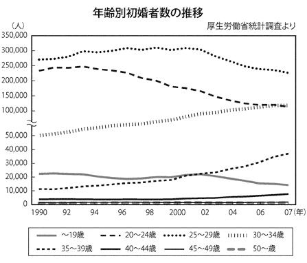
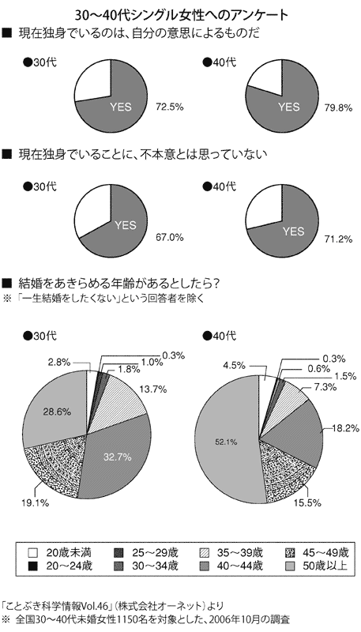
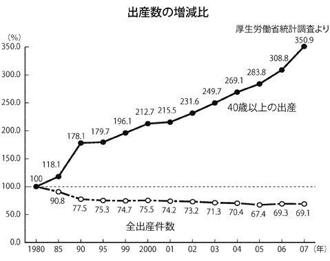
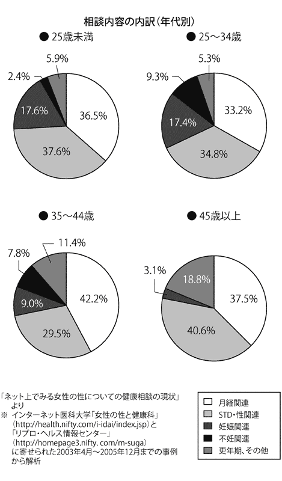

| 満足できない女たち アラフォーは何を求めているのか (PHP新書) | |
| 田中亜紀子 | |
| PHP研究所 (2008) | |
満足できない女たち
――アラフォーは何を求めているのか
田中亜紀子
アラフォーって何ですか？
「ああ、いつまでもバブル引きずってる人たちでしょ？」（31歳 女性）
「あれもこれもほしい！ って欲張りな人たちですよね。確か『注文が多い』とかいうドラマもやってましたね」（26歳 女性）
「いつも自分たちが時代の中心だって思ってるんだっけ？ でも、40代っておばさんだよね」（24歳 男性）
「私たちのことでしょ？ いつも『旬』を押しつけられるのよね」（43歳 女性）
「根拠のない自信が強い人たちですよね」（32歳 女性）
「40歳前後の女性が注目されてるってことですよね。うれしいけど、なんでここまで注目されてるの？」（39歳 女性）
「で、何歳までが対象なの？」（46歳 女性）
「あの自分探しが好きな人たちですよね」（28歳 女性）
「元祖『Ｈａｎａｋｏ』だっけ？ 金遣い荒いんだよね」（33歳 男性）
「うちの会社にも、がりがり働いてるその世代の人たちがいるけど、ああはなりたくないですね」（28歳 女性）
「均等法以降の人たちでしょ、あの人たちって恵まれてるせいか、いつまでも幼いわよね」（52歳 女性）
「こんなしょぼくれた時代に、なんかあの人たちだけ浮いてるよね」（29歳 男性）
「またそんな呼び名を作るから、うちの奥さん、その気になっちゃうんですよ」（40歳 男性）
「アラフォー？ 何ですか、それ。お菓子の名前？」（55歳 男性）
アラウンド40の概念
今、「アラフォー」という言葉が独り歩きして、ブームになっている。「アラフォー」とは「アラウンド40（フォーティー）」の略で、訳すと「40歳前後」。主に女性に対して使われている。しかし、「アラフォー」といった時、それは年齢のことだけでなく、その世代独特のメンタリティを持った女性のことを示しているように感じるのだ。
言葉だけの流行ではなく、彼女たちのライフスタイルや消費行動に注目が集まり、企業は「アラフォーが動かないとモノも動かない」と、商品開発のターゲットとして依存。たとえばブームにのって作られた「Ａｒｏｕｎｄ40」という、アラフォーをターゲットにした曲を集めたＣＤは、発売１カ月余りで現在十万枚のヒットを記録している。
マーケット的な注目に加え、ずばり「Ａｒｏｕｎｄ40～注文の多いオンナたち」という連続ドラマまで作られたりして、現在、いろんな意味で世間から熱い視線を注がれているホットな世代である。
前述のコメントで紹介したように、アラフォーという言葉はかなり浸透しているものの、「じゃあ、何なの？」と聞かれると、反応は人によってさまざまだ。結構さんざんな言われ方もしている。誤解が多かったり、自身がその世代であっても自覚がなかったり。なぜその世代が注目されるのか、まだ十分には理解されていないようだ。
まずは、基本的な概念から説明してみたい。
アラフォーは年齢でいうと40歳前後だが、どこまでを対象とするかは場合によって多少ばらつきがある。四捨五入して40歳という観点からすると、35歳から44歳までとなるが、本書では、２００８年度現在で35歳から45歳の、独身・既婚、子どもあり・子どもなしにかかわらず、その独特のメンタリティを持つすべての女性を対象としたい。
なぜなら、アラフォーの出現は、男女雇用機会均等法施行のタイミングで社会に出た均等法第一世代がそもそもの出発点であるので、基本的に、２００８年度に45歳となる１９６３年度生まれまでをアラフォーの上限とし、雇用均等法第一世代（以下、「均等法世代」）を「元祖アラフォー」と呼ぶことにする。
つまり現時点でのアラフォーは、均等法世代と、その後のバブル世代、そしてバブル崩壊後に社会に出た就職氷河期世代と、三つの世代が混在していることになる。もっとも、女性は年齢に関しては切り捨て主義なので、自分がアラフォーだという自覚があるのは、40歳が目前の38～39歳頃からだろう。なので、本書では均等法世代とバブル世代を中心に語ることとする。
各世代について詳しくは後述するが、40歳を迎えるその日まで、自分は30代と思いたいのが女性の本音。逆に46歳以上でも気分はアラフォー。50歳間近の「なんちゃってアラフォー」も多く生息しているが、アラフォーのメンタリティを持っていればよし！ としよう。
いずれにせよ、40歳前後の女性がここまで「最前線」として語られるのは、歴史上初めてのこと。一体、アラフォーにはどんな特性があるのか？
アラフォーが生まれたきっかけは、均等法世代
あたりまえだが、40歳前後の女性というのはいつの時代にもいたわけで、なぜ今、この世代がアラフォーアラフォーと騒がれるようになったのか。これまでのその年代の女性たちと何が違うのだろうか？
40代向けの女性誌が数多く創刊される中、先陣を切り、もっとも人気を誇る『ＳＴＯＲＹ』の編集長、山本由樹さんは、今の40代の女性を「今までの常識では考えられない、まったく新しい40代が出現した」と評する。
それはなぜか？ 謎を解く鍵は、１９８５年に男女雇用機会均等法が制定された直後に社会に出た、現在43～45歳の均等法第一世代にある。この世代が注目を浴びるのは、今に始まったわけではない。私自身もそうだが、均等法世代はなかなか不思議な運命にある。決して彼女たち自身が特別に強い意志を持っていたわけでも、望んだわけでもないのに、なぜか時代の扉は彼女たちの前に次々と開いていった。
彼女たちが大学生の頃は女子大生ブーム、社会に出る直前に中途半端な内容とはいえ均等法が制定され、ＯＬになればＯＬブームで、『Ｈａｎａｋｏ』創刊とともに元祖「Ｈａｎａｋｏ族」としてバブル気分を満喫。結婚して出産すれば、公園デビューにお受験ママ、そして自分探し。のちにスピリチュアルブームやロハスの立役者となる彼女たちが40代を迎える時、『ＳＴＯＲＹ』をはじめとする40代の女性誌が次々と創刊された。時代とともに歩み、マスで行動する最後の世代と呼ばれる。そんな均等法世代の歩んできた道こそが、アラフォーが生まれた理由そのものなのだ。
選択肢という重荷
均等法制定以来、普通の女性が社会で長く働くことがあたりまえになり、従来とは違う選択肢が増える中、年を重ねる。このことで、それまでの「女の幸せは結婚」という観念に基づいた、「結婚か仕事か」というシンプルな選択肢ではなく、結婚する・しない、子どもを産む・産まない、正社員で働くか否かなど、人生の選択肢が増えた分だけ、女性のライフスタイルや嗜好性は多様化してきた。
均等法世代はモデルとなる前例がなかったので、以後の世代のように、不器用な先輩を反面教師にすることもできず、あれこれ手を出しては滑って転んで、失敗も多かった。だが松田聖子のように握力の強いイメージがあるせいか、男性や下の世代からは、あれもこれもほしがって「わがまま」だの「欲張り」だのと揶揄されるのだ。
確かに、実体はどうあれ、仕事も結婚も子どももとすべてを手に入れたいと思った人も多い。この傾向はむしろバブル世代のほうが強く、両者ともにバブル時にはＨａｎａｋｏ族として、自分のほしいものには惜しみなくお金をつかい、消費を楽しんできた。何事に対しても自分で判断するものさしを持ち、好みが明確。しかもマスで行動する。マスメディアの情報も十分参考にするので、マーケットから見れば、ありがたいお客さんであることは間違いない。
前述の『ＳＴＯＲＹ』編集長、山本さんは言う。
「彼女たちは、日本のもっとも豊かな時代に自由に消費を楽しんだ、マテリアルガール（＝物質主義の女）。そんな人たちが40代になり、それまでの40代のライフスタイルやファッションでは物足りず、新たなマーケットを構築しながら、まだまだこのままでは終わりたくないと積極的に人生にチャレンジしていこうとしています。
笛吹けば踊る人たちというか、こちらが提案すると、それをもとに行動してくれる、ありがたい読者ですね。その下の世代、今ちょうど40歳になる世代は、自分らしさを追求する気持ちが強く、全体としての好みをつかみにくい特徴があります」
恵まれているようだが、彼女たちは、必ずしも贅沢にわがままに生きてきたわけではない。このあたりは誤解が多いようで、ドラマでも「注文の多いオンナたち」という副題がついていたことに、私としては違和感があった。別に、「あれはいや」「これもいや」とみずから注文をつけてはいないのだ。第一、均等法自体が中途半端で、平等なのは名前だけというお粗末な代物だった。企業も女性をどう扱っていいかわからない混乱の中、社会に出たわけで、いわば出だしからつまずいたといえる。
彼女たちは先駆者ゆえに、新しいシステムができても、旧来の社会常識や通念にはばまれて、環境未整備に泣かされたり、いつも必要以上に悩まざるをえなかった面が多い。時代の変わり目の風を受けつつも、迷いながら、増えていく選択肢をみずから選んできた。
自由も増したが、その分後悔や悩みも増え、これまでの女性たちが経験したことのない生きる難しさを体感。均等法世代は、常にパイオニアにならざるをえない、いわば前人未踏の道を歩んでいるのだ。
「クリスマスケーキ」の時代ははるか遠く、今や適齢期は39歳
以前の40代女性たちと今のアラフォーが決定的に違うのは、結婚するか悩む年齢が異様に延びたことではないか。今や「適齢期」は、40歳を迎える直前の39歳まで延びたといっても過言ではない。
女性の婚期をクリスマスケーキにたとえ、25歳になるまでに結婚しないと「売れ残り」とされたのは、二十数年ほど前のこと。セクハラという言葉もなかったので、当時は未婚の女性が職場などでずいぶんといやな思いをしてきたが、実際のところ、25歳なんて若くてお肌もぷりぷり。それを「嫁き遅れ」扱いするなんて、恐ろしいことだ。
ところが、均等法の制定から時が過ぎ、四年制大学を卒業した女性がある程度長く働くことがあたりまえになるとともに、寿退職も減少。適齢期はいつしか20代最後の29歳頃まで延び、さらに最近では気がつけばそのラインも軽々と乗り越え、出産が可能なぎりぎりのラインである40歳直前の39歳まで延びている。
一体、いつの間にそこまでラインが延びていたのか？ 以前の常識なら、40歳は「不惑」。結婚の話などタブーだっただろう。しかし今の40歳前後の女性は、結婚していてもいなくても、惑わないどころか浮つきまくり。まだまだ女性としての現役感があり、やりたいこともたくさんある。外見も若く、40歳を過ぎて元気に出産する人も増えている。
シビアな現実を内包しつつ前に進むアラフォー
適齢期という価値観に縛られず、独身でいることに対して世間からあからさまに白い目で見られなくなったのはいいことだ。しかし、39歳と以前の適齢期だった29歳を比べると、絶対的に違う、少々つらい現実がある。
それは、出産までのぎりぎり感だ。
今までの適齢期が「女は若いほうがいい」などという、男性側の勝手な意見による外見重視や若さ信仰からきたものであったとしたら、39歳というラインは違う。女性の体の内側からの「子どもを産むなら、そろそろ真剣に考えないと産めなくなっちゃうよ」という警鐘からくる、本能的な適齢期なのだ。「出産できる年齢」というタイムリミットに向かって、砂時計の砂がさらさらと落ちていくのを実感するような、危うい適齢期である。
そして、いくら若く見えようとも、加齢による体力や容色の衰えを自覚せずにはおれない。太りやすくなったり、白髪が増えたり、シミやシワといった現実からは逃げられない。それ以上に深刻な問題であり、恐怖なのは、親が弱ってきていること。親の病気、死、介護問題などが勃発し、本当の意味で生きる上での問題や悩みが出始める。
たとえシングルであっても、お気楽には生きていけない。むしろ若くして結婚を決意していた時代や、選択肢すらほとんどなかった時代のほうが、女性自身にとってはよけいなことに悩まないですんだ分だけ、その歩みは気楽で、守られた人生だったのかもしれない。既婚・未婚を問わず、生きる悩みや疲れをシビアに内包しつつ、それでも強引に前を向き、現在進行形の未完成の状態で生きているのが、アラフォーなのだ。
「均等法」「バブル」「就職氷河期」～アラフォーを構成する三つの世代
先ほど簡単に説明したが、まずアラフォーを構成するのは「元祖アラフォー」の均等法世代。企業の対応がばらばらだったせいで、この世代が厳密にはいつまでか定めるのはなかなか難しいが、本書では基本的に、均等法ができてすぐ社会に出た、現在43～45歳の人々を均等法世代とする。それより下の年でも、実体験として「私もそうだ！」と思う方もいるだろうから、状況により幅をもって解釈してほしい。
均等法世代にひっぱられ、バブル時代の享楽的な部分をもっとも享受してきた真性アラフォーの「バブル世代」（43歳～）。そしてアラフォーの最年少ライン（37歳～）である、「就職氷河期世代」。この世代は、社会に出る前にバブルが崩壊し、何かと苦労するはめになってリアリストの面が強い。
氷河期世代は就職で苦しんだものの、企業の建前と本音の間で均等法世代が悩み苦しんだ「女性が企業で男性と同等に働く」という価値観は当然のもの。仕事も結婚も出産もみんなほしいと、ナチュラルに女性であることを活かしながら働いているという、実はうらやましい世代でもある。
彼女たちがみずからを称していわく、「バブルを経験したお気楽な人たちと違って、危機感が強い」とのことだが、少なくとも男女雇用機会均等法が、制度上だけではなく人々の心にもなじんだ頃に社会に出て、上の世代を前例にできるため、生き方を賢く選ぶことができるようだ。
このように、アラフォーと一口に言っても、三つの世代の価値観にはばらつきがある。
ちなみに氷河期より下の世代は、アラフォーを見て「働くことにがつがつしちゃってみっともない。やっぱり専業主婦が一番。女の幸せは結婚！ かりかりしないで、そこそこ暮らしていければいいの」と言いながら、ひそかに玉の輿を願い、「松坂妻（柴田倫世さん）」などを理想としているらしい。専業主婦を目指す人も少なくないが、夫の給料がのびず、二人で年収三百万円ぐらい、とサバイバルな現実も待っていたりして。
本書では、元祖アラフォーの均等法世代と、真性アラフォーのバブル世代を中心に、ライフスタイルや思考を探りながらアラフォーを読み解いていく。なぜアラフォーが注目されるのか。欲張りといわれるが、本当はどうなのか。彼女たちは本心では何を考えているのか。
女として「旬」の季節は長くなったけれど、親世代からは、「一体何を考えているの」とぼやかれ、同年代の男性からは、理解不能、生意気だと思われ、さらに下の世代の女性からはああはなりたくないと言われ、考えてみればさんざんなアラフォー。
気まぐれに開いていく時代の扉に翻弄されつつ、彼女たちはどんな道を歩み、何を考えてきてきたのか、何より、その独特のメンタリティとはどういうものなのか、浮き彫りにしていきたい。
テレビドラマと元祖アラフォー～女性の適齢期やライフスタイルの描かれ方は、どう変わってきた？
いつの世もテレビドラマはその時代を映す鏡だが、特に女性を主人公にしたドラマは、ライフスタイルや適齢期、仕事への意識などが色濃く出ていておもしろい。
２００８年の「Ａｒｏｕｎｄ40～注文の多いオンナたち」というドラマは、40歳を前にした主人公が恋や結婚に悩む「女の現役」として描かれたことに意味がある。ついに適齢期が39歳になったことが公認されていたというか、シングルも子どものいる主婦もちゃらちゃら自分のことに悩むという、ある意味子どもっぽい39歳の姿が描かれていた。以前なら考えられないが、それが現在のリアルなのだ。
元祖アラフォーが子どもの頃は、適齢期が20代前半だったこともあり、ドラマの登場人物たちは、若くてもきちんと大人として描かれていたように思う。また、66年の「氷点」や67年の「白い巨塔」など、のちにリメイクが繰り返されるシリアス系名作も多かった。
まだ幼かったのでリアルタイムでは見られなかったが、女性が活躍するドラマは、69年のお色気女性アクション「プレイガール」や、若き野際陽子が出ていた国際スパイアクション「キイハンター」。前者の主人公たちの職業は国際秘密保険調査員、後者が元国際警察諜報部員って、あなた......、と言いたくなるが、女性が主人公だと仕事には非日常が求められたのか？
小学生の頃、夢中で見たのが、スチュワーデスを目指す女性の活躍を描いた元祖お仕事ドラマ「アテンションプリーズ」。一方で「ケンちゃんシリーズ」など、子ども向けドラマも無邪気に楽しみ、ＮＨＫの少年ドラマシリーズ「タイム・トラベラー」で、この世の神秘を知る。さらに「サインはＶ」「美しきチャレンジャー」などスポ根ものにも熱中し、「おれは男だ！」「飛び出せ！青春」「われら青春！」など、森田健作や中村雅俊が出演する、スポーツをモチーフにした青春学園ドラマも気になる存在だった。
しかし、何といっても当時はホームドラマ全盛期。水前寺清子の「ありがとう」、森光子や堺正章の「時間ですよ」、向田邦子脚本の「寺内貫太郎一家」など、ドラマは親と一緒にお茶の間で見るものであった。当時のシングル女性役は、働いている場合は警察官や教師、スチュワーデスといった専門職。家業を手伝いながら花嫁修業という役柄も多し。
女性の職業とは関係ないが、小学校の時、女子に圧倒的に人気だったのが山口百恵と三浦友和の「赤いシリーズ」。白血病などの難病や、恋人が実は兄妹だった、など悲劇的要因がてんこもり。今思えば、これは少女漫画のようであるとともに、まさに韓流ドラマの源流。「冬ソナ」で感じたあの懐かしさはこの影響でしたか。その他、「３年Ｂ組金八先生」「ゆうひが丘の総理大臣」など学園ものに親しみつつ、山田太一が描くドラマに夢中になる思春期。
25歳になる前に結婚しなければ売れ残り、という「クリスマスケーキ」の時代を象徴したドラマが、元祖アラフォーが高校生の81年に放送された山田太一脚本の「想い出づくり」だ。自分探しに悩む24歳の主人公たちを古手川祐子、田中裕子、森昌子が演じ、生き方に悩む等身大の女性が描かれたことが斬新だった。「Ａｒｏｕｎｄ40」にも通じるものがあったが、この時は15歳も若い設定だったのが今考えると怖い。
大学時代には「ふぞろいの林檎たち」に胸をはずませ、主婦の不倫模様を描いた「金曜日の妻たちへ」シリーズも興味深く見つめた。これで不倫が普通と刷り込まれたか？
元祖アラフォーが社会に出た86年に放送されたのが、「男女７人夏物語」。フリーライターの大竹しのぶと旅行会社のツアコン明石家さんまの掛け合い漫才みたいなやりとりが本当におもしろかった。他にもウグイス嬢の賀来千香子にディーラーの池上季美子、奥田英二、鶴太郎など豪華なメンバーが入り乱れる恋愛群像劇を、会社から帰ると夢中で見ていたＯＬ多し。
この時すでに「25歳＝売れ残り」ではなく、主人公が28歳のシングルだったことを思うと、適齢期はやや上昇。女性陣の職業もバラエティに富んできた。
また88年放送の田村正和主演「ニューヨーク恋物語」のロマンティック加減に切ない気分になった木曜日。海外で働くＯＬがぼつぼつ出てきた当時、バブルの勢いを反映して、ニューヨークの証券会社に勤務する桜田淳子が「チャンスをつかむのよ！」と、ターバンを巻いた白菜のような頭ときついメイクで毎回気炎をあげていたのが、ヒロインの岸本加代子より印象的であった。
そして80年代後半から、ダブル浅野が主人公の「抱きしめたい！」を代表とするトレンディドラマの時代に。スタイリストやテレビディレクターなどいわゆるカタカナ職業の、生活感がない男女のおしゃれな暮らしと恋愛を見せる軽い内容の群像劇だったが、ある意味設定だけで、主人公たちはまったく仕事をせずに恋愛にばかりうつつを抜かしていた。
その後、純愛ドラマと呼ばれた「東京ラブストーリー」（鈴木保奈美、織田裕二主演）では、女性から「セックスしよう！」と直接的なアプローチをすることが話題に。折しも時代は、アッシーだメッシーだ成田離婚だと、女性が強い時代になっていた。お見合いやマザコン男性「冬彦さん」の恐怖を描いたドラマ「ずっとあなたが好きだった」も、怖いもの見たさで目が離せず。野際陽子の恐ろしい姑役は、以降ずっと当たり役に。
そして山口智子が、等身大の女性ドラマで主役をはる時代がやってきた。「ダブルキッチン」では野際演じる姑と二世帯同居する共働きの妻を演じ、「スィート・ホーム」ではお受験にはまっていく母親をコミカルに。そして「29歳のクリスマス」では、松下由樹と共に恋に仕事に悩む29歳の女性を演じ、同世代（＝現在のアラフォー）の女性たちから強い共感を得た。このドラマで「29歳適齢期」が公になったような......。
松下由樹は以前「想い出にかわるまで」という内館牧子の超ドロドロドラマで、今井美樹扮する姉の婚約者（石田純一）を強引に奪う妹役でひんしゅくをかっていたが、このドラマで一矢報いる。そして山口智子は「ロングバケーション」で年下の売れないピアニスト（木村拓哉）との恋愛を演じたあと結婚して、タイトルのごとく長期休養に。バブルの疲れが出た時代で、一般の女性も充電モードに入りたい気分であった。
それ以降は、「お仕事ドラマ」が目立ってくる。「ショムニ」では総務のＯＬ（江角マキ子）が吠え、そのほかフード関連、ブライダルコーディネーター、女子アナなども登場。
そして山口智子から等身大の働く女性のバトンを受け継ぎ、数々の名作に出演したのは深津絵里だ。「きらきらひかる」で新米女性監察医、「踊る大捜査線」では所轄の刑事、「カバチタレ！」でやり手の行政書士、ダメＯＬが仕事の楽しさに目覚めていく恋愛ドラマ「恋ノチカラ」で、働く女性の心をがっちりつかむ。
さらに負け犬ブームとともに篠原涼子が「ａｎｅｇｏ」で30代前半のシングルＯＬを演じ、さらに「ハケンの品格」で存在感を発揮。元祖アラフォーよりはるかに年下の女性が活躍するドラマが人気となり、ついにアラフォー世代は主役から遠ざかったか......と思いきや、「Ａｒｏｕｎｄ40」で39歳の女性たちが登場したわけだ。いや～、しぶとい！
主役は天海祐希演じる精神科医で、お金がふんだんにある設定ははっきりいって今ひとつ現実味がなかったものの、彼女のこの年齢での美貌は頼もしかった。「29歳のクリスマス」に出ていた松下由樹が等身大の主婦役を演じていたのも、たくましい。
最近では仕事内容もある程度詳細に描かれるようになり、アラフォードラマで適齢期は39歳まで底上げ！ これからテレビドラマで描かれる女性像はどうなっていくのか、非常に楽しみだ。ただし、いまだに女性が働くことをお飾り的にしか描けない脚本家が多いのは、何とかしてほしいものであるけれど。
女子大生ブームの中の均等法前夜
「アラフォー」が現れるきっかけとなった男女雇用機会均等法が制定されたのは、１９８５年に遡る。この章では、元祖アラフォーである均等法第一世代が社会に出た頃に話を絞っていきたい。
均等法第一世代とは、この法律が施行された１９８６年と翌年に四年制大学を卒業し社会に出た二つの世代を指すことが多いようだ。なぜかといえば、施行前の85年に行なわれた求人の段階では男女平等の採用を見送った企業も多かったので、86年の卒業者たちでその恩恵を受けた人は少なく、結局、女性の総合職第一期生は企業の都合で順次導入。浸透までには数年かかったが、ある程度出揃ったのは施行の次の年ぐらいだったのだ。
だから、まさに均等法第一世代であっても「私はプレ世代だと思ってた。うちの会社は導入してなかったし」という人もいれば、施行後数年たってから就職した人が「えっ、私も均等法世代ですよ。だってうちの会社、総合職とったばかりでしたもん」という人もいたり、当時の混乱はこんなところからもしのばれる。
さて、この男女雇用機会均等法、前章でも述べたが、制定されても企業に課されるのは努力義務だけ。平等なのは名前だけ、と揶揄される不完全な代物であったが、それでも、当時の社会で画期的だったのは間違いない。しかし肝心の就職をひかえた女子大生たちにとっては、何か新しい法律ができたらしいけど、「よくわかんない」ものであった。当事者なんてそんなものだろう。
実際、彼女たちが就職活動をしていた85年は、法律は決まったものの施行前夜。施行をにらんで85年からきちんと男女一緒の募集をする企業もあれば、様子見の企業も多く、四大出の女子に対する男子と同レベルの求人はまだまだ少数で、従来と同じようにコネ採用が幅をきかせていた。もともと均等法世代が大学に入る頃は、女子は四大出だと就職できないし婚期が遅れると、短大が人気だった時代だ。特に文系女子は、卒業しても教師ぐらいしか仕事がないといわれていた。
そんな社会状況で、彼女たちが大学に入ると同時に女子大生ブームがおこった。のちに『ＳＴＯＲＹ』の表紙で再びブレイクする樫本知永子さん（のちに黒田知永子さん）たちが表紙を飾っていた『ＪＪ』や、深夜番組「オールナイトフジ」、深夜放送「ミスＤＪ リクエストパレード」など、女子大生が何かともてはやされていた。合コンだテニスだ海外旅行だと「とにかく遊んじゃえ！」という学生生活を送った人が多いだろう。
『ＪＪ』には、女子大生にまじり、若いＯＬもたくさん出ていた。「三井物産勤務。平日は合コンが多く、週末はゴルフと忙しいです」など、自分たち女子大生とは一味違う高価な服に身を包んだ一流企業に勤務する彼女たちを見ることが、就職したあとの自分の姿のシミュレーションであり、一流企業に勤務することという、よくわからないけど楽しそうな幻想を抱かせるものであった。
そんな漠然とした憧れだけで、実際に企業に入ったら何をするのか？ ＯＬをするというのはどういうことなのか？ 一般事務って何なのか？ きちんとわかっていた人は少なかったのではないだろうか。今のように女性誌に働く女性ががんがん出て仕事のやりがいを語る、という時代ではなかったから、仕事内容や職種についての情報も少なく、あながち彼女たちを責められない。
均等法世代が就職活動をした１９８５年は、ネットなどもちろんこの世になく、資料は『就職四季報』や『就職ジャーナル』、踏み込んだとして『私たちの就職手帖』。それらで聞いたことのある会社をチェックし入社案内をもらいに行き、そこに勤務している先輩を夏休みに訪問するといった、今からするとのんびりした活動だった。私など四季報を見たところで、その会社の有休が年に何日あるのか、前年のボーナスが何カ月分なのか、というぐらいしかわからなかったボケなすだ。
みんなとりあえず、人気のある企業、それこそ『ＪＪ』にのっているような、聞いたことのある企業を中心に回り始めた。コネのある会社もさりげなく回る人は多かったけど、いずれにせよ、職種や仕事のことがよくわかっていない状況で訪問したって、せいぜい先輩に社食で昼ご飯をおごってもらい、なんとなくおしゃべりして帰るのが関の山だ。
コネがない人や仕事に対する意識が高かった人は、新しい企業や女性を活発に採用している企業を中心に意欲的に回り、やはり真剣味も違ったように思う。そういう人でも、当時どのぐらい均等法や仕事内容を意識していたかを聞いてみると、「あの頃はコネがなかったら、もう入れたら御の字と、四大女子の採用が多い企業を探していて、均等法がどうこうという意識はほとんどなかったですね」「男女一緒の条件とか、やりたい仕事内容かどうかなんてほぼ二の次。コネなし地方出身は求人自体が少なかったし、基本的に仕事内容は聞いてもよくわからなかった」という答えが多く返ってきたので、少し安心した。
そんなわけで、当時はほとんどの人が「どこか名の通った会社にもぐりこめれば......」という姿勢で、希望や将来像がはっきりしていたのは、教師になりたいとか、マスコミで働きたい、理系の学生なら研究職につきたい、あるいは英語を使いたいとか、せっかくだから総合職を狙うという一部の人ぐらいで、あとは漫然とコネのあるところに就職した人も少なくなかっただろう。
たまたまそのコネのある会社が均等法を意識した男女平等の採用をしていれば、それに従うだけ。当時はプログラマーやＳＥなどに四年制女子の大量採用が始まり、結果的には均等法の恩恵を受けた就職をした人と、従来の男性の補助的な仕事での採用となった人は、半々ぐらいの気がする。
お気楽な女子大生がきちんと仕事のことを考えなかったのだから、その後どういう目にあっても当然、という気もするが、当時はとにかく情報が少なかった。ただし常にスポットがあたっていた世代として、彼女たちの胸には、なんとなく「根拠のない自信」があった。これが、のちに失望感や未達成感をより強く感じる要因になったのだろう。
小学校からこのかた、学校では完全な男女平等のもと育った世間知らずで、根拠のない自信を持つ浮かれぽんちの女子大生。前の世代と違って、特別な覚悟のない「普通の女の子」が社会で長く働くことになる最初の世代が社会に出る、幕開けの時がやってきた。
扉は開いたはずなのに
１９８６年４月。男女雇用機会均等法が施行されたが、状況は何ともいびつというか、企業によってあまりにばらばらで、混乱していた。
総合職第一期生としてマスコミに華々しく取り上げられ、男性と同じ待遇でスタートを切ったはずの女性。均等法などなかったかのように無視する企業に勤務し、従来と同じようにお茶くみ的な仕事についた女性。その両方が混在している企業に入った女性。会社によって状況があまりにも違い、本人も会社も当時は何がなんだかわからず、友人たちと週末に愚痴をこぼしあっても、お互いの状況がさっぱりわからなかった。
「もう、信じられない！ 初日から伝票の計算とお茶入れだけで一日が終わったよ。先輩を見てても、延々同じことやってる。もう辞めたいよ」（金融、一般事務）
「週末、男の先輩について地方の営業に行かされて、泊まったのが汚いビジネスホテル。なんかうらぶれた気持ちになっちゃった」（メーカー、営業）
「興味もないのにプログラマーに配属されて、毎日部屋にこもってマニュアル見ながら研修で、脳天しびれて老けたよ」（サービス、システム）
就職活動時にはのんきだった女子大生たちが、社会に出てすぐに気がついたのは、自分たちの選択がいかに重要だったかということ。それまでのんきでいられた理由の一つは、社会に出る前までは完全な男女平等の世界にいたからだった。当時の「一般事務」の女性に求められるのは男性のサポートであって、会社に勤務するといきなり「身分が一段下」になるということが、まったくわからなかったのだ。
均等法を導入していない企業に入社した人は、そんな現実の「洗礼」を受け、せっかく均等法という何やら画期的な法律ができていたのに、それをきちんと理解することもなく、企業を吟味せず会社名だけで就職してしまった自分を責めた。
では、均等法を意識した会社に行けばすばらしい状況が待っていたのかというと、これも違う。総合職の女子を試しに採用した企業には、法律ができたので、女性の社会進出に理解がある企業と思われたいという、世間の目を意識した、形だけのところも多かった。
実際、きちんとやろうとした会社もあっただろうが、やはり前例がない男社会では無理があったのだ。そもそも、きちんと女子も採用している会社は、法律ができる以前からやっていたわけで。
この時に総合職第一期生として華々しく就職した女性のほとんどが失望し、櫛の歯が抜けるように辞めていき、二十数年たった現在も残っている人は、恐竜並みの絶滅種に近くなっている。一体、当時、何があったのか？
制度ができても人の心はついてこない
たとえば銀行の総合職として入行した女性は、当時を振り返り、「口では『君たちに期待している』と言いながら、女なんて、というのが見え見えでしたよ。一年で辞められたら困るけど、三年もいてくれれば十分と言われました」と語る。
銀行にしろメーカーにしろ、男性と同じ条件で、鳴物入りで採用された総合職第一期生は、基本的には非常に優秀で、やる気もあった。しかし会社は彼女たちの扱い方がわからず、何事も「前例がない」として、腰がひけていた。
研修が終わるといきなり仕事の与えられ方に男性と差がつき、重要な仕事を任されていく同僚の男性たちを尻目に、中途半端な仕事しか与えられず、あせる彼女たち。しかも何か失敗するたびに「だから女は」と言われることを避けようと、よりいっそう細かいことにも気をつかう。さらに大変だったのは、彼女たちの敵は男だけではなかったことだ。
先輩の女性社員たちが、「何であの人たちだけ、男性と同じなの？ 女のくせにお茶くみもしないってどういうこと？」と、自分たちには開かれなかった扉をやすやすとくぐり抜けてきたことへのやり場のない怒りを彼女たちに向けていた。同期で入社した一般職の女性たちの胸の中にも、「なぜあの人たちだけ？」という気持ちが多少あっただろう。
そんな抵抗感からか、彼女たちは、男性から頼まれる雑用は喜んで受けても、女性総合職から頼まれるコピーとりやお茶くみはさりげなく拒否。総合職の女性はいやな思いをしたくないばっかりに、そういう雑用も人に頼まず自分で抱え込み、さらに残業が増える。
次の日、疲れきって会社に行くと、「○○さんは、お茶の時間におみやげを配らなかった」などと貼り紙がされていたり、自分にだけお茶がいれられていなかったり......。また、先輩社員に給湯室に呼び出されて、女なんだからお茶当番はやれと命令されるなど、面倒なことが山のようにあった。
それを断固としてはねつけ、「私は総合職なのでお茶くみはしません」などと大人げないことを言おうものなら、さらにいじめられ疲弊。「これも処世術」とわりきって、お茶くみなど従来の一般職の仕事もこなし、本来の総合職の仕事もしていれば、いじめられなくても心身がくたくたに。いずれにしても、彼女たちはひどく消耗していった。
それだけがんばっても差別はひどく、「女は海外出張には行かせられない」とチャンスさえ与えられず、大事なことは会社帰りの飲み屋で、男同士のコミュニケーションで決められてしまい、悔しいことばかり。事務職の女性たちが非協力的なことも、総合職の女性に人徳がないせいにされるのだから、まったくやってられない話だ。
逆に、男並みに働く気などなかったのに、なぜこんなに働かねばいけないの？ というパターンもあった。保守的な金融や建設の分野に比べると、メーカーはいくぶん柔軟に対応しており、営業として採用された女性は、男性並みに全国出張などもあった。ＳＥやプログラマーの採用では男女一緒に研修をし、それほど差がなかったほうだが、基本的にまだ女性は「女の子」扱いだった時代だ。
業界によっては当時、総合職以外の女性社員はこれまで同様、基本的に社員のお嫁さん候補だったという事実も見逃せない。均等法以前から、商社や建設関係などは、四年制女子を一般職として大量に採用していたが、まさにお嫁さん候補にふさわしい、かわいらしいムードの生意気ではない女性を中心に採用していた。大手建設会社の制服が、パフスリーブでピンクのかわいいものだったのを見て、「これって年とったら着られないじゃん」と、その会社のあからさまなやり方にむっとしたこともあったっけ。
当時Ｓ商事に勤務していた人によれば、「とにかく三年は勤めてくださいね」と面接の時から口をすっぱくして言われていたが、三年が経ってからは社内結婚による寿退社のラッシュになったとか。仕事は男性の補佐でも激務で、毎日夜中まで残業。同じ部署に若い男性社員がいれば、恋が芽生えるのは当然。運悪くおじさんばかりの部署に配属されると、忙しいだけで恋愛の機会もなく、休日は疲れきって寝ていて出会いもない、という悪循環に入りこむ。
実際、当時は女性の退職といえば寿退社全盛期。同僚との結婚が決まったら、退社日にはきれいなお洋服を着て関連部署を回り、大きな花束をもらって意気揚々と去っていく、というのが女の花道。そうして王道を行った女性も、まだまだたくさんいた時代だ。
そんな中、ちゃんと仕事をしたいと思って総合職として入社したのに、差別的な待遇に失望し疲れきった人。仕事をする気満々なのに、会社は女の子扱いをして、大した仕事を任せてくれないことにストレスを感じていた人。25歳というまだまだ若い盛りに結婚して寿退社など、するつもりのない人。もっとちゃんと女性に仕事を与えてくれる場所に行きたくなった人。逆に、男並みに仕事をする気などさらさらなく、海外旅行やおけいこごとがしたい！ と、プライベートを大切にしたい人。
均等法の恩恵にあずかった就職ができた人もできなかった人も、心の中には「新しい扉が開かれたのに、自分は機会をうまく活かすことができなかった」という未達成感が、強く心に刻まれた。そんな気持ちを胸に抱え、お手本となる前例もない彼女たちは、寿退社や家事手伝いではない何かを求めて、次のステップを自分で切り開いていくことになる。
折しも時はバブル。ユーミンに竹内まりや、サザンに彩られた時代は、ＯＬブームを迎えようとしていた。そして、元祖アラフォーが25歳となる１９８８年、雑誌『Ｈａｎａｋｏ』が創刊される。
Ｈａｎａｋｏブームの中で自分探しスタート
彼女たちが悩みを深めていた当時、世間はバブル。会社が気にいらなくても、扱いや仕事に不満があっても、ボーナスは比較的潤沢に出た。私も今思えば、若い身で数十万円の大金を手にしていたことが信じられない。あのお金は一体どこに消えたのか？ 謎である。思い出すのは花金と称した金曜日や、ノー残業デーが始まったばかりの水曜日など、『Ｈａｎａｋｏ』片手に特集されている街に出て、会社の同僚や学生時代の友達とフレンチだイタリアンだと高い店によく食事に行っていたこと。
みな忙しい仕事のストレス解消に「自分へのご褒美」と称して、アクセサリーやバッグ、それこそ当時を象徴するティファニーのアクセサリーなどを購入したり。休みをとって海外旅行にもよく出かけ、均等法世代やバブル世代はＨａｎａｋｏ族と呼ばれ、自分のために存分に消費を楽しむ人の代名詞だった。
映画『私をスキーに連れてって』のヒットが時代を象徴して、毎週末スキー場に出かける人も多かった。そういう楽しさを横目で見ながら、あるいは経験しながらも、自分がいる場所への違和感や失望で胸に穴があき、出口を探してもがいていた人たちもいれば、社会に出て三年働いた25歳頃に適齢期を迎え、結婚を順当に考えていた人たちもいて、状況はわかれていく。総合職でひどい扱いを受けて失望し、鳴物入りで入った会社を早々に辞めて専業主婦になった人もいる。
今でこそ転職は一般化して、二度や三度は普通のことで、女性誌をはじめいろんな媒体で働く女性の特集があり、企業や職種の情報がたくさん出ているが、当時は寿退社全盛期。転職や職種の情報はほとんどなく、しかも結婚もしないのに転職する、というのはマイナスのイメージが強く、なかなか勇気のいることであった。
それでも、時代の扉が開いたのに未達成感を抱え、「今度は失敗したくない」「まだまだ自分には何かできるはず」という気持ちを抱いていた女性は、バブル景気の中、自分の居場所を求め、手探りながら外の世界へ繰り出していった。いわゆる「自分探し」のスタートでもあった。
寿退社ではない退職
まずは、このままいてもやりがいのある仕事ができるとは思えない会社を辞めて、「転職」を考えた女性たち。世間的にマイナスイメージが強く、情報もあまりない中、今度こそ、最初の失敗を繰り返さないように本気で考えた。
「女の子」扱いしないできちんと仕事をさせる会社や、女性が長く勤められる会社を探す人。当時流行していたコピーライターやシナリオライターの養成講座に入り、マスコミ系に転職する人。もともと男女平等の外資系に転職する人など、さまざま。
バブルだったので比較的仕事はあり、転職先には困らなかったが、結局入ってみないことにはよくわからないので、一度の転職ではうまくいかず、失敗を繰り返す人もいた。
本人たちにとっては、最初に入った会社を辞めるのは必然だったが、親たちは激怒。女性を「女の子」扱いする、いわゆる「日本的」な会社ほど一流企業だったりして、親の目論見としてはあわよくば社内結婚でもしてくれればと思っていたのに、娘はよくわからない論理で勝手に退社を決めてしまい、親たちは大慌て。泣いて止めた親も多かったようだが、もういたしかたあるまい。私の家でも、冷たい戦争が何年も続いた。
やりがいのない仕事だから、転職する。これは親世代や同年代の男性の常識にはなかった価値観だ。
均等法などなければ、女性の仕事の基本はお茶くみだとある意味あきらめられたかもしれないが、下手に均等法ができたばっかりに、企業が混沌とした状況にある中、なんとなくやりがいのある仕事をしている人もいる。でも自分は違う。もっとできるはず。
状況があまりにばらばらだったことで、「ほかに活躍できる場所があるはず」という気持ちが、時代のスポットがあたって、根拠のない自信があった彼女たちの心に芽生えてしまったのも無理はない。
また、ちょうどこの頃は、フリーターという言葉もちらほら出始めていた。転職先を決めてから退社して間をあけずに再就職した人もいたが、とにかく辞めてから就職活動をする！ という人も多かった。当時、人材派遣が一般化しだしたこともあり、とりあえず辞めてゆっくりして派遣社員になったり、転職先が決まるまでは長い間旅に出たりと、案外自由に行動していた。
私も辞めるまではなんだか悲壮な気分だったが、一度会社を辞めてしまうと深く呼吸ができ、そういえば自分はまだ若いことを思い出したような気がする。当時の会社というのは、本当に女を老けさせるところだったと思う。
「フツーの女の子」が海外留学
特別な能力がなければ、違う会社に行っても同じことになると危機感を持った人。まじめに働いたから、少し海外でゆっくりしたい、また学生になりたい、という気持ちを持っていた人。そういう人は、会社を辞めてボーナスを握りしめ、海外留学に走った。
今のようにメールがない時代では、事はそう簡単ではない。周囲にも留学する人はあまりおらず、『留学ジャーナル』などを購入し、留学を扱っている会社の説明会にこわごわ行って情報を集め、海外の学校にエアメールを書き、ドキドキしながら返事を待った。
もともと英語が好きなので、留学して語学力を磨き、帰国後は英語を使った仕事につきたいという真剣な人。とにかく充電したい！ 遊びたい！ と、ワーキングホリデーやあまり厳しくない語学留学をセットにしたい人。目的も期間もばらばらだったが、みんなホームステイや学生寮、日本人数人で大きな家をシェアしたりして、もう一度学生生活を楽しんだ。
そんな彼女たちを、親や同世代の彼は理解できなかった。なんだかんだいっても25歳が適齢期の時代に、その年で一人海外で羽をのばしていたのだから、周囲はあわてた。英語力を磨こうと留学した人たちの中には、帰国後、外資系企業に入れた人もいたが、結局、派遣会社で「英語を使いたい」と言って英文の書類を扱う会社に派遣されたり、英語とは関係ない会社に転職したり。うまくいかない場合は、結婚に走ったり。
適齢期はしだいに25歳から29歳あたりまで延びていったものの、それでもやはり周囲からのプレッシャーや、本人の中にあった「適齢期」の縛りも発動し、留学組に限らず、この頃は結婚して家庭に入る人がかなり増えていった。
決死の覚悟のＭＢＡ留学
留学組の中で、もっとも決死の覚悟をしていたのが、お金も精神の負担も大きかった自費のＭＢＡ留学組だろう。今でこそ日本の大学院で会社勤めと並行して学ぶことができるが、当時は海外で数年かけて取得するしかない。しかも、ＭＢＡ＝ビジネスの専門家、という認識もまだまだ少なかった。
それに自費で挑戦した女性たちは、とにかくキャリアのパスポートが真剣にほしかった人たち。それまでいた会社での扱いが屈辱的だったり、きちんとした武器を持って次のキャリアに臨みたいという強い意志があった人だ。それがなければ、とても無理だったろう。
ちょうどバブルのさなか、企業派遣でＭＢＡ留学に社員を送り出す時代になっており、留学費はすべて会社持ちでお給料まで出る企業派遣組に対し、自費組は何から何まで自分の負担。しかも学んだからといって何が約束されるわけではないから、精神的にも非常につらかったという。
バブル期後半に27歳でアメリカの有名大学のビジネススクールに自費で留学した女性は、次のように語ってくれた。
「学校では本当に血の出るほど、毎日勉強しました。分厚い本を訳しながら、予習と復習のほかにレポートや発表の準備。同じように大変でも、企業組の人はお金が出ているし帰るところはあるし、本当にうらやましかった。それを横目で見ながら、だからこそ負けられないし、これだけがんばっている日々が財産になる、と思いました」
ＭＢＡ留学は最低でも二年間アメリカのビジネススクールに通う必要があるので、お金も滞在費を含め一千万円単位で必要だった。自費で行った女性は20代後半が多く、当時の適齢期を過ぎて決死の留学をしていたわけなので、周囲との軋轢や精神的プレッシャーがどれほどあったことか。
不運だったのは、彼女たちが30歳前後でＭＢＡを取得して帰国した時にバブルがはじけていて、就職の状況が悪化していたことだ。その前だったら外資系の専門職として就職の口があったのに、そうした就職先は減っていた。ＭＢＡの資格がある専門家というより、マーケティングなどの知識があるということで、外資系のメーカーや広告代理店などに普通の立場で就職した人も多かった。
残念な気もするが、逆にいうとバブルがはじけ、しかも女性の転職年齢が今より低かった時期に、30歳前後できちんと転職できたということは、ＭＢＡを取得し、勉強してきたという「強さ」を評価されたのだと思う。その後、景気の回復とともに、彼女たちはたくましくキャリアを積んだだろう。
一方で、おもしろいといったら失礼だが、日本の企業が大金をかけＭＢＡ留学をさせた社員たちが、知恵がついて帰国後にごっそり辞めていく、という現象がおきていた。アメリカで合理的な最先端のビジネスを学んで帰ってきたら、古い体質の日本企業がいやになってしまった、というのが真相のようだ。
ＯＬからカタカナ職業に！
もう一つ見逃せないブームが、ＯＬを辞めて何かになる、というカタカナ職業への転身。「何者かになりたい！」という思いを抱いたり、自分には会社員はあわない、と思った人がこのパターンを選んだ。
今でこそ雑誌やネットなどでいろんな職業が紹介され、世間一般に仕事情報があるが、均等法世代が社会に出た時は、教師、看護婦、医師、会社員（しかも正社員）、薬剤師、ぐらいしか職業のカテゴリーを知らず、会社員の中で文系、理系にわかれているかどうかという程度の意識だった人も多い。
だから、フリーで仕事をしている人は周囲におらず（どこかにはいたんだろうが）、どうやってなるのかもわからない。最初に入ってしまった会社を脱出する時も、やっぱりほかの会社に転職することが一般的だった。ただ、林真理子や糸井重里の存在によってコピーライターという職業は知名度があったし、その後の内館牧子のようにＯＬからシナリオライターになることに憧れる人が増え、その手のスクールも人気だった。
『Ｈａｎａｋｏ』が創刊された二年後、『ケイコとマナブ』の創刊があり、ＯＬをしながら何かを学ぶ、ということが花盛りになった。フラワーアレンジメント、英会話、料理、マスコミ系の講座など、アフター５を充実させていた彼女たちははたと気づく。会社の正社員をやっているだけが働くことではなく、世の中にはいろいろな仕事があると。
そして、「習いごと」だったフラワーアレンジメントを真剣に学んでフラワーコーディネーターになったり、私のように突然ライターになったり、デザイナーになったり、カメラマンを目指したり、とさまざまな方向に散っていった。まだこの頃はＩＴ系の仕事はなかったが、ＯＬをやっていた「フツーの女の子」が違う世界に目を向けて行動を始めた、はしりの時期だったろう。
そんなふうに、未達成感を胸に、初めての世界に飛び出していく均等法世代の女性と、彼女たちにわなわなする企業や親世代や同世代男性たち。いろんな意味で迷走していた時代だった。この頃、適齢期は29歳にまで軽く延び、均等法世代が30代になれば、さらに適齢期も自然に延びていき......と、現在のアラフォーに至るまで、状況は進化していった。
そして、均等法世代とバブル世代がＨａｎａｋｏ族と呼ばれていた時代が過ぎ、氷河期世代が社会に出る頃には、均等法世代より無意味に増えたり手探りで増やされていった選択肢が一般化して、あって当然のものとなっていったのだ。
「お嬢さん扱い」の新卒入社、結婚と離婚、二度の転職を経てフリーに......生き方を模索した先に今がある
（44歳 フードスタイリスト 独身）
ちょうど均等法施行の年に社会に出たものの、入社したのは、旧来の採用のままの大手メーカー。私自身も均等法がどうこうとかまったく考えず、流されるように、知人のコネをたどって一般事務で就職しちゃったんです。最初は、大手に入れたことで満足でした。同期の子もたくさんいたし、はじめは楽しかった。
でも、徐々に仕事の単調さに滅入ってきて......。コピーとりや書類作りなど男性のアシスタントや会議のお茶出しが中心の、入社したばかりで何のスキルのない人間にもできる仕事を、この先延々とやり続けるのかと思うと、気が遠くなりました。しかも、女子社員は基本、お嬢さん扱い。仕事をしたくて「何かできることがあれば」と言っても、「いいから帰りなさい」という感じで、馬鹿にされているような気になったものです。
大学時代の友人は男女同じ待遇で就職した人も多くて、顧客回りで疲れたとこぼす営業職の子の名刺が誇らしげに見え、研修が大変とぶつぶつ言ってたＳＥの子も、私からすれば数カ月も勉強しないとできない高度な仕事をしていたことがすごくうらやましかった。
今考えると逃げてましたけど、平日の夜や休日のプライベートを充実させることに意識を向けてました。その間、「もっと仕事がしたい」アピールもしましたよ。でも会社の方針は変わらず、どうにもならない気持ちになって、入社後二年で辞める決心をしました。親や上司は驚いて反対しましたが、もう我慢できなくて、小さいけど女性も活躍できるベンチャー企業に転職。事務でしたがすごく忙しくて、夜遅くまで残業が続きました。
少し落ち着いた頃、同世代の彼と結婚したんですが、私の帰りが遅いのをいやがって。彼のご両親まで一緒になって、休日にお説教されました。私は別に一生仕事を続けるかは決めてなかったんですが、そんなやり方をする夫がすごくいやになりましたね。しかも、家事をまったくしてくれなかったんです。不満が徐々に大きくなり、28歳で離婚。狭いアパートでひとりになった時、すごくゆっくり呼吸ができたことを、今でも覚えています。
離婚してせいせいしたものの、このままシングルでどうするんだろう？ とふと不安になることも多かったですね。友人たちは順調に子どもを産んでいたし。とり残された気持ちにもなって、30代を前に興味本位でシナリオライターの教室に通い始めたんです。講義は楽しいし、新しい友達もできて世界が開けましたが、課題ができずに提出日に休んだりして、一体自分は何をしているのかと落ち込みましたよ。何をやっても半端だな、と。
そんな時、バブル崩壊の影響で勤務先の経営状況が悪くなって......。知人の紹介で、「食」を扱う小さな企画会社に何とか転職し、飲食店のメニュー開発に携わりました。こんなずぶの素人がやってていいの？ と悩みながらも、メニューを一緒に考えたり、会社が輸入した珍しい食材を組み合わせたり、見様見真似でやるうちに、はまったんですね。飲食店や料理の撮影にも関わって、簡単なスタイリングもやるようになりました。
35歳でフリーになって、フード系雑誌の記事を書いたり、料理撮影のスタイリングやコーディネートを手がけたりという生活になりましたが、正直、これがもうからない！ ギャラは安いし、一日二十メニューの撮影も普通で、体力勝負のことも多いんです。
そんな調子で追われる毎日は下手に楽しいので、気がついたらこの年に。あいかわらず収入は少なくて、貯金もろくろくできず。40歳を前につきあってた人と別れて以来、今は一人。やばいです！ 結局、男より仕事を大事にしちゃうんですよね......。子どもを産まずにここまで来てしまったことも、考えると本当に怖くて。
でも、昔、夫に望まれる生き方ではなく自分がしたい生き方を選んだのも、均等法のことをちゃんと考えず、適当に就職したのも自分。今はやっていて楽しい仕事を自分の責任でできているので、少々さみしいのはしょうがないかなーと思っています。
39歳で転職四回目。今が一番充実してます
（39歳 人材サービス会社キャリアアドバイザー 既婚）
私が最初に就職活動した時は、均等法ができて六年。周囲はみんな当然のように総合職狙いで、今考えると私自身は、男性と同じように働く覚悟はなかったですが、周囲の勢いで商社の総合職を受けました。
入社した商社は、その時で女性総合職が二期目という、均等法への対応の遅い保守的な企業。最初の三年は営業としてオフィス家具を担当して、三年後に戦略室に異動。キャンペーンや販売戦略をたてる仕事は非常にやりがいがありましたが、その反面忙しく、いつも真夜中まで会社にいて、旅行どころか友達と食事にも行けませんでした。
男性のように、一般職の女性にコピーとりとかの仕事を頼めず、自分でやっていたので、よけい帰りが遅くなったんです。最初の頃、頼んでみたら男性に頼まれた時と違って快く受けてくれずいやな思いをしたので、それから頼めなくなって。こういうところが、商社の総合職のはしりのつらさでしたね。
しかも、この会社、総合職の導入が遅かったことからもわかりますが、それまでの女性社員は男性社員のお嫁さん候補だったんですよ。だから女性には基本的にやさしいのですが、社内にモデルとなるような女性総合職の先輩がいなくて、自分がこの会社で30歳になった姿がまったく見えなかった。
結局、六年いましたが、あまりに忙しくて燃えつきました。28歳でしたが、とにかくリセットしたいと何も考えずに辞めました。それからサービス業の会社の契約社員として三年勤め、その間、海外旅行は年に二回は行き、好きな映画も年に五十本見たり、商社の総合職時代にできなかったことを満喫しましたね。
そして興味のあった産業カウンセラーの勉強をして、簿記の資格もとりました。カウンセラーのスクールで人材サービス会社の人たちをたくさん見て、そのビジネスモデルがおもしろそうだと思って、31歳で大手人材サービス会社に転職。キャリアコーディネーターになったんです。
その後、結婚しましたが、この人材サービス会社が本当に忙しい会社で毎晩遅いのに加え、若い人が多いので飲みに行くのも楽しくて。夫に文句を言われ、私も悪いような気がして、不本意ながら35歳で専業主婦になる覚悟を決めて退職。専業主婦になったらもう海外旅行に一人で行くこともないと、夫に相談して、これが最後と一カ月ヨーロッパ方面に一人で海外放浪に出かけました。
ところが、ヨーロッパ各地を放浪していると楽しくて、一カ月の約束がついつい三カ月に......。帰ってきたら夫はかんかんに怒っていて、離婚してくれと言われたんです。私も頭にきました。「あなたが家庭に入れと言うから、いい会社を辞めたのよ」と言って、とりあえず次の仕事が軌道にのるまで離婚は見送り。私はまた転職活動をしたわけです。
36歳で外資系の人材サービス会社のキャリアコンサルタントになりましたが、会社の業績が悪化した37歳の時に、前の会社の先輩からのつてで、中規模の人材サービス会社への転職を紹介されました。そこで今もコーディネーターとして勤務していますが、帰りもそれほど遅くならず、非常にいいペースで働けています。
この仕事は人相手なので、こちらが思ったように運ばないことも多く苦労もしますが、日々相手と接していく中で頼りにしてもらえたり、感謝されたり。通常八割ぐらいうまくいかない業務が、満足できる結果となった時の喜びが大きいことがやりがいですね。
均等法から二十数年、「30歳でお局」っていつの話？
均等法制定から二十数年がたち、40歳前後の女性が「アラフォー」と呼ばれるようになった今、女性の働き方は大きな変化をとげているといっていいだろう。一番の変化は、特別な野心や才能がなくても、企業勤務も含めさまざまなフィールドで普通の女性が長く働くのがあたりまえになったこと。
企業勤務の場合、二十数年という時間がたっても男女が「均等」になったわけでは必ずしもないけれど、寿退社がお約束だった均等法制定当時とは異なり、転職も普通になって、基本的には結婚しても仕事を続ける人が多くなった。
だからといって現場ではそれほど大きな影響はないけれど、２００６年に男女雇用機会均等法の二回目の改正があった。男女の性差での差別的扱いをしないということに対して、以前は努力義務だったのが、違反罰則規定が設けられたり、セクハラ対策が強化されたり。妊娠・出産を理由とする不利益な取り扱いが禁止されたというところもポイントだ。
育児休暇も、ある程度法律が整備されたことから、以前よりは取得しやすい状況になり、出産後も辞めない人が増えている。といっても、大手企業以外は、制度があっても実際は使いづらく有名無実化しているところが多いことや、家庭の状況で仕事を辞める女性もまだまだ多く、出産後はとりあえず専業主婦になる傾向の強いことが現実だが......。
ただ昔のように、30歳になったらお局呼ばわりされたり、会社にいづらくなったり、ということは少なくなり、活き活きと働くアラフォー女性が増えているのは間違いない。保守的なドメスティック企業ではなく、新鋭のベンチャーやＩＴ系など女性の活躍の場が多い企業は、逆に「少しは女だってことを配慮して！」と言いたいぐらい、まったく男女差別がなく、普通に真夜中まで働く日々が続く過酷な勤務状況もある。
現在、女性の管理職が企業にどのぐらいいるのかといえば、内閣府「男女共同参画白書平成20年版」によると、係長レベルで12・４％、課長レベルで６・５％、部長レベルで４・１％という数字。ベンチャー企業などを中心に、女性の管理職がある程度生息している実感があったが、全体として見るとまだまだ非常に少なかった。依然として保守的な企業の多いことが一番の理由だろうが、女性自身が、大手企業の中で出世していくことだけが望みではなく、進路や野心がいろいろな道にばらけていることも一因だろう。
「このままでいいのか？」の一般化
アラフォーの女性たちにこれまでの歩みを聞いてみると、転職の二回や三回はあたりまえ。とりあえず退職したあとは、次の仕事までの間に充電やリセットと称して海外放浪や留学でリフレッシュしたり、資格スクールや大学院などに通い、みずからをバージョンアップする期間をとったり。均等法世代から始まった、適齢期に縛られない柔軟な行動が発展し、今では一般化している。
留学も、以前のように語学習得や現地の大学入学ばかりではなく、イタリアで料理修業、イギリスでアロマテラピーを学ぶ、など目的や滞在先が細分化し、選択肢が非常に増えたといっていいだろう。
さらに、仕事や職種に関する情報もあふれている現在では、20代で「自分はこのままでいいのか？」と悩むことがある意味必須となった。その結果、スキルアップしたり、新しい環境に身をおいてみたり、「自分探し」をして自分にフィットする仕事や環境を探す姿勢が広がっている。
これは、いい面ばかりではない。従来なら特に疑問を持つこともなく、就職した企業で二、三年勤務して普通に結婚していた女性までもが、自分探しをしなくてはいけない気分になって迷走する弊害も出たように思う。もちろん自分の仕事や将来について考えないよりは考えたほうがいいのだけど。
ちなみに、アラフォー世代があまりにいろいろ悩み、貪欲な行動をとったのを見ていたからか、今の若い世代では、専業主婦願望が強くなっているらしい。
広がる「女格差」～ばらばらの環境に散っていったアラフォーたち
ともあれ、その結果、大学卒業後の選択肢は一般企業に就職か教師か主婦、と狭かった時代とは比べものにならないぐらい、職種や働き方のバリエーションが増えた。
資格をとって独立、スクールなどで学びカタカナ職業につく、在宅の仕事に挑戦、ベンチャー企業への転職など。たとえばカラーコーディネーター、リフレクソロジスト、ｗｅｂデザイナー、パブリシスト、環境コンサルタント、キャリアカウンセラー、パティシェ、フードコーディネーター、あるいはＯＬを辞めて職人に弟子入り......。
例をあげたらきりがないほどさまざまな職種で働く女性が現れ、新しい職業につく方法や転身のしかたが雑誌などで詳しく紹介され、誰にでも道が開かれているように見える。
もちろん、ずっと一社に勤務する女性もいるが、それも選択肢の一つであり、その理由は意志が強いとかまじめだとか、本人の要因だけではない。職場の環境や配属先が女性にとって非常にバランスがいいものであるなど、外部の要因や運も大きく関係している。転職をする女性がわがままだというわけでは決してないのだ。
逆に選択肢が増えたことで、いろいろ挑戦したあげく結局うまくいかなかったり、起業したものの失敗したりして、とりあえず派遣やアルバイトをしながら不安定な状況に悩み、しかも結婚の予定もなく......と、アラフォーの年齢で追いつめられた気持ちになっている人もたくさんいる。今まで自分自身で選択してきたという自覚があるだけに、よけい出口のない気分になってしまうのが、アラフォーのつらいところでもある。
また仕事内容だけでなく、社員、契約社員、パート、バイト、フリー、起業、在宅など、待遇や環境も人によってまったく異なり、年収一千万円以上の恵まれた人もいれば、年収二百万円台でぎりぎりの生活を送る人もいる。
さらに広がっているのは貯金格差。40歳前後になると、もはや取り返しがつかないのでは......と思うほど広がり、高収入かつ実家暮らしで数千万円ためている人、ずっと地道にためてきた人、転職ごとに「充電」してぱっと使ってしまう人、起業して赤字になり貯金がなくなった人や、ぎりぎりの収入で貯金ができない人など、年収格差より貯金格差のほうが深刻かもしれない。
このように、似たような環境から一斉にスタートを切ったとは思えないほど、アラフォーたちの現状はばらばらなのだ。結婚による夫の収入などをプラスすると、恐ろしいほど女の間の格差は広がっているといっていい。
自分探しには熱心でも「次世代のため」には興味なし
「とにかく均等法以後のアラフォー女性は、仕事の状態、年収、環境、希望など、驚くほどばらけています。前の世代はもちろん、あとの世代もここまでばらけていないのでは？」と話すのは、２００８年６月から女性専門のヘッドハンティング・サービスを発足させたプロフェッショナルバンクのキャリアアドバイザーとして、日々多くのキャリア志向の女性と接する久我忍さんだ。彼女自身は、均等法世代よりも上の世代。
「均等法よりさらに上の世代は、不利な社会状況の中、女性の地位向上のために本当に若い時からがむしゃらにがんばって、自分がある程度の地位になっても、さらに女性の地位を向上させようと、現在もあとの世代のためにがんばっている。
アラフォーには、そういうメンタリティはないですね。何かを犠牲にしてきた結果、企業のトップに立って活躍する上の世代をうらやましいと思う気持ちもなくマイペースを貫く彼女たちは、この世代から見ると歯がゆい部分もあります」（久我さん）
そう。確かにアラフォーの女性は、女性の地位向上というよりは自分のやりたいことや適性の追求に熱心で、次世代や女性全体のためではなく、みずからのアイデンティティの追求を重視する傾向がある。
その理由の一つは、やはり均等法。どんな法律ができても、人の心や企業の体質が変わるには長く時間がかかることを目の当たりにして、主体的に「自分探し」を行なった結果、自分のいる場所を変えることよりも、自分が動くことで居場所を替えるか、自分自身を変えるほうが効率がいいと身をもって知ったからだろう。
仕事は自分の存在証明
また、企業と一口に言ってもその体質はさまざまだとわかっているので、男女差ばりばりの保守的な会社の中で環境を改善しようとするより、より柔軟な場所で自分を発揮することを選ぶ。それは、前の世代がウーマン・リブ的に何でも男女平等を叫んでいたのとは違う。男と女では個性や適性が違うのだから、何もかも平等にする必要はなく、女性にあった仕事や環境を柔軟に選び、そして女性である以上結婚も出産もしたい、と、ある意味、女性であることのメリットもデメリットも享受しようとしているのだ。
特にアラフォーになりたての氷河期世代は、均等法世代やバブル世代が総合職でやたらと疲れて働いている姿を見て、ああはなりたくないとドライにわりきり、出世よりも個人の幸福にあう働き方を求めている人が多い。
さらにいえば、ＩＴの発展でベンチャー企業やサービス関連企業が発達したり、企業のグローバル化で女性の能力を活かせる職場が多くなったり、また新しい職種が増えてきたことも、「自分探し」に熱心になる理由だろう。そんな彼女たちには大きな特徴がある。
「どんなに状況はばらばらでも、共通しているのは、非常に前向きなこと。今の環境はどうあれ、仕事をしたい気持ちが貪欲にある。そしてこれまでやってきた自信と自負があり、これからもやっていけるし、やっていきたいと思っているということが特徴ですね。つい、そんなに甘くないかもよ、とか言いたくなったりして（笑）」（久我さん）
確かにイケイケのキャリア女性はもちろん、たとえ今仕事に失敗して金銭的に不安定な状況にある人も、今回働く女性に行なったインタビューで共通していたのが、「やっぱり仕事は好き。仕事をしない自分というのは、考えられません」ということだ。
特別な人以外、女性はお茶くみや補佐的な仕事にしかつけなかった以前の世代と比べ、普通の女性が社会で活躍していろんな仕事を経験してきたことで、達成感やおもしろさをはじめ、自分で生活の糧を得る手応えや、誰に遠慮することもなくほしいものを買う楽しさを知ったアラフォー。結婚していてもしていなくても、子どもがいてもいなくても、もはや仕事は彼女たちの人生にとってなくてはならないものであり、「自分の存在証明」となっている。
35歳の壁！ 40歳を過ぎても転職はできるのか？
そんなアラフォーになくてはならない「仕事」だが、立ちはだかる現実的な壁がまだまだある。それは、「35歳」という求人の実質的な年齢制限。現在は原則的に募集の際に年齢制限を設けてはいけなくなったので、求人情報に年齢制限の記載はない。だが実情としては、書類選考で厳しい戦いになるのは変わらない。
40代に入るとさらに状況は悪化するので、アラフォーはすでに転職市場では「やばい地帯」に足を踏み入れているのだ。これまでは、やりがいや待遇改善を求めて比較的自由に転職してきたアラフォーの試練。しかし、本当に35歳を過ぎると、就職や転職はできないのだろうか？
まずは、高収入バリキャリ（バリバリのキャリアウーマン）の場合から聞いてみよう。前述のプロフェッショナルバンクの久我忍さんいわく、「アラフォー、特に40歳を過ぎて、ヘッドハンティングやよりよい転職の対象となる人は、もはや管理職か高度の専門職でないと難しいですね」。
すでに示したように、企業での女性管理職の割合はまだまだ少ない。しかし実は女性の管理職ニーズは年々増えているそうだ。しかも、女性自身のキャリア志向も高くなっているにもかかわらず、企業の中で女性管理職が育ちにくく、人材がいないというミスマッチな現状がある。
「ヘッドハンティング市場では、男性と女性の割合は九対一とまだまだ少ないですが、確実に需要はあります。業界でいうと、金融、不動産、建設は保守的なので女性管理職には壁がありますが、サービス業やメーカーやベンチャーなどの業界、女性の顧客が多い企業では、女性の管理職がいないのは世間的にまずい状況です。職種でいうと、会社のＰＲやブランディング、また女性の活用に取り組んでいることを示すような象徴的な部署など、まだまだお飾り的なところもありますが、女性管理職のニーズは高まっています」（久我さん）
そして高度な専門職とは、広報やマーケティング、人事や経理。意外だが、お客様サービスセンターなどで経験を積み、外部からの意見をまとめてレポートにし、社内にフィードバックできる力を持っている人のニーズも高いという。
「スペシャリストの場合は、その人の軸となる仕事があり、実績が問われるのは当然です。たとえば商品開発なら、商品やサービスの世の中への波及の大きさ、独自性、新しさなどを見て、その人がどういうふうに仕事と関わったかが問われます。プロジェクトをまとめあげるリーダー的な資質も必要。漫然と年をとり、与えられたポジションで受け身だった人は難しいですね」（久我さん）
今の時代、現状に不安や不満を抱いたらいろいろな挑戦ができるわけで、アラフォーの年齢になるまでに、転職や留学、資格取得やスクール通い、社会人大学院でもなんでもいいから、「勝負」してきたことがあるかが鍵になるとか。
特にアラフォーの年齢で転職しようと思った時に大事なのは、自分のキャリアを客観的に見ることができるか。そして自分の長所と短所を自覚し、企業側の求めにどうパフォーマンスできるかをわかっていることが必要だそう。大手企業に生え抜きでずっといて、恵まれた立場だった人ほど、自分を客観視できない人が多いらしい。
「キャリア志向のアラフォーは、転職やキャリアの希望や要望が山のようにありすぎるのが難点。譲れることと譲れないことなど、優先順位をはっきりさせないと。いろいろなものをつかむより、削ぎ落とす覚悟が必要になってくるんです」（久我さん）
事務職アラフォーの転職
では、普通の一般事務や専門職はどうなのか？ 正社員の転職を紹介するパソナキャリアのキャリアアドバイザー、北見朋子さんはこう語る。
「求人数では、20代から30代前半に比べると、35歳を過ぎた方、特に40代に入った方にあった案件は少なくなりますが、転職できないわけではありません。私たちは、顧客が若い人材をイメージしていても、実際はスキル重視で年齢は関係ない仕事内容なのかどうかを、先方担当者との話し合いでつかむことができます」
現実的には一般事務の場合、もし20代で約二十件紹介があるところだったら、30代だと十件、40代になると五件弱、という割合だとか。そして「年齢が高くなるほど、いかに柔軟に協調性を持って会社に溶け込めるかが、面接では見られますね」とのこと。
この年齢が使いづらいと思われてしまうのは、スキルは高くても協調性がないという場合。その時は「社風にあわない」という理由で断られてしまう。すごく日本的でいやな感じだけれど、事務的なスキルよりヒューマンスキルが大切というのが日本企業の傾向であることは間違いない。ヒューマンスキルとは、いわゆるコミュニケーション能力。調整能力や協調性などで、先方の企業が「この人と一緒に働きたい！」と思ってくれる能力のことだ。
「勢いがある20代は新しい仕事にチャレンジできると企業から思われています。一方、すでに社会人経験が豊富にある30代、40代はこれまでの経験を活かして働くことが望まれていますので、転職をしようと思ったら、自分のキャリアの細かい『店卸し』が必要になります」（北見さん）
アラフォーの転職は、一般的な企業では、自分が何をやりたいかではなく、自分は何でその会社に貢献できるか？ を考えなくてはいけないということだ。
一般事務のほか、キャリア系として経理や広報や人事、そしてＩＴ関連の求人を扱うパソナキャリアだが、基本的にマネージャークラスでなければ、アラフォーの転職では収入アップはあまり期待できないのが現実だそう。
「百万円の年収アップと言われると、簡単ではありません。たとえば一般事務の場合は専門スキルとは違い、事務処理スキルを求められますので、若い人を雇って賃金をおさえることを考える企業もあるため、職種によっては、逆に年収が下がることもあります」（北見さん）
一般事務の場合、年齢に関係なく年収で三百万～三百五十万円が相場で、四百万円はなかなか難しいという。経理などキャリア系だと、四百万～五百万円。外資の人事や経理などは八百万円クラスもあるというが、ポジションは限られる。
逆に結婚したから年収が下がっても早く帰れる仕事がいいとか、出産後にそれほど間をおかずに社会復帰する場合は時間がきっちり決まっている仕事がいいなど、女性ならではの生活スタイルの変更による希望の場合は、年収が下がる転職もあり。これは40歳を過ぎてもある程度の案件はありそうだ。
ただし、これまで述べてきたのは、コネや人脈がない場合のこと。アラフォーの場合、これまで働いてきた過程で培った縁や人脈で、よい条件や働きがいのある仕事に替わっている人はたくさんいる。これに関していえば、35歳の壁はあまり関係ないので、まばゆいキャリアがなくても甲斐性があれば、35歳を過ぎても十分に転職は可能だといえる。
アラフォーの現実に追いついていない企業
このように企業の受け皿という意味では、アラフォーの女性、特に40歳以降の女性についての現実と乖離している。というか、元気いっぱいで見かけも若い40代女性をもっとうまく使うほうが本人にとっても企業にとってもいいと思うが、企業担当者の頭はやはり固まっている。
仕事をやらせてみれば、アラフォーは若い世代よりもヒューマンスキルがある分、現場では即戦力。そんな事実があるのに、企業担当者はそれでも若い子をほしがる、という現実は残念ながらまだ多い。特に元気なアラフォー女性が職場にいないような場合、おじさんたちの想像力はとても貧困だ。
「どうやら彼らは40歳って聞くと、どんなおばちゃんが来るかと思うみたいなんです（笑）。でも実際は結構みんな若いし、おばさんパーマかけてるわけじゃないから、面接で会うと、なんだ、若くてかわいいじゃん！ ということになる。だから先方の希望の年齢じゃなくても、その会社でやっていけそうな方だったら、面接に送り込むことにしています」（某派遣会社広報）
アラフォー女性は働き盛りであるということが企業に浸透するには、あとどのぐらい必要なのだろうか？
女性管理職の悲哀とひそかな楽しみ
一方、冒頭で述べたようにまだまだ割合は低いものの、活躍している女性管理職には、面倒も山ほどある。たとえば、放送局に管理職として勤務するＡ子さんの場合。
「うちの会社は女性管理職もいますが、基本的には男社会。だから、結構気をつかいますよ。おばかな男性の部下に腹がたって指導する時は、男言葉にします。女言葉って、そういう局面に向いてないんですよ。ヒステリー起こしてると思われてもしゃくなんで。あと、下請けの会社や取引先の方に苦言を呈さないといけない時はこっちもいやですね。たいてい相手は年上の男性で、自分でも立場上、きつい言い方で話をしながら、こんな小娘に言われたくないんだろうな......と思いますし」（42歳 管理職）
ベンチャー企業などで女性管理職があたりまえの場合は、男性の部下の存在も特に気にならず、かえって気持ちがわかってしまう分、女性の部下のほうが使いにくい、という話もある。
また、40代を迎えた管理職の女性にとって悩ましいのが、対外的な自分の「女」と「年齢」の関係だ。以下は、広告代理店の管理職Ｂ子さんの場合。
「部下や取引先の男性に『今度飲みに行きましょうよ』とか、仕事の打ち上げをこれまで気軽に提案してたけど、これってもしかしたらパワハラやセクハラになっているかもと、最近気がつきました。もしかしていやいやつきあっているのかもと思うと、めったなことでは誘えなくなって（笑）。しかもこっちはいい年して独身なので、『俺に気があるのでは？』とか『結婚を狙ってるのでは』とか思われても、ぎりぎりしますし。襟首つかんでゆすぶりながら『違うから！』って言いたいぐらい（笑）。男同士だったら何の問題もないんでしょうけど、難しいですね」
逆に、仕事を任されることで自分の「女」を満足させる、という逆のパターンもひそかにある。これは、化粧品会社のマーケティング部のＣ子さん。
「自分がプロジェクトの責任者になったので、前々からファンだったデザイナーの男性を指名しちゃいました。けっこう一緒に作業できるので、すっごいラッキー！ 別にえこひいきとかじゃなくて、本当にすばらしい仕事をする方だからですが、なんというか、仕事で『女』を満足させた気分で（笑）、これじゃ、おやじが若い美人秘書をはべらせていることをどうこう言えませんね」
管理職になってもならなくても、長く働いていれば仕事の責任は増えて、悲哀も旨みもたくさん出てくる。せっかく仕事してるんだから、一生懸命やることで個人的な満足を得たって、ちっとも悪くはない。むしろそれをモチベーションにして、さらにのしあがるのもいいじゃないですか、と私は思う。いい年になったら、女もかわいいだけじゃやっていけないんだから、「仕事」という武器も有効に使ってほしい！
アラフォーミセスの社会復帰は？
ところで、ただでさえアラフォーは35歳の壁が気になるのに、ブランクのある専業主婦が「社会復帰したい！」と思った場合、どうしているのか？ いろいろ話を聞いてみると、いわゆる一般事務の場合は、ホップ・ステップ・ジャンプと段階を踏む人が多いようだ。
つまり、最初からいきなりフルタイムやきちんとしたオフィスで派遣として時給をもらうというのは敷居が高いから、家の近くのバイトやパート、あるいはパートを扱っている派遣会社で仕事を回してもらい、まずは「外で働くこと」にチャレンジ。同時に、パソコンのスキルは身につけておく。
そこで自信を持てたら、パソコンの使用率が少ない電話受けなどが中心のパートを派遣会社で紹介してもらい、最近のオフィス状況がわかるところで実績を積む。さらに自信がついて、ブランク後の勤務状況がキャリアとしてプラスされたら、時給もいいこぎれいなオフィスで働いたり、家の近くでフルタイムで働いたりと、徐々に時給と仕事のレベルをあげるのだ。
シングルの時にメーカーで一般事務をしていた40歳のＡ子さんは、ブランクが八年あったので、まずパソコンを習って気合いを入れてから、近所のパン屋さんでバイト。外に出ることに慣れたら、派遣会社の紹介で、パソコン使用度の少ない小さなオフィスの仕事をゲットした。
「そこは時給が千円と安かったですが、オフィスという場所で働く呼吸を思い出し、パソコンももう少し学んだり実地で使ったりして、徐々に自信がつきました。そこの契約が切れたら、次は大きなオフィスでの一般事務の仕事がゲットでき、時給も千三百円になりました」
独身時代に銀行に勤務していたという二児の母で39歳のＢ子さんの場合、子どもが小学校中学年となり、十年以上のブランクを経て働くことを決意。わからないので、最初はまず業界大手の派遣会社に行った。
「最初にレベルチェックがありましたが、メールが打てる程度だったパソコンスキルなんて、ぼろぼろで。先方からは、こういう状態では仕事がありませんと言われました。講習会なども勧められましたが、なんだか気弱になって。気を取り直し、別の派遣会社に出かけると、そこの子会社で、パソコンはほとんど使わないオフィスでの電話受付の仕事を紹介されました」
週三回、九時から三時までのパートで、外で働くことの自信を深めたＡ子さん。パソコンも基本的なことはできるようになってから、改めて商社の関連会社の派遣会社に登録し、その商社で一般事務をしているという。
「今は時給千三百円。家の近所でバイトしても時給八百円とか九百円ですから、全然違いますよね。しかもパソコンに慣れれば、今のオフィスの仕事はブランクがあっても大丈夫。会社の雰囲気も楽しく、仕事は楽でやめられません」
現実的には、アラフォーの年齢だと再就職は難しいのでは？ という危惧はあるが、パートや派遣の場合、需要は結構ある。仕事を探す時にも、ネットを駆使して仕事がたくさんありそうな会社に登録したり、自宅に近いオフィスでいい条件のものを見つけて応募したりと、どれだけ情報が集められるかというセンスも社会復帰の鍵になりそうだ。
実際に段階を踏んで、今はオフィスでフルタイムで働くアラフォー主婦たちが口をそろえて言うことは、自分たちに求められるのはヒューマンスキル。若い人と違うのは、やはりそこのようだ。
「ブランクがあると、最初は外で働くことにとても臆病になります。『事務』とか『企業』とかきれいなオフィスとか、もうすごい怖い（笑）。でも事前にパソコンの基本的なことさえ学んで、あとは入ってから努力し続ける気持ちがあれば、意外にいけると思います。『このままの私を受け入れて！』ではだめで、スキルが足りなければ努力するという柔軟な姿勢があれば大丈夫。年下の社員の言うことを素直にきけないような人は、やっぱり難しいかもしれません」（42歳 派遣）
自由に挑戦するアラフォー
これまで述べてきたように、アラフォーが働く環境は現実に対しまだあと追いが多く、40歳を過ぎると、新しいことを始めるには実際はなかなか困難な印象がある。ところが、大手企業という枠を離れると、かなり自由に活動を広げているのも現実だ。今回いろんなアラフォー女性に取材したところ、実にこの年齢だからこそ、起業、転職、資格取得、社会人大学、独立など、意欲的に事を起こしている人は多い。
本人たちに、年齢的な躊躇はまったくない。シングルでも、今事を起こしたらさらに結婚が遅くなるなどという不安もない。実際やってみると、社会的なハンディもなさそうだ。もちろん金銭的や身分的なリスクはあるが、やりたいことがあるなら、「もう年だから......」と縮こまっているのがばからしく感じるほど、40歳を前に、あるいは40歳を過ぎたからこそ、その後の人生を見据え、新たな挑戦をしている人が多いのだ。
そんな動きを見ていると、アラフォーとは、自分の状況や希望を見直し、働き方を整理して、その後の人生を充実させるためのリスタートを切る時期だといえるだろう。前例のない時代を常に生きている世代としては、従来の慣例は関係なく、どんどん好きなように動く人が増えていきそうだ。実際、縮こまっていてもばかばかしいし。
１９８８年に刊行され話題となった、松原惇子さんの『クロワッサン症候群』を今回読み返してみて、当時30代のまだまだ若い女性たちがあまりに悲愴な心情であることに、改めて驚いた。雑誌『クロワッサン』が提唱したシングルのキャリア・ウーマンのイメージに影響を受け、自立する女を目指し30代まできたものの、決してその生活は幸せではなく不安ばかり、という元祖「負け犬」のような内容だが、とにかく暗い。
私自身、20代半ばで最初にこの本を読んで、とてもおびえた経験がある。あの時はまだ適齢期が25歳以下だったのでしかたないが、当時アラサー（アラウンド30）の女性たちがいかに適齢期という世間の概念に縛られ、行動を起こすことに決死の覚悟が必要だったかを考えると、今のアラフォーブームは感慨深い。
現在はアラフォーの年齢まで余裕ができて、結婚の考えに縛られず自由に行動を起こす人が増えた。その反面、私自身もそうだが、年齢が進んだ分、人によってはより状況は深刻になり、追いつめられつつあるともいえるけれど......。
資格や大学院、起業と年齢にこだわらない活動
たとえば42歳で企業の総務に勤務するシングルのＡ子さんの場合は、特に今いる会社に不満があるわけではなく、結婚の予定もないし、ほかの会社に転職する気はない。いたずらに動いても、収入が今より下がることもわかっている。そんな彼女が最近始めたのは、総務の仕事と内容がリンクする、社会保険労務士の資格の勉強だ。
「会社の業務を行なう上では、特にそこまでの知識はいりませんが、せっかくだからずっと総務の仕事をしてきた知識を集約して、もっと専門性を深めたいと思うようになりました。転職する気はなくても、この先会社に何があるかはわからないので、これからの自分を考えて、できることをやってみようと思ったんです」
シングルのＢ子さんはメーカーでマーケティングをしているが、39歳になって、この春からＭＢＡを専攻するため、社会人大学院に通い始めた。
「私には子どももいないので、別の形で世間の役に立てるような仕事がしたいと思っています。それが何かは今はわかりませんが、まず知識をつけ、視野を広げて自分のできることを模索したい。もちろん出産と結婚はまだ完全にはあきらめていません」
社会人大学院に通ったからといって、その後のキャリアアップが約束されるわけではない。しかし、視野が広がったり自分の「店卸し」ができたり、新しい可能性や人脈が広がったりと、40歳を過ぎても行く価値は多分にあると通学者たちは言う。
『ＳＴＯＲＹ』の読者モデル、冨田リカさん（46歳）も、43歳の時に社会人枠で東洋英和女学院大学に入学し話題になったが、社会人大学院や大学はアラフォーの世界を広げる新たな手段といってもいい。
また40代を前に起業する女性たちも多い。今年の春ＰＲ会社を立ち上げたシングル37歳のＣ子さんは、メーカーの営業から大手ＰＲ会社に転職。その後、小規模なＰＲ会社への転職を経て、フリーで活動していたが、40歳以降の働き方を考えて、思い切って会社組織を立ち上げた。35歳を過ぎて起業することで「婚期が遅れる」とは考えなかったのだろうか？
「逆ですね。一番に考えたのは、これから先、結婚したら子どもも産みたいので、今のうちに会社組織にして部下を育てることで、自分が産休の間もクライアントの業務をストップせずに回せる体制を作っておきたかった。ルーチンであるクライアントの業務を『出産するから休みます』というわけにはいかないので、出産と仕事を両立させるには、会社組織にするしかないと思ったんです」
仕事を続けていこうと思ったら、遠慮なく育児休暇がとれる恵まれた環境にいない限り、自分で環境を作っていくしかないわけだ。もう一人、40代目前の39歳でゴルフをテーマにした旅行会社エスプリ・ゴルフを立ち上げた武井雅子さんも、「結婚できなくなる」とはまったく考えなかった一人だ。
彼女は37歳まで外資系で責任ある立場として働いて辞めたあと、貯金をつかい、海外のゴルフ事情のリサーチもかねて約一年半、ヨーロッパ、オーストラリア、北米などで海外放浪。あちこちの国でゴルフスクールや有名なゴルフ場を体験したりしながら、日々を縦横無尽に楽しんだ。
「それまで忙しかったので、いい充電になりました。この一年半で、ためていたお金をものすごく使ってしまって（笑）。でもすごく楽しかったし、ゴルフのマーケティングもできて有益だったし、帰ってきた時にはやる気十分。親はもうこれで結婚はないとあきらめたみたいですが、私は結婚をあきらめたつもりはまったくありませんでした」
実際、彼女は起業後に知り合った男性と半年後に結婚し、その後は夫唱婦随でビジネスに打ち込み、さらに魅力的な社長となってがんばっている。
そんなアクティブなアラフォーたちに共通するのは、結婚しようとしまいと、仕事を人生で必須のものとしていること。むしろ40歳以降によりよい環境で仕事をする準備として、40歳前後の時期にできることをしておこうという意志があることだ。
若い女の子にお局扱いされたり、男性たちにおばさん扱いされたりして、自分自身も古い観念にどっぷりつかり、毎日をしょんぼり暮らしている状況だったら、そんな考え方はできない。そういう人も確かにいるけれど、彼女たちは違う。
社会に出て、たとえ不本意な場所で働くことがあっても、自分が動くことで改善し、選択肢をみずから選んできたという自負を得て、仕事の楽しさや稼ぐ喜びも経験してきた。これが、年齢を重ねても縮こまらずに行動を拡大していくことができる理由だろう。
いろいろと自分をつきつめ、磨いてきたアラフォー。彼女たちは30代後半ぐらいから、その人らしさというか、魂の形のようなものが色濃く出てくるような気がする。言い換えると、いろいろな選択肢を通り抜け、アラフォーの年齢でようやく個性が定まり、魅力的な女性になる時代に入ったということか。30代後半からもてはじめた！ という女性が多いのはうなずける。
40代のリスタート！ 地方公務員を辞め、憧れの世界に飛び込む
（43歳 劇団制作担当 未婚）
41歳で二十三年間勤務した市役所を辞めて、単身上京。前から好きだった劇団の制作担当に転職しました。あと二年勤めれば年金も出たので、みんなにあほかと言われましたが、もう待てなかった。お給料は三分の一になりましたが、まったく後悔していません。
以前にも辞めたいと思うことは何度もあったけど、思い切る勇気がなかったんです。辞職の直接の理由は、40歳でルーティンワークの多い部署の管理職に異動になったこと。それまでは広報誌の編集などやりがいのある仕事も多く、続けられたのですが......。
でも気を取り直してがんばろうと思ったのに、上司は「創意工夫やサービスはいらないから、言われたことを正確にやれ」と......。自分は何のために仕事をしているんだろうと悩み、うつ状態に。与えられたことだけを淡々とこなす上司たちを見て、二十年後の自分のつまらなそうに働く姿が見えて、あと二十年も我慢できない！ と、退職を決めました。
私は高校まで優等生で、母の自慢の娘でした。でも父親が「女は大学になんか行かないで、早く結婚して家庭を持て」という主義で、高校卒業後、あきらめるように就職。周囲ははるかに年上のおじさんやおばさん。高校の友人たちは大学でサークルだ合コンだとやっているのに、私は......と苦しくなりました。そんな私が深く息をつけるのは、好きな映画や劇を見に行っている時だけでした。
「家庭を持つのが女の幸せ」と言う両親と暮らすことに疲れ、28歳で家を出ました。その二年後、阪神大震災が。被災者は家族単位で救援物資をもらうんですが、独身女性はいつも優先順位が低いのを見て、結婚せねばと思いました。一瞬で物や家がごみくずになるのも目の当たりにして、物なんて持っててもしょうがないな、とも......。
31歳の時、つきあっていた彼と同居しましたが、だんだん結婚後の現実が見えてきて。私も同じように働いているのに、家事をやらない彼。結婚していないのに、「嫁」として彼の親に使われる私を、まったくかばってくれないし。結局35歳で別れました。
いろんな悩みで頭がいっぱいだったこの頃、ある劇団に出会って大ファンになり、東京公演にも出張するようになったんです。公演のたびに、感想や意見をびっしりと書いた手紙をその劇団に送りました。それを五年ぐらい続けてたら、なんと市役所を辞めようという決意が固まり出していたタイミングで、「制作スタッフを増員するので、お金はとても安いけど、やる気があるなら東京に来ませんか？」と誘いが来たんです。
実は市役所勤めの頃も、演劇のワークショップを主宰したり、脚本家を目指してコンクールに応募したりと、マスコミの世界に向けて積極的に活動してたんです。でも今一つ結果が出ず、本当に役所を辞める勇気もなくて。当時はいくら求めてもそういう話はなかったけど、完全に腹をくくると、来るものなんですね。すぐに決めて市役所を辞めました。
もちろん周囲や両親は大反対ですよ。でも、環境を変えるには今しかないと思って。もしも親が身体でも壊したら、もう上京はできないし。体力や気力があるうちに新しい世界に飛び込まなくてはと思いました。お給料がどんなに安くても、10代の終わりからずっと生きる希望を与えてもらっていた演劇の世界に関われることは、本当にうれしかった。
今は広報業務、チケットの手配、練習や裏方、そしてマネージャー業務と、一人で何役もこなす忙しい日々です。毎月赤字なので、公務員時代の貯金を崩してます。この世界は入った順で先輩後輩の関係になるので、40代で右も左もわからない状態で飛び込んだ私は、つらいことも多かったですよ。20代の子にめちゃくちゃどなられ、悲しくなってトイレで泣いたことも何度もあります。
最初は誰も教えてくれず孤立無援の状態でしたが、とにかく一生懸命やろうと必死に動いていたら、徐々に認めてもらえるようになりました。お金も体力もきついし、いまだに年下にあごで使われていますが、なぜかへこたれていないんです（笑）。40歳を超えてまったく新しい世界に入ったことはよかったとさえ思う。今までにいろんな経験をしているので、ちょっとのことでは動揺しませんから。
30代後半までの、転職しようと思っていた頃は、その時いた場所から逃げたかっただけ。大事なのは、自分がどう生きたいのかを考えること。それができたから、長年やってきた仕事を辞められた。今は軸がぶれていない実感があります。
故郷の両親については、もちろん気がかりです。でも、言い方は悪いですが、私は自分の人生を生きるために親を見かぎった。あの時公務員を辞めず故郷にいたら、私は墓守娘として、うらみつらみを抱いて生きることになったと思う。親の期待通りの娘になるのではなく、自分の人生を生きようと決めたので、申し訳ないけど後悔していません。
お金もないし、老後のことは不安ですが、自分が今みたいなことになってるなんて五年前には思わなかったから、これから先だって、どうなるかはわからない。先を見すぎて不安になるより、目の前のことをコツコツまじめにやっていくことでしか、未来は開けないと思っています。この世界で少しずつ経験をつんで、かつての私が演劇に救われたように、悩んでいる女性の助けになるような作品を作っていきたいですね。
「お年頃」のアラフォー
前章で「女性の適齢期が今や39歳に！」と書いたのは嘘ではなく、確かに最近では30代後半、40代に入ってからの結婚があたりまえのように自然な形で行なわれている。しかも、お互いに落ち着いた年となり、価値観の一致を確認して結婚するいわゆる「大人婚」が多いと思っていたら、男性が大幅に年下の「年の差婚」が目立ってきているというから驚くではないか。
一昔前、40代シングルといったら、本人が「今後も独身」と覚悟を決めていることはもちろん、周囲の対応といったら失礼このうえなし。世間的には「選ばれなかった女」として見られ、完全な「嫁き遅れ」か、変わり者の烙印を押される。どうしても結婚したかったら、ある程度ハンディを自覚し、「後添え」や「後妻」といった形で、妻に先立たれた年が離れた男性の家に入るしかない、というのが親世代をはじめとする世間的なイメージだっただろう。
この場合の夫像は、相当年配で、頭がはげていて、でっぷりしているとか（それがいけないわけではなく、あくまでもイメージの問題）、子どもがたくさんいてその世話が大変だとか、老いた親の介護の担い手とかが前提。それに文句を言おうものなら「あなたは年なんだから、贅沢を言う立場にない」と、一刀のもとバッサリ切り捨てられていたような気がする。少なくとも、均等法世代の私が若かった時はそうだった。親は始終「おまえは後妻の口しかない」とか言って私を脅していた（実際はそれさえありませんが）。
もちろん今だってバツ一の男性と結婚する女性は多いが、形式上「後妻」であっても、それは「後添え」や「後妻」といった単語につきまとう、女性が劣勢のイメージではなく、対等な恋愛のもとに生まれた関係なのだから、時代は変わったものだ。もちろんアラフォーみんなが結婚しているわけではなく、出会いやチャンスがなく、このままずっと一人かも......と不安になっている人も多いのだけれど。

男性が大幅に年下の「年の差婚」が増加！
最近のアラフォーの結婚を見ていると、男性が２歳、３歳下はあたりまえ。５歳、10歳以上年下の、世代が異なる男性との結婚も、もはや何の違和感もない。世代でいうと、均等法世代やバブル世代の女性と団塊ジュニア世代またはロストジェネレーション世代のタッグが目立つ。
10歳以上離れているからといっても、お金持ちのマダムと若い「つばめ」というこれまた昔のイメージではない。第一、40代の女性の見かけはすごく若くなっているし、精神的にもまだまだイケイケなので、５歳や10歳年下の男性と話していてもまったく違和感がない。これは私も感じることだが、むしろ同世代の男性は疲れて覇気がないことが多く、年下の男性のほうが楽しい話を自然にできる。
つまり、年が離れていてもお互いが一緒にいることが自然で、対等な関係のもと、楽しく交際した結果の恋愛結婚なのだ。１９８９年に小柳ルミ子が13歳年下のダンサー大澄賢也と結婚した時は、色ぼけ熟女のように言われ、世間から非難ごうごうだったことを考えると、隔世の感がある。
とはいいつつ、正直、大きな年の差婚カップルはそうそういないのでは、と思っていたが、出てくる出てくる。本書の取材の最中に遭遇した該当カップルの数ははんぱじゃなかった。そしてタイミングよく女優の真矢みきさん（44歳）が８歳年下のイケメンダンサーと婚約というニュースが飛び込んできたり、今や本当に10歳前後の年の差は普通のことなんだと思い知らされた。
さらに驚いたのは、結婚についてはもっとも保守的と思っていた結婚情報サービス会社でも、最近はこの傾向が顕著だということだ。５万人以上の会員を抱える結婚情報サービス会社の大手オーネットでも、アラフォー女性と考え方が柔軟な年下男性との結婚の動きが目立ち始めている。逆に40代以上の男性は旧来の結婚観ばりばりで、女性に望むものは「容姿」「家事能力」「とにかく若ければ若いほうが」などと、この期に及んでまだそんなことを言い、時代の流れに取り残されて不良債権化しているらしい。
なぜ、そういうことになっているのか？
それはアラフォー、特に元祖アラフォーにあたる均等法世代での、男女の社会観念や結婚観の違いが発端となっている。
旧常識にとらわれる男、新旧のはざまで悩んだ女
そもそも均等法世代といえば、スポットがあたるのは女性ばかりで、男性が俎上に上ることはほとんどない。均等法世代の男性はあまりに影が薄いが、考えてみればあたりまえ。確かに女子大生ブームやＨａｎａｋｏ世代として女性だけに光があたってきたが、問題はそこではない。
元祖アラフォーである均等法世代の女性が、社会に出てから、次々と自分たちの前に扉が開く新しい概念とそれまでの旧社会常識とのはざまでもまれ、混乱しながらさまざまなことに直面している間、同世代の男性の多くは何の苦もなく、というより何の変化の必要もなく、旧来の男社会の企業システムにそのまま順応して年を重ねてきた。そう言うと、いや年功序列の崩壊やリストラなどの新しい危機が訪れていると文句が出そうだが、それは特に均等法世代の男性にだけ訪れた話ではない。
この世代は、小学校の時から学校ではほぼ完全な男女平等。家庭科はまだ女子だけで男子は技術だったが、学級委員などの選び方や受験など、学生の時に男女差別を感じたことはない。母親は専業主婦が多く、母親が働いている子どもは「鍵っ子」と呼ばれ、母親が働いている家庭自体が少数派だった。
家に帰ればあたりまえのように母親がいて、おやつや食事の用意も洗濯もすべて母親がやってくれる楽ちんな生活。そこでこの世代の男性は、自分の結婚相手にも専業主婦を自然に求めた。しかし女性は違う。子どもの頃から専業主婦だった母親を見てきて、文句たらたらの彼女たちがどうしても楽しそうに思えない人も多かった。
さらに母親自身が「私だって大学に行きたかった。私のように家にいないで、あなたは大学に行って社会で働きなさい」と、自分の不満や果たせなかった思いを娘に託すことも。女性が四年制大学を出ても仕事がないと言われ、短大が人気だった時代だったが、多少成績がよかったら、自分の代理戦争の意味でも、娘を大学に行かせたい母親も多かったようだ。
前の章でも述べたが、女性の結婚適齢期をクリスマスケーキになぞらえ、25歳未満とまだまだ早く、仕事は腰かけという観念が幅をきかせていた時代でも、卒業後は結婚してもしなくても働き続けようと、漠然と「専業主婦」ではない未来を頭に描いていた人もたくさんいた。ただもっと前の世代のように、特別な人がしっかりした覚悟でキャリアを目指す、というのとは違い、普通の女の子の漠然とした思いだったので、甘い部分もあったことは否めないけれど。
「結婚したら仕事辞めるよね？」
実際、その方向に世の中は動いていたはずだった。自分たちが社会に出る直前に均等法が制定され、社会に出るタイミングで施行。それまで男女差別など何一つうけたこともなく、むしろ成績は男よりもよかったという人も多い世代だ。女子大生ブームのさなか大学生として過ごし、今度は均等法とともに社会に、と常にスポットをあび、時代の扉が開く感覚があった彼女たちは、よくわからないなりに根拠のない自信を胸に社会に出た。
ところが均等法は名前だけが平等で、社会は、特に企業は男性が決めたシステムで回っており、女性は「身分」が一ランクも二ランクも低いと知った失望と違和感。試しに四大卒の女性を男性と同じ待遇で採用した企業も、どう扱っていいかわからない。最初からそんな法律はなかったかのように、今までのように女性に補助的な役割を与え続けた会社も多く、いずれの企業に行っても、総合職であってもなくても、女性たちは大きな挫折感を味わった。
それでも、根拠のない自信が彼女たちをかりたてたのか、やっぱり社会で働きたい、自分の場所はもっとほかにあるはず！ という思いで転職したり、留学したり、資格をとったり。いろんなステージでがんばろうとする彼女たちに、同世代の男性たちの視線は冷たかった。「なんで男と同じように働くの？ どうせ結婚したら辞めるのに」と。
彼らにとっては均等法なんてないも同然。「女は家にいるもの」という思い込みがあるから、企業のそれまでの体質に自然に染まり、彼女たちの苦しみや悩みに気づこうともしない。それどころか「そんなにがんばらなくていいじゃん、女のくせに」と、むきになる女性のことが不思議でたまらず、仕事の話をしたところでまったくかみあわなかった。
敬遠された「生意気な女」
そんな旧常識から抜ける必要もなかった男性と、新しい扉が開いてもさまざまな旧常識の制約にぶつかって、でこぼこになった女性たちの価値観があうわけがない。同世代の男性から見れば、男並みに働こうとする同世代の女たちは、生意気で、かわいげがなく、まったく理解できない存在だった。
つきあっていても「結婚したら仕事辞めるよね」というのが男性側の確固たる常識であり、女性が真剣に会社のことや転職で悩んでいても、「そんなこと悩んでもしかたないじゃん」ととりあってもらえない。あげくのはてに「俺、転職するような女って、嫌いなんだよね」とわけのわからないことを言われた例は少なくない。
専業主婦として暮らし、子育てをする生活の豊かさは、私も年をとるにつけよくわかってきたので、専業主婦がどうこうという話とはまったく違う。決めつけがいやなだけ。なぜ本人の意志を無視して男が決めるのか。ＯＬだろうが、総合職だろうが、医師だろうが、薬剤師だろうが、今の40代女性はたいていそういうことを言われた経験がある。
別に女性側だってこのまま絶対に仕事を続けると決めていたわけではないが、女は仕事しなくていい、と頭から決めつけられると、事は仕事の範疇にとどまらず、生きる上での考え方や価値観が違うと思わざるをえない。ちょっとだけ男性をかばうと、当時はまだ転職ブームの前で、生涯一企業の時代だったから、男性の無理解もある程度はしょうがないと思うけれど......。
男女であまりにもその概念が違ったので、同級生カップルでは結局別れた人も多く、男性は自分が精神的に優位にたてるような短大卒の年下女性と結婚したり、同じ四大卒でも、寿退社や出産退社を最初から望んでいる家庭的な女性や、きちんと男をたてられる「おりこうな女性」と結婚する人が多かったように思える。
生意気な女たちは、そのあたりがぎりぎりするほど下手で、口だけでも男をたてて掌の上で転がす、という技を使えず、正面から言いあいをしてしまいケンカとなった不器用な人が多かった気がする。
もちろん同級生同士、学生時代のカップルがそのまま結婚した例も多々あるが、その場合は基本的に女性が専業主婦になることに抵抗がないパターンが多かった。また自分の母親が働いていた男性の場合は、自然と女性が働くことを受け入れ、この組み合わせはもっともスムーズにいっていたように思う。
専業主婦が多く、シングルは少ない均等法世代
均等法世代はなんだかんだと新しい概念にさらされたといっても、周囲は旧概念。オフィスでも25歳までの寿退社がまかりとおっていた状況に違和感はあったものの、結局は結婚を機に退社したり、転職活動や留学など、うまくいかなかった活動を断ち切るきっかけが結婚になっていた。
結婚してしばらくは仕事を続けても出産時には退社、と、結局専業主婦になった人は全体としては非常に多かった。それは当時としてはむしろ正解であり、生き方の新しい選択肢ができたようでいて、まだまだ会社、親、世間、男性が、旧常識にとらわれ、「女は結婚が幸せ」「結婚したら家庭に入る」ということが普通で、安心だった。
そして女性自身の中にもそういう呪縛があったことは否めない。結婚したら家事は自分でやらないといけない、でも仕事と両立なんてできない、と自分は結婚に向かないと思い込み、今もってシングルの人たち。逆に、結婚した時に不本意ながら仕事をあきらめて専業主婦になった人たち。いずれも不器用だ。
私も「家事と仕事と両立できないから結婚に向いてない」と思っているあたり、それこそが旧常識にとらわれていると若い世代に言われたことがある。その意味で、バブル世代以後は、家事分担があたりまえになったりと、旧常識がかなり緩和されていると思う。
均等法世代の母親たちは、娘には自分と違う生き方をしてほしいと思っていたはずなのに、適齢期を過ぎても結婚しようとしない娘を見るとやはり不安がつのり、チキンレースに負けていった。成績がよく、いい会社に入った娘を自慢にしていたはずの母親たちが、結婚して子どもを産む娘の同級生を見てあせりを感じ、「いつ結婚するの？ ○○ちゃんは今度二人目の子どもさんを産むんですって、いいわねぇ」と娘を責めるようになる。
そんな母親に対して、裏切られたと思っている娘たちは多い。母親のそのあたりの趣旨が一貫して、未婚の娘と旅や観劇を純粋に楽しむようになったのは、女性が働くことが本当の意味で普通になったバブル世代以降だろう。
結局、世間の圧力が大きかった均等法世代は既婚率がかなり高く、シングル率は低い。いろんな呪縛が解けたバブル世代のほうが、シングル率や、逆に結婚して仕事をして子どももいて、という率は高い。氷河期世代は、均等法世代のシングル女性のかたくななところを見て、ああなりたくないと思った上で、結婚、仕事、子どものすべてを手にしていて当然！ という価値観を持っているわけだ。
性格の不一致より、結婚観や社会通念の違いで離婚
「この人なら大丈夫かな」と仕事を続けながら同級生婚をした均等法世代には、案外離婚も多い。結婚する前は「何のかんの言っても、結婚してしまえば、仕事はいずれ辞めるだろう」と男性が思っていたが、そうは問屋がおろさなかった場合。
また、男性側が理解があるふりをしていたが、結婚してもごみ出しぐらいしか手伝わず、女性側がきれた場合。あげく言い争いになると口では敵わず、つい暴力を振るってしまった夫を許せなかったりと、結局、いわゆる性格の不一致というより、結婚生活や仕事に関しての観念の違いを超えられなかったというパターンの離婚が多いように思える。とにかく、「家事と子育ては女がやるもので、俺は養ってやってる！」という概念から男性が抜けられないのだから、話にならない。
たとえば、現役の編集者としてデスク業務につく43歳のＡ子さんが離婚した理由もそう。同業他社の同い年の男性と20代後半に結婚。ばりばり取材をし原稿を書きたい、という思いで働き、結婚してももちろんそのまま仕事を続けた。
夫もそのことに関しては何の文句もなかったが、子どもが生まれた時、環境が激変したのは妻のＡ子さんだけだった。職場では勤務時間の規則的な部署に異動になり、保育園やベビーシッターの手配も何もかも、手続きはおのずとＡ子さんの仕事に。一方、夫は出世となる海外支社への転勤を受け、日本には子どもを抱えたＡ子さんが残された。
「自分だけ思い通りの仕事して、思い通りにキャリアを積んで、私の仕事への思いなんて考えもしないし、子どものことだって私に任せきり。本当にずるいと思いました。子どもはかわいいし、ある程度しょうがないと思いましたが、どうして同じスタートを切ったのに、女ばかり我慢しなくてはいけないのか。
お金に関してはきれいな人で、海外赴任手当が増えた分、お給料の大半をこちらに送ってくれたので、ベビーシッターさんなどの費用にそれを回すことができたんですが......」
そんな離れ離れの生活が数年続き、結局、「一人で娘を育てて仕事もして、これじゃ、恋愛ができない分、未亡人よりひどい」と感じるようになったＡ子さんは離婚を決意。生活費をきちんと渡していた夫は驚き、離婚にも時間がかかったそうだ。
私ももっと仕事をしたい、自分ばかり順調にキャリアを積んでずるい、という妻の気持ちがわからず、お金だけ渡して一人で好きに仕事をしていたことが生んだ大きな溝に気がつかなかったことは彼のミスだろう。
お金のことはもちろん大事だが、Ａ子さんの場合は、シングルマザーでも十分やっていける収入があった。それよりも、彼女が編集者として現役で働けるような子育てのサポートや、きちんとコミュニケーションをとること、子どもと一緒に過ごす休日の時間を捻出する努力をしてほしい。そんな彼女の心を推しはかることが、夫には必要だったのだ。
また、現在シングルマザーでＰＲの仕事をするＢ子さんの離婚の理由は、子育て中の夫の浮気。まだ子どもが小さく、仕事と家事と子育てでＢ子さんがへとへとになっている時に、夫は手伝うどころか、子どもばかり構って自分に構ってくれないとひがんだ。
「僕と子どもとどっちが大事？」などと言い出すだけではなく、多忙な妻を尻目に外で浮気をしていたそう。これが発覚した時、Ｂ子さんはすぐに離婚を決意し、以後、仕事を続けながら子どもを育てている。後悔したことはないという。
私自身、いまだに結婚していないのは、やはり生意気な上、基本的にもてなかったのだが、もう一つの理由に、多くの同年代の男性と話をしている時に覚えていた違和感がある。それは今でも変わらない。彼らと話していて埋まらない溝を感じるのが、女性が働くことに関する認識だ。
自分の奥さんが働いていることに関して、「俺は理解があるつもりだから」とか「俺は許すよ」とか、「家事に支障がなければ」と聞かされるにつけ、そんなセリフの中にあるどうにもならない女性との概念の違いに気がついていない彼らに呆然。「なんで夫に許しをもらう必要があるの？ 大体、理解があるって言うこと自体、本当は理解してない証拠だよね」と、反感というより話が通じないあきらめの気持ちを持ってしまう。
私も仕事を続ける大変さはわかっているし、辞めたくなることも多々あるが、それは人から決めつけられることではない。その価値観が違うと、ほかのところでもかなりの違和感が生じて、やっぱりこの人とは一緒には生きられないと思う。
結局、同世代の男性から生意気扱いされたり、理解されなかった女性たちはどうしたか？ 年齢が高い分、しかも自分の家庭生活に支障がない分、均等法世代の女性の気持ちを上手に受けとめた年上の男性と不倫したり結婚したり、国際結婚という新手の市場を開発したり、いまだにシングルだったり。
思えば、バブルの頃、不倫している適齢期の女性の多かったこと。「奥さんと別れて、私と結婚して！」というドロドロしたものよりも、結婚からは一線をひいたつきあいが多かったように思う。
仕事の悩みを聞いてもらったり、仕事を辞めろとかうるさいことを言わずに一緒にいて安心する相手。もちろんそのせいで結婚が遠のいたり、悪いこともあるのはわかっていたが、精神的な満足感は高かったのだろう。
それぞれの不倫模様
若かった時はもちろん、30代の微妙な年齢の頃、そして今と、アラフォーは不倫経験のある人が多い。「不倫」という言葉の持つ、何とも陰湿で道ならぬイメージは彼女たちにはそぐわない。単に「既婚者との恋愛」で、それ以上でも以下でもないという感じだ。
中には従来のように、年上の妻子持ち男性との「道ならぬ」恋に苦しみ、休日に会えないことや夜には家族のもとに帰っていくことが耐えられず、ドロドロしてしまう人もいる。ただこういう人は、たぶん結婚願望がちゃんとあるので、面倒なことになる代わりに、ずるずる長く不倫が続いてしまうことも少ないタイプだ。相手が不誠実だったりすると、別れる前に相手の家に暴露ファックスを送ったり電話をしたりと、暴発してしまう人もいる。また、相手の男性が慣れておらず、結局、妻にばれて大惨事になり、逆転で妻と別れて再婚ということもたまにある。
そういった従来の感覚よりも、アラフォーらしいというか、この世代ならではの既婚者との恋愛への姿勢は、「結婚する・しない」ではない。私と奥さん、どっちが大事なの？ というより、自分といる時間を充実させてくれれば別に......というタイプだ。
前述したように、アラフォーシングルの生意気女たちは、仕事の毎日で満たされない思いや闘っている心を受けとめてくれると思える精神的な満足感を、相手に求める気持ちが強いのだ。その場合は、相手に家庭があってもあまり支障にならないので、うっかり長く続いてしまい、それこそ婚期を逃す、というパターンになる危険がある。婚期を逃すというより、あまり考えないで日々が過ぎていくというか。結局、結婚にあまり関心がないタイプは、既婚者との恋愛には問題がないのだ。さらに相手の男性も妻ともめず、うまく二重生活をする「不倫向き」の場合、長引いてしまう。
「私の場合は、30代はとにかく仕事が忙しくイライラすることが多くて、彼が話を聞いてくれるのがすごく慰めになって。既婚者でしたが、こっちは結婚のことを考えられるような状況じゃなかったので、かえって先のことを考えなくていいのが楽でした。同年代は仕事辞めろとかすぐ言うし、仕事の話も真剣に聞いてくれないし」（38歳 メーカー）
「不倫している場合、彼が着ているスーツやシャツにアイロンかけてるのが奥さんだということに嫉妬する人がいるなんて話をよく聞くけど、そんなの考えたこともない。私、家事は苦手だし、彼のシャツにアイロンかけたいなんて思わないし、やってくれる人がいてよかったねというのが正直な気持ちです」（41歳 出版）
「休日に会えないのは、確かにつまらないけど。でも土曜は疲れて寝てるし。日曜はなんだかんだと家の掃除や買い物やスポーツジムで終わるから、それほどつらくはなかったですね。たまにむこうも、休日でも時間ある時あるし。あんまりべったり一緒にいたいとも思わないし、自分の時間も私には必要だから、平日に適度に会えればそれで精神的には大丈夫です」（39歳 サービス）
そのまま関係を続ける人もいるが、40歳の壁でふと我に返り、結婚や出産をしていないことを後悔する気持ちが強くなった時、非常に落ち込んだり、目からウロコが落ちたりして、既婚者との恋愛にピリオドを打つ人も多い。だから言わんこっちゃない、と言われそうだが、それはそれで心境の変化ということで、しかたないだろう。だからってすぐ結婚へと気持ちが向かう人ばかりではないようだが......。
いずれにせよ、自分の仕事や楽しみを核にして、よくも悪くも結婚にさほど興味を持たず、「男も生活の一部」となっている人が増えた、というのもアラフォーの特徴。恋はもちろん楽しいけど、そうそういつも男性のことばかり考えているわけではない。そんなふうに不倫や事実婚の状況も含めて、依然として独身という女性たちは、負け犬だなんだと揶揄されて、40歳前後の現在までシングルの状態をひっぱっていったのだ。
生意気女の逆襲
そんな過程を踏んで、アラフォーの年齢までシングルできた生意気女たち。寂しさや不安は多々あっても、働き続けてある程度自分の収入で暮らせる生活には自由も多く、気にそまない男性と無理に結婚する必要もない、という境地にもなる。
そうしてますます結婚年齢があがっていったが、彼女たちに共通するのは、とりあえずの生活費や孤独の解消のために無理に結婚するというより、「この人なら」という出会いと、結婚の相手にロマンを感じる部分、そして真剣に人を好きになりたいピュアな気持ちが優先する点だ。もちろん老後の不安は、一年ごとに忍び寄ってはくるけれど。
このように残っていた、生意気で働くことが好きで結婚にはピュアな女性たちが、今、年の離れた若い男性たちと結婚するという現象がおきている。
男性の意識は、均等法世代がもっとも固い旧観念を持ち、バブル世代になると、ある程度女性が男並みに働くことに社会が慣れた分緩和され、その下の氷河期世代（団塊ジュニア、ロストジェネレーション世代）になると、女性が働くことは基本的に受け入れている。
彼ら下の世代は、年功序列など、完全に古き良き日本の雇用体制が崩れたこともあり「自分が養う！」というより、一緒に力をあわせてやっていこうという考え。そう思うと、この世代の男性が今、均等法世代やバブル世代のアラフォーと結婚し始めたのは、不思議でも何でもないような気がしてくる。
すでに疲弊して人生の後半に入っている40代の男性ではなく、まだまだ未来に期待がかかる若いぴかぴかの男性を相手に選ぶ、生意気といわれてきたアラフォー女性。これってある意味、逆襲かもしれない。
「結婚しても今の生活を維持したい」
そうした最近の現象と、アラフォーの結婚への観念の特徴について、前述の大手結婚情報サービス会社オーネットに聞いてみた。
「いわゆるアラフォーには、これまでとまったく違う点があります。それは、今まで強く結婚を意識することなくこの年を迎え、ようやくニーズを感じて、結婚も一つの選択肢だ、という思いで登録にいらしていること。どうしても結婚しなくちゃ、という切迫感はありません」（オーネット 広報室 加藤寿章さん）
以前は、女性が40歳前後になるまでには、親や親戚、ご近所、会社の男性たちなどから相当な圧力があり、無防備に年を重ねることはできなかったというわけか。
最近は、縁談の話を持ってくる親戚や世話好きなおばさんというのは絶滅種だとか。均等法世代が若い頃はかなりの圧力があったが、彼女たちが力技で適齢期をあげ、さらにバブル世代、氷河期世代の間でそれが標準化していく中、失われていったのだろう。だから今、若い世代にも「婚活」が流行しているわけだ。
「その年齢まで結婚を特に必要と感じなかったというのは、自分自身のキャリアや仕事があって、ライフスタイルが確立していないと難しいこと。これまである程度自立した生活を送っているので、結婚もそのペースを崩さずにすむ形を望む方が多いのです。旧来の結婚のように、結婚したら仕事を辞めて相手の家庭に入る、というのも一つの選択肢ではありますが、それを望んでいる方はやっぱり少ないですよね」（加藤さん）
彼らがアラフォーのシングルの特徴として感じるのは、「今の自分の生活を維持したい」という姿勢だそう。

「不良債権化」するアラフォー男性!?
そんなアラフォーと、同年代の男性、特に40歳から45歳までの男性の結婚観とは、まったく接点がない。
「現在40歳以上の未婚男性の結婚観は、旧来のものをひきずっていて、正直、ほかの世代からは受け入れられにくい状況です。まずは固まってしまった価値観やライフスタイルをときほぐすところから始めるのですが、長い時間をかけて固まったものを変えるのは非常に難しいんです」（加藤さん）
この年代の男性は家庭と子どもを一つのセットで考えるので、共働きは望まず、自分の家に入ってくれる女性がいいのだという。しかも出産を考えると年齢は自分より５歳は下、むしろ女性は若ければ若いほどいいと、「25歳」などの条件に○をつけてしまうとか。まさに旧来の常識ばりばりである。というより、彼らが結婚相手に望む条件は年齢ぐらいらしい。そのほかは容姿と家事能力にこだわるというから、なんだか失礼な話である。
いくら20代女性を希望しても、あたりまえだが競争率が高く、実際はほぼ無理だそう。少し前に、枯れた40代男性に20代女性が魅力を感じている、などという雑誌記事を見かけたが、これに関しても加藤さんは、「あまりないですね。20代女性は人気があるし、非常にうつろいやすいので、そういう感情を持っても一時のことなのでは」とばっさり。
それに対し、アラフォー女性が結婚相手の男性に望む条件は、年収、仕事その他、やたら細かく具体的。結婚情報サービス会社では、「優先順位をつけて」と指導を受けるようなので、実はお互いいい勝負かもしれないが。
柔軟なロスジェネ世代と、精神が若いアラフォーのカップル
そのように40歳以上の男性が旧来の結婚観にがちがちに捕われている一方、35歳前後の団塊ジュニアやその下のロストジェネレーション世代（ロスジェネ世代）は、社会的な感覚や女性に対しての観念も非常に柔軟だとか。
「特にロスジェネ世代の親は共働きが普通だったので、女性が働くのはあたりまえの感覚で、社会に出る時も、妻を養ってやるという気持ちはない方が多いので、パートナーが働いているのは非常に自然なことなんです」（加藤さん）
オーネットの登録者で、先日、30代後半の女性と、一回り以上年下の男性が結婚したそうだが、その男性が女性を評していわく「見た目もすごく若いし、かわいいし、まったくその年齢に見えない。年齢って記号だったんですね。しかも自立しているから頼りになりますし」とベタ惚れだとか。
ここで男性が彼女のことを頼りになると言っているが、実に女性側から見ると、彼がいくら年下でも「頼り甲斐がある」という面は絶対的。女はいくつになっても男に頼りたい。いくら年の差婚でも、女性が男性を頼れると思い、男性が女性をカワイイと思う、という面は必須であり、ここがマッチした時に実現するのだろう。
今回いろいろな年下婚カップルに取材して共通していたのは、男性側の考えが柔軟なこと。さらに年下男性と年上の働く女性カップルの相性でうまくいっているのが、仕事の話をはじめとして、男性側が非常に女性の話を親身になって聞いてくれることだった。
前述したように、均等法からバブル世代の男性は、女性が仕事の悩みについて話しても、女が仕事に悩んでどうする、という考えの持ち主が多かったので、ちっとも親身になってもらえなかった苦い経験が女性側にある。それを解消してくれているのが、女性が働くのがあたりまえという観念を持ち、女性を一人の人間として受けとめている若い世代の男性たち。彼らは、当然ながら家事や子育ての分担も自然に受け入れている。
年下男性にとっての年上女性のメリットは、年上で自立しているので、養ってくれと全面的にもたれかかってこない。でもカワイイ、という心地よさだろうか。
恋愛や結婚にピュアなものを求めるアラフォー女性が年下男性と意気投合するのはあまりにあたりまえ。しかも、年上男性との不倫経験を持つ恋愛つわものたちも多いから、「もう今さら、年とった男性と不倫する気なんてないよ」とか「疲れてメタボだし、話があわないから同世代もいや」という気持ちになっているので、話があうならエネルギッシュな若い男性は渡りに船なわけだ。
しかし、アラフォーの年齢で大幅に年の離れた男性とつきあうことに、おじけづかないのだろうか？ 10歳年下の彼とつきあっている友人に聞いてみると、おじけづくどころか、こんな答えが返ってきた。
「そんなことは全然平気だけど、困るのは、むこうは真剣に結婚したい年頃だってこと。軽い気持ちでつきあい始めると、若さでぐいぐい押してきて、すぐ結婚のことを言い出してくるから、かわすのが大変。
シングルが長いとそれなりのバランス感覚が確立していて、結婚というものをメリット、デメリットでかなり冷静に考えてしまうし、つきあったからって結婚するかは謎じゃない？ その気もないのに深入りしたら、もてあそばれたとか訴えられるんじゃないかと怖くって（笑）」
......何だか男女の立場が逆転している感じである。
ただ、男性が若い女性ばかりを好むのと違う点は、外面はむしろおまけで、まずは中身がマッチするかどうかが先にたっていること。もはや同世代の男性が離婚して市場に舞い戻ってきても、彼らに目を向けるアラフォーは少ないのかもしれない。
「不良債権化」する40歳以上の男性たち。これまでの経緯を見てくると自業自得、という気持ちもあるが、均等法から約二十年が過ぎ、ようやく働く女性たちを自然に受け入れる男性たちが育って、この法律が本当の意味で社会に浸透したということか。
ちなみにオーネットの会員が条件はすでにマッチングしている相手と会って、結婚に至る時の決め手は何なのか、参考のために紹介しておこう。
「案外シンプルな理由が大切で、会った時に、自分がすごく自然体で話していると気づき、一緒にいて楽だと感じることで決める方が多いようです。これができるって、実はとても希有なことなんです。まず周囲を見回して、自分が自然体で話せている相手がいないかを考えてみると、案外、見逃している相手がいるかもしれませんよ」（加藤さん）
39歳で６歳下の彼と出会って、半年で結婚
（40歳 旅行会社社長 既婚）
35歳ぐらいまで、ほとんど結婚願望がなかったんです。仕事がおもしろかったし、常につきあっている男性はいたものの、なかなか「この人なら！」と思える人がいなくて。結婚は絶対に「この人なら」という確信ができるまではしたくありませんでした。
年下にはまったく興味がなかったのに、なぜか夫とは短期間で運命を感じたのが不思議です。もともと私はアメリカの大学で会計学を学び、現地で就職して、帰国後は米国の映像系の会社に勤務し37歳で辞めるまでは本当に多忙で。外資系だったので男女の区別はまったくなく、お金も潤沢にもらっていたので、非常にやりがいもありました。
34歳の時、長くつきあっていた彼からプロポーズ。同世代でエリートでしたが、当時の私はまだ結婚など考えられませんでした。仕事もばりばりしたかったし、覚え始めたゴルフにも燃えていて。それにまだすごく自分は若い気分だったんですね。彼のことも真剣に好きだったのですが、どこか運命を感じられず、お断りしました。
以前から起業したい気持ちが強く、37歳で旅行会社を作ろうと退社。そろそろ結婚したい気持ちもあったんですが、まだ運命の出会いには至ってなくて。起業するまでの約一年半、自分の充電と仕事のリサーチをかねて、世界中を旅して回りました。かなり貯金していたので不安はなく、いろんな国に一人で出かけて楽しかったですね。
38歳の夏にお金がかなり寂しくなって帰国し、家にこもって勉強して、秋に旅行取扱主任者の資格を取得。そこからは起業のための準備を始めました。この頃もつきあっていた人がいたのですが、「しばらくは仕事に集中。恋愛どころではない」と別れ、一度恋愛関係を全部リセット。本当につきあっている人が誰もいなくなったのは、この時が初めてだったかもしれません。
彼と別れる一カ月前に今の夫と旅行関係のセミナーで出会ったのですが、その時は正直何の興味もなかったし、すごく若く見えて、20代だと思ったんです。それからたびたびメールで誘われて、何度も「今は忙しい」と婉曲に断っていたのですが、さすがにそれが続くと悪いと思って、春に会いました。
再会して驚いたのは、初対面の印象よりずっと落ち着いて見えたこと。年齢も６歳下の33歳だとわかって、話したらすごく楽しくて意気投合。今までつきあったいわゆるエリートタイプとも違い、どちらかというとお笑い系というか、こちらを楽しませてくれる人で、初めてのタイプでしたね。彼も同業で独立に興味があったから、私の仕事の話をすごくよく聞いてくれました。それだけじゃなく、親身になってアドバイスしてくれるやさしい人というのが、その日の印象でした。
それでもまだ恋愛対象ではなかったですが、彼の株はあがりました。その後も二度三度と会い、ある日昼間から一日デートしたことがあったんです。最寄駅まで迎えにきてくれたんですが、ものすごいぽんこつ車にのってきて（笑）。しかも遊びに行った彼のアパートがまたボロくて、正直気持ちがひきました。それまでつきあっていた人は、車も家もお金がかかっていましたからね。
でも、彼が趣味の音楽で作った曲を、ギターで弾き語りしてくれたんですね。すごくいい曲で、彼のあたたかさが伝わってきて、感動してしまって......。それで急に私の恋愛スイッチが入りました（笑）。この日からラブラブモードになった私の変化が伝わったんだと思いますが、それから十日後にプロポーズ。迷わず承諾しましたね。
「この人だ！」と思った決め手は波長。すごく共感できることが多かったことですね。年齢の違いはほとんど感じませんでした。同じものを見てきれいだと思ったり、一緒にいて安心だとか。
プロポーズされるまでの十日の間にいろんな時間を過ごして、話もたくさんして、お互いが同じ方を向いていることを確認しました。仕事への思いを含め、いろんな意味で、お互いに「この人だ」という確信を持てたと思います。
そういえば、私の年齢、この日に明かしたんですよ。別に隠すつもりはなかったけど、それまで聞かれなかったから（笑）。プロポーズされる前に居酒屋で年齢を聞かれ「39歳」と言ったら、「なんだ、全然若いじゃない。君が40代でも50代でも関係ないと思ってたんだよ」と言われたのはうれしかったですね。
それから数カ月して結婚し、今は彼が副社長としてサポートしてくれているので、すごく心強いです。仕事の悩みって友達に話したくても、かなりマニアックな話なので、聞いてもらえても理解はしてもらえなくて。だから彼と結婚してなかったら一人で決めて、一人で悩んで、仕事も耐えられなかったかもしれません。今がんばれているのは、彼の力が本当に大きいと思います。
不倫がドロドロするって、幻想だと思う
（42歳 ＷＥＢデザイナー 未婚）
もともと結婚願望が弱かったこともあり、好きになる相手が未婚でも既婚でも気にしないクセがあります。家事の才能がまったくないので、専業主婦になったらただの役たたずの女になると、若い頃から、結婚しても仕事を辞める気はまったくありませんでしたし。30代になってから長くつきあった人は、８歳年上の既婚者。
20代の頃は独身の同年代の人とつきあったり、男友達とよく飲みに行ったりもしていましたが、とにかく彼らは結婚する女性には家にいてほしくて、私が仕事のことで真剣に悩んでいても「どうせ女は辞めるんだから悩んでも無駄だよ」とか、「いい機会だから辞めたら？」と、真剣にとりあってくれませんでした。
そりゃ私だって、疲れて家に帰ってきたらご飯ができていて、掃除や洗濯もしてもらって、子どもまで育ててくれていたらラッキーだと思うから、専業主婦を望む男の気持ちは理解できますよ。でも彼らはそれに伴う煩雑さとリスクをまったく考えてないし、仕事をすることを当然ととらえる女性の気持ちをわかろうとしない。仕事を辞める辞めないだけでなく、あらゆることで判断がことごとく違うんだろうなと思わざるをえないことが多く、ますます結婚する気になれませんでした。
年上の既婚者はその点、私が結婚しようがしまいが働こうが会社を辞めようがどうでもいい、という無責任な立場だからでしょうが、仕事の悩みや愚痴なども受けとめてくれましたね。いろんなことに疲れて泣きたくなってささくれた気持ちが楽になり、一緒にいることがとても心の慰めになりました。
結婚のことを考えなくていいのも、かえって楽で。私自身、30代後半になるまで子どもも結婚もまったく関心がなかったので、彼の家庭に関してはどうでもよかったんです。というか、それはそっちが考えることだろうと（笑）。不倫しているからみんなドロドロになる、というのは幻想じゃないですかね。女ばかりが都合よく扱われているようによく言われますけど、お互い様って感じだし。
もちろん結婚願望が強いのに既婚者と恋に落ちたり、独占欲が強かったら別ですよ。相手が奥さんに気づかれるようなへまをする脇アマの男でも、事件になる。結局泥沼化したり、大騒ぎになってしまうような人たちは、いわゆる不倫には向いてないから続かない。
逆にこういうことがつらくなかったり、ばれないようにちゃんとできる人が向いているので、普通に長く関係が続いてしまうんじゃないでしょうか。女もなんとか食いぶちは自分で稼いで、仕事を辞めるの辞めないのと男にあれこれ指図されたくないと思うと、案外既婚者相手のほうが向いてたりするんですよね。いい悪いの問題じゃなく......。
私がつきあっていた年上の既婚者の彼は、知りあう前から奥さんと仲が悪いことで知られていて、しかもしょっちゅう浮気をして、結婚自体に向いてなかった人。私は最初はすごくその人が好きでしたが、彼が結婚に向いてないことはよくわかっていたし、自分自身もそうだったから、長くつきあっていても一度も結婚したいと思ったことはありません。結婚してくれと言われても困ったと思います。
一緒に生活はできないけど、一緒にいて話したり、じっと寄り添っているだけで心が満たされたので、日頃仕事でつらいことが多かった私は、なかなか別れることができませんでした。彼が別の人と浮気して一度別れたこともありましたが、その時はなんとなく戻ってしまい、完全に別れたのは、自分が40歳を意識した時ですね。
それまで出産のことなど考えたこともなかったのですが、産めなくなることが視野に入ってきた30代後半、急に彼とつきあっていることが空虚に感じたんです。別にほかに好きな人がいたわけでもなし。しかも生活費をもらってるわけでもないのに、妙な倦怠感が流れていてバカみたいに感じて。この人との間に子どもを持つことは100％ありえない、と思ったらものすごくいい加減なことをしている自分がいやになってきて。遅すぎますけどね（笑）。別に彼と別れたから、すぐ子どもが産めるとも思ってなかったですけど。
結局、八年目に別れました。不倫のクセに倦怠期の夫婦みたいになっていたので、別れる時はそれほど悲しくありませんでしたが、一人になることに関してはちょっと怖かったです。自分の精神は大丈夫なんだろうかとか、40歳を過ぎても好きな人はできるんだろうかと、不安はいろいろ。実際、40歳前後はかなり落ち込みました。もう恋なんてできないとも思ったし......。独身で仕事を続けていくことの本当の恐怖みたいなことも感じたし。
でも、子どものことが気になる季節は数年で過ぎ、最近はまた既婚者に目が向いてたりして。我ながらだめな奴だなあと思いますが、もうしょうがないかもしれません。ただ以前との大きな違いは、年上には決して目が向かなくなったこと。こっちだって40代に入っているのに、わざわざ元気のないメタボなおやじとはつきあいたくない（笑）。
最近気になる人は決まって年下。むこうが年上女をどう思うかは知りませんが、一つわかったことは、40歳を過ぎても、人を好きになったり、恋愛気分でわくわくしたりする気持ちはあるってこと。逆に前よりピュアに人を好きになったりしてるんですよね。問題は、自分の食いぶちと老後の孤独感ですが、これは本当に悩みが深いです。
出産可能な年齢が延びている？
昔は「四十の恥かきっ子」なんて言葉があったり、出産の「マル高（高齢出産年齢）」が30歳だったりと、女性の出産は20代が中心で、いいとこ30代前半までが普通だったろうから、アラフォーの年齢での初産はなかなか覚悟のいることだったのは間違いない。
だが、今はそんなことは信じられないほど、40歳前後の女性が普通に産み、しかも元気で活き活きした母親になっている。社会に出てからのいろんな状況が心身ともかみ合ったアラフォー女性にとっては、ある意味「出産適齢期」なのだろう。
結婚する年齢自体があがっているのだから、当然といえば当然。アラフォー出産が増えている感覚は、最初は私の周辺での実感から始まったが、データを調べてみると、ここまで増えている事実にびっくりした。
日本の出産件数全体と40歳以上の出産件数の割合を比較したグラフを見てみよう。１９８０年の時点で、すべての年代を含んだ出産件数の割合と、40歳以上の女性の出産割合をともに100％の地点とすると、２００７年では全体の出産件数は69・１％に落ち込んでいるのに対し、40歳以上の出産は、350・９％。件数でいうと二万五千百六十二件になる。少子化と言われる時代に、こんなペースで増えているのは驚愕の事実。
つまり、全体の出産数は約二十年間で七割まで減っているのに、40代になってから産む人は三倍と、大きく反比例しているということ。これは、若いうちに出産する層が大幅に減っており、年齢を経てから出産する女性が増えているということにほかならない。
このデータを見た時、最初に私がおめでたい考えで思ったのは、「やっぱり現代は栄養状態もいいし、精神的にも若くなっているから、女性の出産可能な年齢がどんどんあがっているのか？ つまり閉経も遅くなっている？ ラッキー！」という希望的観測。
しかしこれは間違いであった。今までも40歳以上の出産がなかったわけではない。だが結婚と出産の時期が早かった時代では、20代や30代前半でもう子どもを数人産んでおり、40代になってわざわざ産む必要のない人が多かったというだけのことなのだ。
とはいえ、医学の進歩の恩恵に加え、栄養や体力の状態がよくなっていることもある程度は影響があり、「マル高」の指定は30歳から35歳にあがったが、残念ながら女性が出産できるリミットというのは、昔も今も大きく変わりはないという。
もちろん個人差があるが、一般的には出産に適しているのは35歳ぐらいまでがピーク。それ以降は自然妊娠の確率はどんどん減っていき、40代になるとさらに減少する。
そういう意味でアラフォーは、すでに理想的な妊娠ができる年齢のピークは過ぎているわけで、結婚が決まった途端、子どもがほしければ出産を視野に入れて急ぐのはあたりまえ。結婚適齢期が39歳ぐらいまでにあがっていることを考えると、この年齢の出産激増は当然だし、この年齢だからこそ、妊娠した時の「授かった」感があり、命を大切にして「できちゃった結婚」する気持ちもわかるというものだ。
若い頃に結婚していてもＤＩＮＫＳ（Double Income No Kids＝子どものいない共働き夫婦）として余裕のある暮らしを楽しんでいる女性や、キャリアを考えて今一つ出産に踏み切れなかった女性も、締め切りの意識に迫られ、「そろそろ作らないとやばいよね」と思う時期である。
それまで出産にまったく興味がなかった女性でも、ホルモンの影響だと思うが、40歳が近くなると子どもを産んでいないことが非常に気になり、いや～な気分に襲われることが多い。やっぱり自分の身体がもう出産できなくなる、という事実は怖いものである。その恐怖で、夫はともかく子どもだけは、とシングルマザーを狙う人さえ増えるわけで。締め切りが近づき、生き物としての本能が危険信号を送ってくる時期だといえる。

アラフォー出産のデメリットとメリット
それでは、アラフォー、特に40代に入ってから出産することのメリットとデメリットを考えてみよう。
40代女性の駆け込み寺的な存在の不妊治療専門の病院、キネマアートクリニックで院長として腕をふるい、最近は女性の健康を全体的に診る、はなおかレディースクリニックをオープンした、花岡嘉奈子先生に伺ってみた。花岡先生は今まさに40歳で、しかも35歳の時に10歳年下の彼と結婚した、前章の「年の差婚カップル」どんぴしゃの現役アラフォーだ。
「40歳前後で出産することのメリットは、年齢を重ねている分だけ、精神的に余裕をもって子育てができること。経済的にも余裕がある場合が多く、それだけ子育てにもお金がかけられ、物質的にも精神的にも余裕が出ますね。私自身、はからずも36歳と40歳で出産していますが、もしもっと若い時に産んでいたら、仕事との両立で余裕がなく、つまらないことで子どもにガミガミ言ってしまっていた気がします」
確かにこの年齢まで出産していない人は、自分はもう出産するチャンスがないかもしれない、とあきらめたことがあった分だけ、ほしくて授かった時のうれしさは格別だろう。しかも若い時と違い「もっと遊びたいのに！」という気持ちもそれほどない。
この年まで仕事を続けていると、酸いも甘いもかみわけて、それほど仕事に幻想を持っていない。だから命を育てることに意義を見いだして、仕事を辞めたり休んで専業主婦になったとしてもその経験を楽しめ、いたずらにブルーになることもない（フリーや経営者などは、仕事や経済的なやりくりがかなり大変だと思うが）。
また自分のエイジングを感じることが多い分、若い細胞への畏敬の気持ちがあり、子どもや「命」の存在自体、ぴかぴかですばらしいと思えるので、育児が大変でも無用にカリカリしたりする可能性が低いのだろう。それは、まだまだ遊びたい盛りに母親になってしまった若い女性とは大きく違うところだ。
「デメリットは、自然妊娠の可能性が低くなるとともに、不妊治療をしても妊娠する確率が減ることです。個人差はありますが、40代に入ると、その確率がかなり低くなるのは事実。年齢とともに卵も老化しますし、日に日に閉経に近づいてきますからね」（花岡先生）
40代で自然に産んでいる人もかなりの数いるとはいえ、自分では若いつもりでも、悲しいかな卵は老化していて、妊娠しにくくなっていたり、たとえ妊娠しても流産しやすくなっていたりという怖い現実はある。
さらに気になるのは、40代に入ると、子どもの染色体異常やダウン症候群の発生率が、20代と比べると十倍にまで増えることだ。確率でいうと、千分の一が百分の一ぐらいに。
胎児が染色体異常やダウン症かどうかは、あらかじめ調べることもできるし、その段階で中絶することもできることはできる。しかし、その検査でまれに胎児に影響が出て流産してしまうこともあり、40代で妊娠した場合、「授かった」という感覚が非常に強いため、それでも私は産む！ という決意を持って検査をせず出産に臨む人が多いようだ。実際、耳にするのは健康な赤ちゃんが産まれたという話が多い。
そして基本的なことだが、年を重ねるに従い、自分ではコントロールできない子宮や卵巣系の病気になることも多いわけで、「ああ、病気になる前に産んでおけばよかった......」と後悔する可能性だって誰にでもある。早く産めるものなら、そのほうがいいのはあたりまえだ。
結局、何歳まで産めるの？
独身でも既婚でも、出産を先延ばしにしてきた女性たちがもっとも知りたいのが、「で、本当はいつまで産めるの？」という問題だろう。
若い時は出産に興味がなくても、産まないことを選ぶのと、ほしくても産めない身体になるのではまったく状況が違う。特に独身の場合は、40歳になる前に、自分が子どもを産んでいないことに対して、本能的に非常にいやな気分になる人が多く、そこからは一年一年、妊娠出産のことを考えるにつけ、一体自分はいつまで産めるのか......と冷や冷やした気持ちになるようだ。
出産の締め切りについて、前述の花岡先生に聞いてみると、
「40歳を過ぎても自然妊娠する人は世間には多いですし、先日、49歳で妊娠した方もいました。でも、一般論ですが、やはり初産で自然に妊娠できるのは40歳ぐらいまでと考えたほうがいいかもしれません。それ以降は人工授精や体外受精など、ある程度治療の手をかりて40代半ばぐらいまでかな。
もちろん個人差があるので、決めつけることはできませんが、40代後半になると体力的にもかなり厳しい状況になるのは間違いないでしょう。閉経して卵ができなくなると、妊娠することは基本的にはできませんので、卵ができている時までが本当の意味での締め切りです。卵の状況にも個人差があるので、閉経の時期も人によって変わりますが、50歳前後に閉経を迎える人が多いですね。その前後五年ぐらいで幅があります」
一般論とはいえ、具体的な数字はアラフォーにはかなりショッキング。自然妊娠だったら40歳を過ぎるとかなり難しくなるということと、たとえ人工的な手を使っても40代の半ばぐらいまでと言われると、アラフォー後半は妊娠の確率がかなり減少することは事実。
いつまでも若い気持ちでいても、こういう身体の老化は容赦ない。50歳目前で出産する人もたまにいるが、初産では奇跡的なことなのだろう。今年44～45歳を迎える均等法世代はすでに赤信号だ。
女性が40代になるとこれほど生き物として大きな変化を迎えるというのに、男性の妊娠させる能力については、年齢によって変わることはほぼないというから、なんだかしゃくな話だ。花岡先生いわく「90歳になっても、精子の能力自体は若い時とあまり変わらないんですよ」とか。まあ、それ以前の体力がなくなっているだろうけど......。
はたして、あなたは産めるのか？
そう思うとアラフォー、特に40代の場合、子どもがほしいなら時間はあまり残されていない。アラフォーの上限ぎりぎりまでが出産可能年齢だとしたら、悩むより行動したほうがいい。
普通、不妊という状態は、出産に向け行動を開始して二年の間に妊娠しないことだそうだが、この年齢はそんな悠長なことを言っているうちに、どんどん卵の老化が進んでしまう。何も考えず、何も準備をせずに、40歳を過ぎても自然妊娠する人も確かにいる。それが思ったより多いのは事実だけど、とても幸運なケースだと気持ちを切り替えたほうがいいようだ。
「40代になって妊娠しようと思って二、三カ月でできなかったら、すぐに病院に行って、治療を開始したほうがいいです。というより、この年齢で子どもがほしいなら、結婚後すぐ、あるいは結婚前から自分の身体の状態を調べ、妊娠しやすいように排卵やホルモンの状態を整えていくことが正解ですよ。悩んでいる時間がもったいない。30代でも卵の状態は40代のようになっている人もいるし、40代でも35歳ぐらいの状態の人もいるし、卵の老化は非常に個人差がありますので、まずその状態を調べることが大事です」（花岡先生）
そう、いくら自然に出産する40代が増えているとはいえ、自分の身体がはたして妊娠可能なのか、排卵などがきちんと行なわれているのか、など、治療を受けていない限りはわからない。
特に40代までシングルでいたら、よほど生理が不順だったり子宮筋腫ができたりという症状がない限り、婦人科に行く機会がない。だから自分の身体の状況を把握するチャンスもなく、そういうことに関しては無知な人が多いので、この年齢で出産を考える人は、怖くてもまず自分の身体のチェックに行くことが先決のようだ。子どもを望むなら、アラフォー、特に40代は、一日でも早く手をうつべし！
すでに常識、人工授精と体外受精
「出産は若いほうが体力的にも確率的にもいいのは間違いないですが、人は後戻りすることはできません。子どもがほしいなら、40歳になったからとあきらめず、できることにどんどんトライすればいいと思いますよ」（花岡先生）
現在、不妊治療の現場では、人工授精や体外受精は普通に行なわれている。アラフォー、特に40歳を過ぎて子どもを望んでもできにくい場合、もはやそれはあたりまえになっていた。
病院に行くと、まず排卵周期や卵の状態、ホルモンバランスなどいろいろなことをチェックするが、もし妊娠しにくい状況であるとわかった場合、何をするか？ 卵管の通りが悪いとか大きな子宮筋腫があるなど、具体的な原因がある場合は、それを解消する治療を行なうが、特にどこが悪いという原因がない場合、ホルモン剤や漢方で身体を整え、排卵日の前に排卵誘発剤を投与し、受胎しやすくなる注射を打つ、という治療を数カ月続けることが多い。
夫の状況も並行し調べるが、これだけでも心身に相当ストレスがかかるのは想像にかたくない。実際、腕やお尻に打つ筋肉注射はものすごく痛いらしいし、カレンダーとにらめっこして、排卵や受胎のことを中心においた毎日はストレスがたまる。この段階でめげてしまう人も多いそうだ。
それでも改善しない場合、子宮に注射器などで精子を注入する人工授精。これを数回行ない、それでも結果が出なければ、卵子を採り、外部で精子と受精させた受精卵を女性の体内に戻す、という作業を行なう体外受精に移るわけだ。もし夫の精子の動きが悪い場合は、顕微鏡下で動きのいい精子を医師が見つけ、その精子を器具を使って卵子に直接注入する、顕微授精という方法もある。
「40代前後の患者さんの場合は、私は割合すぐ人工授精を提案しますし、それを数回やって効果がなければ、すぐ体外に切り替えます。様子を見ている時間がもったいないし、普通のことですから。今は小学校の一クラスに体外受精の子は一人や二人はいるんじゃないかな。別に人工でも体外でも、お腹に入ってしまえば自然妊娠とほとんど同じだし、そんなことを人に言う必要もない。
よく自然に任せたい、と言う方がいますが、どこまでが自然なのか、というとわからないですよね。妊娠はがんばったから結果が出るわけではなく、いくら体外受精をしてもできない時はできないので、人工でも体外でも、妊娠したらそれこそが『自然』じゃないでしょうか。もちろん痛みなど心身の負担はありますが、卵ができているうちにやるだけのことはやったほうが後悔しないと思います。
夫の協力が得られない方もたまにいますが、私個人としては、妻がそこまで子どもをほしがっていて、年齢的に最後のチャンスかもしれないのに、協力しない夫がいたら、呼び出して説教したいぐらいですよ」（花岡先生）
アラフォーの年齢、特に40代になって結婚した場合は、そのあたりの価値観が一緒だったり、コミュニケーションがとれる相手を選んでいることが多いので、妻が強く子どもを望んでいるのに夫が非協力的、というのは幸い少ないかもしれない。夫が年下ならなおのこと。逆に年上や同世代の男性と早く結婚した場合のほうが、夫が不妊治療に四の五の言う、ということが多そうだが......。
人工授精と聞くと、ついたいそうなことをやるイメージを持って抵抗感を持つが、単に病院で医師の手を介して子宮に精子を注入するということ。名前を変えたらいいのに、といつも思う。視力が悪いからめがねをかける、というのと変わらない。「人工」というより「サポート」みたいな感じの名に変えることはできないのだろうか？
参考のために記すと、花岡先生が関わっている不妊治療専門のキネマアートクリニックでは、保険外でも人工授精は一回二万円弱、体外授精は十五万円以下。患者には普通に会社で働き続けてきた30代や40代の女性が多いし、専業主婦でもパートでお金をためては体外受精のチャレンジに来るなど、「気軽に」トライできる環境にある。
体外受精というと、数十万円かかるクリニックもまだ多く、お金持ちのやることというイメージがありがちだが、病院や医師の考え方によって大きな差があるので、情報収集は必須。
花岡先生いわく、「医者の選び方は難しいですが、まず先生の考え方が自分にあうかどうか。事前に口コミやネットで前評判を集めたり、ＨＰや掲示板などで情報収集するのも助けにはなりますが、相性などは実際にかかってみないとわからない。精神的なストレスは妊娠に大きな影響があるので、先生の言い方などにカチンときたり、考え方があわなければ、どんどん次にいけばいいと思いますよ」。
ただでさえ不妊治療については、患者本人の自信がなくなってナーバスになっていることが多く、医師の心ない一言が大きなストレスになるので相性は大切だ。
アラフォー出産が普通の都心でさえ、医師から失礼な言葉をかけられいやな思いをする可能性があるのに、若いうちの妊娠が多い地方はいわんや、である。30歳の女性に対して「もう年だから」と平気で言い放つ失礼な医師も多いようだが、そんな世間の狭い医師にあたったら、落ち込むより、さっさと次の病院を探すことを考えたい。
しかし、妊娠で切ないのは、いくらがんばってもだめな場合もある、ということ。特にアラフォー世代は、がんばって結果を出すということをいろんな面で突き進めてきた世代なので、がんばっても結果は必ずしも出ないということを実感するのは、本当につらいのではないだろうか。
でもそこが自然というか、生命の神秘なわけで、こればかりはいたしかたない。不妊治療もいつまで、どの段階までトライするか？ ということを決めることが大切になるのだろう。それでもあきらめられなかったら次の手にいく、という手もないことはない。
精子バンク、卵子バンク......どこまでやる？
まずは精子バンク。日本にもないわけではないが、まだ少数派だし、基本的に公ではシングルマザーへの提供は認められていないなど敷居が高いので、本当に考える人は、普及しているアメリカなど外国で考えることが多いようだ。
もちろん生まれる子どもの健康に保証はないわけで、病気や異常を持って生まれてきた場合に、夫という存在なしに子どもを愛せるかどうかが問題になってくるが、どうしても子どもがほしいし、出産の締め切りも迫っているのにパートナーがいなかったり、相手にその能力がなかったり、という場合、その人を止める権利は誰にもないのではないだろうか。
自分の卵の状態が悪かったり、もう閉経していてもあきらめられない場合、卵子バンクで卵子を提供してもらい、夫の精子と結合させ自分のお腹で育てて産むという方法もある。日本にもぼつぼつ卵子バンクの業者が出現しているが、やはり外国のほうが一般的。
あるいは代理母という選択もある。タレントの向井亜紀さんのケースは、代理母出産だった。彼女はアメリカで代理母を見つけ、何度もトライしたことで、それこそ数千万円かかったといわれている。
費用がかかるので誰にでもできることではないし、複雑な問題を含んでいるので、事の是非は正直なんともいえない。お腹を一年間借りる代理母にかかる負担、金銭的精神的な不安や葛藤は数限りないが、これもとにかく、そこまでしても夫の遺伝子を持った子どもがほしい！ という情熱と意志がある場合、やはり他人に止めることはできない気がする。
日本では他人のお腹を借りることは禁止されていて、自分の姉妹や母親ならＯＫということだが、単に年をとって卵子の状態が悪い、という理由ではだめらしい。
そのほか、若いうちに自分の卵子を凍結して保存する方法をはじめ、いろいろな療法が日進月歩だ。これはいいような、悪いような。結局、選択肢が増えることで、あきらめるタイミングも難しくなる。費用もかかるし、倫理的な問題もあるが、結局どこまでやるかはその人次第。だが、どんなにお金と時間をかけても、絶対にできるという保証がないと思うと、やっぱり切ない。昔のようにそれこそ本当に自然に任せるだけという方法と、どっちがあきらめがつくのだろうか。
あまりに無防備なアラフォーシングル
今回の取材で感じたのは、前述もしたが、40歳前後になるまでシングルでいた場合、締め切りが刻々と近づいているのに、自分の身体や妊娠出産についてあまりに無防備な人が多いことだ。
乳ガンや子宮頸ガンの検診などは、女性誌などの啓蒙もあり、受診する人が増えているが、自分がきちんと排卵しているのか、とか、卵の状況はどうなのか？ など、シングルで把握している人はほとんどいないだろう。この年齢での結婚が増えているからこそ妊娠も増えているわけだが、今まで自分の身体に無防備でいた人が多いというのもこの世代の特徴だろう。
アラフォーの中では、均等法世代がもっともそのあたりに弱いようだ。私自身、今回の取材で不妊治療のための検査や注射、そして採卵の話などを聞くと、もうそれだけで下腹や卵管が痛くなり、「私はもう結構です！」と言いたくなる意気地なしだが、同世代には似たような人が多かった。40歳を過ぎて独身で子どもを産んでいない、というのは、そのあたりのイメージや痛みに対する恐怖心が強いことも一因かもしれない。そんなことを言うと出産経験者には鼻で笑われるが......。
均等法世代は早いうちに専業主婦になった人が多いので、ほとんどが30代前半までに出産した（それでも従来よりは遅い）既婚者と、なんとなく結婚せずに仕事をしてきたシングルが少数派というバランス。
バブル世代は、専業主婦も多いが、企業で女性が働くことに道がついていたのでＤＩＮＫＳが浸透し、妻が「まだやりたいことがある」と出産をひきのばし、今日に至っている人もいる。この世代も同様に無防備なので、40歳を過ぎて結婚しても、まだまだ自然妊娠でいけると何の疑いも持っていない人多し。これも根拠のない自信か......。
ところが36、37歳の氷河期世代は、社会に出る時から「リスク管理」が徹底しているだけあって、妊娠についても、35歳を過ぎたら、40歳までにどのようにして出産するかについては、始終考えているようだ。シングルが集まれば、やれあのクリニックの不妊治療がいいとか、やれ卵子の冷凍保存や精子バンクだと、みんなでいろんな方法を検討しているというから、アラフォーと一口にいっても世代によっていろいろ。
彼女たちは、仕事も夫も子どもも、というのが単なるかけ声であった均等法世代と違い、大手企業が中心とはいえ会社の育児休暇制度が整い、実際に使用するケースも増えた世代だ。出産と仕事をあたりまえのように両立できる環境にいる人が増えてきたことも関係していそうで、ある意味うらやましい。
排卵の回数も閉経後の寿命も前人未踏
女としての身体にあまりにも無防備だった均等法世代とバブル世代のシングルたち。私は出産しないから関係ない！ そう思う人もいるかもしれないが、実は出産しない人ほど、自分の身体に無防備でいてはいけないのだった。なぜか？
若い頃から何人も出産して早死にしていた時代の女性と比べ、現代女性、特に40歳前後まで妊娠していない女性は、一生に訪れる月経の回数が異様に多いのだ。昔は五十回もなかったそうだが、現在は生涯五百回ともいわれている。
月経の回数が多いと子宮内膜への負担が高く、ガンになりやすくなったりと、身体に傷みが生じてくる。しかも寿命が延びた分、閉経後に生きる年数も長くなる――そんな女性がこれまでになく増えているということなのだ。さらに、出産をひきのばしたり、考えないようにしたり、という「なんとなく」ここまで来てしまっている女性が、これまでより増えているわけで......。
こんなことまで「前例がない」時代に突入し、前人未踏の道を歩かされてしまう均等法世代。うれしくない！ あとの章でも述べるが、いずれにせよ日頃から低用量ピルを飲み、排卵を休ませるということをシングルでも考えたほうがいいかもしれない。
今回の取材で、今結婚の予定はないが産めなくなる前に子どもだけほしい！ と思っているアラフォーに言いたくなったのは、だったら身体を受胎しやすいように整えておくように、ということ。何の準備もせずに、40代で「できちゃった結婚」やシングルマザーを目指すというのは、あまりうまくいかない可能性が高いから。もちろん自然にできる人もいるだろうが、世の中は不公平なのである。
次のコラムも、まったく違う経緯でアラフォー出産した二人だ。
20代の不妊治療は失敗。38歳で人工授精に成功、40歳で自然妊娠し二児の母に
（44歳 既婚）
私は結婚は23歳と早く、保母として働いて、子どもも大好き。夫との仲もよかったのに肝心の子どもができず、世の中はうまくいかないものだと知りました。早く子どもがほしかったし、お母さんたちから子どもがいない先生は信用できないと思われることも気になり、20代の中盤から不妊治療に通い出したんです。
検査の結果、特に身体に悪いところはないのに、なぜかできない。打つ手がない分、かえって出口のない気持ちになったものです。とりあえず漢方と注射と薬で妊娠しやすい状況を整えることになり、定期的に通院。排卵前に必ず注射に行かねばならないことがすごくストレスで。急に来いと言われても休みもとれないし、いつもカレンダーとにらめっこで排卵時期を中心にした、子作りのことが頭から離れない生活にとても疲れていました。
26歳から30歳までの四年間、病院通いを続け、後半は人工授精にも挑戦しましたが、できなくて。次は体外受精、という段階で治療を断念しました。注射を打つたびに期待してやっぱりだめ、という繰り返しに疲れていたこと。すでに病院通いと仕事のストレスでいっぱいいっぱいなのに、体外受精となったら身体の負担も病院通いの回数もさらに増えるので、精神的に限界でした。
どこかで「自然にできたら」という思いもあり、体外受精に抵抗があったのかもしれません。やめると治療のストレスから解放されて妊娠することがあるという話も聞いていたし、ひそかにそれも期待しましたがだめでしたね。
もう子どものいない人生を覚悟し、仕事を続けていたのですが、徐々に子どもがいないのに保母でいることに自信がなくなってしまったんです。今考えると、子どもがいなくたって立派に仕事はできますが、あの時はつらさがつのり、34歳で退職。でも、また不妊治療をする気にはならなかったですね。専業主婦の状態で、日々のすべてが排卵日に縛られる生活になることは耐えられなくて。
その後はパートで働いて、時間に余裕のある生活をそれなりに楽しんでいました。そんな中、37歳の時に知り合った私より高齢の女性が不妊治療で双子を授かったと聞き、不妊治療は日進月歩の医学だから、もう一回試す気持ちになったんです。今度だめなら本当にあきらめきれるかもと。60歳で出産した女性のニュースにも背中を押されました。
今度は別の病院で最初から人工授精をしたら、通って半年、なんと二回目で妊娠。最初の病院通いをやめてずいぶんたち、医学の進歩が感じられたこと。また今回の医師とは相性がよくリラックスできたことが前との違いですね。そして38歳で待望の出産。ものすごく感動して、長年思い描いていた幸せを手に入れ、本当にうれしかった。
その幸せをもう一度味わいたくて二人目にトライしようと思っていたら、なんと40歳で自然妊娠。驚きました。年齢的にダウン症のことも頭をよぎりましたが、検査で流産するのが怖くて、覚悟を決めてそのまま出産しました。まったく問題なしで、出産自体も初産の時より楽でしたね。しばらく二人の子育てを楽しんでいましたが、42歳の時に就職話を紹介され、今は子どもを保育園に預け、夫とお迎えを分担して働いています。
私の場合、20代で人工授精という文字通り人工的なことをしなければ妊娠できないと知った時、女としての自信を失いました。犬や猫の親子を見ても、かたつむりの親子を見ても、どうして動物にもできることが私にはできないんだと自分を責めてしまって......。
不妊治療のつらいところは、いくらがんばってもだめなこともあるってこと。こればかりは本当に授かりものなんですね。だから不妊治療に挑戦中の人に、「できるまでがんばれ」とも、「あきらめるな」とも言えません。結局、後悔しないやり方をどこまで自分で選んでいくかということなんでしょうが、その線引きもとっても難しいですね。
42歳で突然、自然妊娠。できちゃった婚に！
（43歳 デザイナー 既婚）
私は若いうちから恋愛はかなり多くしていたほうだと思います。変な話、あまり避妊しなくても妊娠したことがなかったので、自分は妊娠しないと思いこんでいました。というか、子どものことは考えたこともなかった。ＯＬ時代も、デザイナーに転身して起業したあとも、仕事に遊びに、充実した20代30代でした。ずっと独身でしたが、ここ数年はつきあいの長い彼とほぼ事実婚の生活をしてたんです。
でも42歳のある日、いつもの自分と違うテンションになったんです。箸が転んでもおかしくて、これは変だ！ と（笑）。で、妊娠検査薬で妊娠がわかって、本当に驚きました。今さら自分にそんなことが起こるとは思っていませんでしたから。
まあこうなったら産むか、と気持ちを切り替え、つわりもなかったので、毎日わくわくしてました。実は妊娠がわかる前に予約していたイタリア旅行をキャンセルするのがもったいなくて、九カ月の時に行っちゃったんです、全然平気でしたよ。染色体異常やダウン症？ 考えてもみなかった。私の場合、自分の身体が小さいのに子どもが大きかったので帝王切開でしたが、おかげで回復も早くて。退院して数日で仕事に復帰しました。
子どもはかわいいですよ。それに年をとっている分、気持ちに余裕があるし。私が仕事をしている間、実家や近所の方などのご好意に甘えて子どもの世話をしてもらうことも、抵抗がないというか。無理しても自分で、というのはありません。昔、長屋でみんなで子どもを育てていたみたいな感じで、社会の中で大きくなってくれればと思っています。
あと、夫がけじめをつけたいと籍を入れてきちゃったんで、正式の夫婦になってしまいました。まさにできちゃった婚（笑）。今はペースが落ち着いたので、平日は仕事と子育て、時々友達と飲みに行ったり、ライブに行ったりとまた遊びはじめました。
よく子どもを産んでわかったことは？ なんて聞かれますが、一人ぐらい産んだからって何にもわかりません。私にとって子どもとは、かりそめに自分が今、預かっているような感覚なんです。自分が生み出した、という感動でいうと、実は子どもより、自分のデザインしたドレスのできがよかった時のほうが「やった！」と思います。
今、私のまわりで40歳を過ぎて自然妊娠する人がものすごく増えてますが、みんなそれまで仕事もプライベートも好き勝手やってきた女たちですよ。ラッキーなことなんでしょうけど、ストレスをためないことがよかったり、その人なりのタイミングっていうのがあるんでしょうね。
アラフォーのメインは、実は専業主婦
アラフォーというと、40歳前後になっても好き勝手やってるシングルというイメージが世間には強いようだが、実のところ、従来よりそういった人たちが目立ってきたという話で、この層、特に40代では断然既婚者の割合が多く、アラフォーのメインを占めるのは専業主婦であろう。
総務省統計局の「国勢調査」を見ると、一番新しいデータである２００５年でさえ、35歳から39歳までの女性の未婚率は18・４％、40歳から44歳は12・１％。ともにシングルは二割もいない。
だが、１９７０年の35歳から39歳の未婚率は５・８％、40歳から44歳は５・３％。１９９０年ではそれぞれ７・５％と５・８％だったのだから、これでも未婚率は徐々に上昇を続けている。特に元祖アラフォーである43歳から45歳あたりの既婚者は、パートなどで仕事はしていても、そのほとんどが専業主婦といっていいだろう。
思えばアラフォーの母親世代の専業主婦は、40歳前後にはもう身も心も立派な「おばさん」だった。髪型はなぜかみんなおばさんパーマで、洋服も落ち着いたもの。おけいこごとはしていても、基本的には子どもが学生のうちは家事が中心、という人が多く、基本的に母親は家にいるものだった。
しかし今のアラフォー主婦を見ると、おばさんパーマをかけている人などほとんどいない。というか、なんで昔の人はあの髪型にしていたのかが謎である。江戸時代の御歯黒のようなものか？ それとも素敵だと思っていたの？ 私の60代の叔母も、いまだに夜はサザエさんのようにピンカールをしているのが不思議でならない。
現役の女をおりないアラフォー主婦
ともあれ今のアラフォー主婦、特に都市部では、昔の「おばさん」イメージとは違い、若くておしゃれな人が目立つ。髪はツヤと動きのあるストレートのミディアムやショート、内巻きのロングなど手入れが行き届き、洋服も流行を上手に意識したエイジレスな着こなしをして、現役の女をおりていないのが特徴だ。
しかも彼女たちは非常に多忙なのだ。子どもの手が離れると、おけいこごとにパート、自分磨きの学びなど、子どもが学校に行っている間はフル回転。シングルのフリーランスの私が、昼間に主婦の友達に電話しても誰もいやしない。どこ行っちゃったんだろう？ といつも不思議だ。
一昔前なら、主婦は家で寝転んでワイドショーを見て、友人と長電話、という図がイメージされたが、「今はみんな子どもが学校に行っている間は忙しいから、そんな人いませんよ。テレビも昼間は見ないし、長電話もしません。用事は携帯メールで簡潔にすませるし」（42歳 主婦）。なるほど。ワイドショーの視聴率が悪くなるわけだ。
そんな女の現役を張るアラフォー主婦たちのリアルな姿は、最近の40代をターゲットにした女性誌を見れば一目瞭然。若い世代からするとイタイという意見もあるが、従来の40代のイメージを覆しているのは間違いあるまい。
昔は40代の女性が読む雑誌といえば、主婦であることをどっぷりと意識し、家庭運営や家の中のことを主体とした内容のものばかりだったが、今は違う。主婦の自分ではなく、一人の女としての自分を輝かせるヒントが満載なのだ。
近年、そういった新しい40代女性をターゲットにした雑誌の創刊が相次いだが、その先がけであり、現在もトップを走り創刊六年目となるのが『ＳＴＯＲＹ』だ。読者は、昔『ＪＪ』を読んでいた女子大生が年を重ねた40代をイメージ。表紙も元祖アラフォーが大学生の時に『ＪＪ』の表紙を飾っていた黒田知永子さんをモデルに創刊された（「40代の入り口」という立ち位置から、２００８年４月より、表紙モデルが39歳の清原亜希さんに変更）。
編集長の山本由樹さんは次のように語る。
「創刊時のコンセプトは、結婚して子育ても落ち着いたけど、まだ家庭に閉じこもっている女性たちに、もう一度街に出よう、と働きかけることでした。誰しも子育てが一段落すると、このまま家庭におさまっていていいのだろうか、と一度は考えるでしょう。これまでの40代は、大部分の人がそのままあきらめていた。
でも、『ＳＴＯＲＹ』が想定した読者は、今は家庭にいても、バブルの時期にＯＬや総合職としてそれなりに働き、日本が一番豊かだった時代に自分の稼ぎで消費を楽しみ、やりたいことに挑戦してきた人たちです。その時その時に輝いていた彼女たちに、もう一度自信を持って外に出ていこうと提案しました。そのため、誰々のママなどという母親色はなるべく出さず、その人自身が活き活きと輝いて生きていくヒントをたくさん盛り込んでいます」
創刊当時、この世代向けの雑誌として内容が画期的であっただけでなく、それ以降、40代のマーケットが大きく変わったそう。ファッション一つとっても、『ＳＴＯＲＹ』創刊以後、この年代のファッションシーンが大きく反応し、「40代向け」のおしゃれな服の市場ができた。以前のデパートは、若い女性の着る服以外は、「ミッシー＆ミセスコーナー」で30歳も40歳も50歳もそれ以上も一緒くた。「おばさん」が大量生産されていたのも無理はない。
誌面には、以前は女子大生として『ＪＪ』に登場していた読者たちが上手に年を重ね、40代になっても活き活きとおしゃれな姿を見せて微笑んでいる。イメージでいうと、夫の職業は一部上場企業勤務か実業家。生活に困ることなく、かわいい子どもと人前に出しても恥ずかしくない理解のある夫という自分の素敵な家族を持ち、安定して消費や生活を楽しんでいる主婦たち。
夫も子どももお金も、そして美貌も......と何でも持っている彼女たちは、負け犬シングルと対極にある。特に負け犬にもなれない貧乏野良犬シングルライターの自分から見ると、あまりにもまぶしい存在だ。
しかし、取材をしてみると、実は彼女たちの胸に「このままじゃいけない」「変わりたい」という強い思いが渦巻いていることがわかった。それは、『ＳＴＯＲＹ』が不定期で行なう「読者ライター」の募集に、毎回数百人が殺到することに象徴されている。
誌面の記事を手がけるライターのわずか数名の募集に応募が殺到するのは、最初は、『ＳＴＯＲＹ』という雑誌への憧れやライターの仕事への好奇心が強いのでは？ と思ったが、どうやら決してそれだけではないようだ。
その証拠に、応募書類には、そうそうたるキャリアを経て家庭に入った彼女たちの「今の自分を変えたい！」という熱い思いがぎっしりと詰め込まれているらしい。心情が綿々と綴られたその書類を読み込んでセレクトするのは、編集部のスタッフにとって、とても大変な作業だという。
夫も子どももお金も、そして美貌さえ手に入れている彼女たちの心のうちにあること、そしてほしいものとは何なのだろう？ それを解き明かす意味でも、まず彼女たちが結婚してたどってきた道を考えてみよう。
「ＤＩＮＫＳ」「豪華出産」「公園デビュー」に「お受験」
専業主婦になった彼女たちのライフスタイルは、常に時代の先端だった。
第４章でも述べたが、元祖アラフォーが20代の頃は、適齢期はまだ24、25歳。多少年齢がずれこんでも、旧来の「結婚したら女は家庭に入る」時代で、本人が望んでも望まなくても、結婚後は家庭に入る女性が多かった。
二、三年働いて寿退社した人、総合職として期待に満ちて社会に出て失望した人、仕事がきつくていやになった人、Ｈａｎａｋｏ ＯＬを謳歌し、もうちょっと遊んでいたかったけどそろそろ結婚もしなくちゃと思った人、など、結婚生活に入る状況や思惑はいろいろ。だがそうして25歳前後で結婚した元祖アラフォーは、ある意味、結婚も出産も旧来の感覚で行なっていた人が多かった。
しかし、25歳の適齢期をクリアし、悩みながらも働き、自分で稼いだお金でバブル時代に消費を謳歌する楽しみを覚える。そして20代後半から30代へ適齢期を押しあげ結婚した元祖アラフォーやバブル世代以降の真性アラフォーのライフスタイルは、結婚後も時のスポットがあたり続けた。
結婚では、ハワイなどの海外挙式、輸入物のウェディングドレスをおしゃれに着こなし、レストランウェディングや、お仕着せではなくプランナーに頼んで作るオリジナル結婚式が流行。いろんなところで「自分らしさ」にこだわるようになる。
出産までのライフスタイルは「ＤＩＮＫＳ」で。いざ出産となれば、紀子さまが出産した愛育病院に、豪華な設備の山王病院、聖路加国際病院の御三家をはじめ、お金がかかっても設備が豪華で、退院前にフルコースがでたりする「祝膳」が充実した病院が人気になるなど、出産もイベント化。「豪華出産」がブームになった。
出産後は、子どもを近所の公園に連れて行く初めての日を「公園デビュー」と呼び、育児雑誌ではその日に着る服の特集が組まれるなど、これもイベント化。それまで仕事をしていたキャリアママと専業主婦ママとの軋轢が話題になったりと、働く母親が普通になったことで、これまでと違う育児の問題も顕在化した。
さらに子どもの成長とともに彼女たちの関心は「お受験」に移り、公立の学級崩壊やゆとり教育の影響を背景に、小学校や中学校の受験にはまる母親が増えていく。
「お受験」にしろ「公園デビュー」にしろ、純粋に子どものためというより、母親の自分磨きの一環であり、その時々の人生を楽しむ主人公は自分、というところが、この世代の特徴だ。
子どもが幼稚園や学校にあがり、昼間の時間が自由になった30代マダムたちは、白金などおしゃれな街でランチに集い、「シロガネーゼ」と呼ばれた。結婚して子どもを産んで30代になってもなお、彼女たちは消費の主人公であり、時代は彼女たちのライフスタイルを追い続ける。その時その時の彼女たちの動きとともに、マタニティ雑誌、育児雑誌、教育雑誌が創刊され、新たなビジネスが追随したりと、これまでにないマーケットや商品が生まれていった。
こうして何事もイケイケのミセスたちは元気で、怖いものはなさそうだった。この間シングルは、まったくの蚊帳の外。何をしていたかといえば、海外旅行でスパ三昧、あるいは占いやスクール通いなど、自分探しを続行中の人多し。
そう思うと、元祖アラフォーのメイン軸はやはり専業主婦かもしれない。常に時代の中心にいた元祖アラフォー主婦との対比で、結婚も出産もせず仕事をしているシングルが「負け犬」と揶揄されることで、再び時代に注目されたのは、なんだか皮肉のようだ。
この世の春を謳歌しているように見えた彼女たちだが、子どもが手を離れ自由な時間ができた時、どんな心の動きがあったのだろう？
このままで終わりたくない！
「子どもが小さい時は、子どもの世話をするだけでも、ママ友達と一緒にいるのも楽しかったし、子育て中心の生活がすごく充実していた。でも子どもの手が離れると、主婦の世界の狭さが気になってきました。ママ友達とランチをしても、話題は自分の子どもと夫と町内会の話。それがいやなのに、自分もその狭い世界の中にいて......。徐々に耐えられなくなって、もっと広い世界に出たくなりました」（43歳）
「主婦の生活って基本的に消費だけなんです。しかも家の周囲、半径の狭いところがすべての世界。狭い範囲で暮らし、何も生み出さず、単にゴミを出すだけの生活じゃなくて、何らかの形で社会に貢献したい。生まれたからには自分でないとできないことをやってみたいと思うようになりました」（41歳）
「出産以来、常に子どものことに一生懸命で、それなりに楽しかったし、前へ前へと走ってきた感があります。でも子どもが大きくなって、ふと自分自身は何もしてないと思ったんです。子どもは今小学生だけど、これからはどんどん手を離れていく。今後を考えると、もっと自分の人生を考えなきゃいけない。第一、まだあきらめるには早いし、自分にだってまだ何かできるはず！ と思うんです」（39歳）
彼女たち主婦が言っている「世間が狭い」というのは、移動の範囲もあるようだが、視野の狭さ、ということが大きいという。
そんな考えを持ち、アラフォーの年齢で自己実現を希求する主婦たちには、二パターンある。結婚、出産、公園デビュー、お受験など、専業主婦としてその時々を楽しんできて、後悔はないけど、今、新たなステージにたちたいと思う人。そして、もう一つのタイプが、そういった流れの中で、子どもが小さな時から「専業主婦で終わりたくない」という思いが強く、常に自己実現を考え、あがいてきた人だ。
多かれ少なかれ子離れの時期にさしかかった専業主婦なら、従来もそうした気持ちは持っていただろう。しかし、一度は広い世界で働いた感覚があるアラフォーはなおさら、自由な時間があっても、家庭とその周辺の世界で生きることで満足することが苦手な人が多いのかもしれない。
そしてもう一つ昔と違うのは、さまざまな活躍をしている同世代の女性たちがいて、仕事や趣味などの情報があふれていることだ。シングルでキャリアを積んでいる人はもちろん、得意の料理を活かして主婦からフードコーディネーターになる人。一念発起して資格取得に挑戦し、独立した人。ネットショップを開いて成功した人。友達と組んで飲食店を開いた人、環境に関するＮＰＯを立ち上げた人。
自分とそれほど変わらぬ状態からスタートした人たちの笑顔が、多くのメディアに掲載されるのを始終目にする。いろんな選択肢があり、やろうと思ったら自分もできるかもしれない......と思うのは、逆に苦しいことだろう。
外の世界で活躍することにどんどんと目が向いていく一方、同時に「あの人たちはできるのに、なぜ私にはできないのだ？」とあせりの気持ちにイライラ。これは専業主婦に限らず、選択肢の多いアラフォーのつらさだ。道が開かれていなければ、あるいはそれがものすごく敷居の高いことなら、あきらめもつく。だが、誰も止めないし、常に可能性があるようにメディアはうたう。なのに自分は......と思うのは、とてもつらいことだ。
もちろん、家事が好きで、家のことをきちんと毎日行なうのが好きだから、専業主婦の生活が好き、という人もちゃんといる。ただ現在は、それも主婦の中の一つの選択肢であり、心底自分は専業主婦に向いている、と思っている人は案外少数派。誘惑や選択肢の多い今の時代、子どもの世話と家事の毎日に幸せを感じ続けられるのは、一種の才能なのかもしれない。
さんぜんと輝く経歴があっても、社会の受け皿が不足している
外に出たい！ と思った時に、彼女たちが考えるベースは、自己実現である。生活費の必要に迫られたり、仕事の優先度が高い女性は、子どもが小さいうちから早々と社会復帰をしているので、ここでいうアラフォー専業主婦は、子どもが小さい時は母親がそばにいたほうがいいと本人か夫が思い、妻が働かなくても生活に支障はないタイプ。
子どもの学費の足しになるにこしたことはないが、基本的に彼女たちはお金に困っているわけではないので、スーパーやファーストフードのバイトでは本人も満足できないし、姑や夫の賛同も得にくい。ある程度収入のある夫は、妻がスーパーやファミレスなどで働くことをいやがる傾向もある。
まずは子どもが学校から帰ってくる前に、とパートタイムから「社会復帰」をする人が多いが、そのやり方はなかなか工夫がある。友達が開催している料理教室やレストランを手伝う。ギャラリーの受付。医療事務を勉強して病院の受付や事務。パソコンのスキルをスクールで勉強し、インストラクターとして活躍したりネットを駆使して格好のよいパートを得る主婦も多い。そのあたりは、さすが社会経験と情報収集処理能力がものをいっている。それが以前の主婦とは違うところだ。
もっと本格的に社会復帰したい、自己実現をしたい！ と思った時に問題になるのが、ブランクがある分、さらに険しくなった再就職に立ちふさがる「35歳の壁」。第３章で述べたように、やりようによっては打破できるが、その道がなかなか険しい。もっと自分の思いを達成したいという人でも、ブランクがある主婦には、なかなか世間の扉は開きづらいものがあるようだ。
『ＳＴＯＲＹ』の山本編集長いわく、「読者ライターの応募に多数の人が集まるのは、一つには40代主婦が社会復帰しようと思った時の、社会の受け皿がまだまだ足りないこともあると思います。私たちはコンセプトとして、もう一度外に出ることを掲げていることもあり、少しでも受け皿が提供できればと、社会還元の気持ちもあります。『もう一度街に出る』時に、目的なしに出てもおもしろくないわけで、やはりその目的の多くは、仕事に行く、ということになりますよね」。
実際、『ＳＴＯＲＹ』読者ライターの応募者の経歴は、さんぜんと輝いていることが多いそう。有名大学を卒業し、誰もが知っているような企業での勤務経験。それこそ『ＪＪ』の時代には誌面によく登場していたような美人で、夫は一部上場会社勤務か経営者。商社マンの妻として外国赴任経験があったり、独身時代はアナウンサーや航空会社勤務、広報担当者など、ちょっと聞くだけでも「ほぉ～」と思う人があふれている。
逆にいえば、そういう仕事で活躍していた40代の自己実現を満足させるような社会の受け皿が、本当にまだ少ないということの証明かもしれない。応募してきた数百人の中から、面接に進めるのはわずか十数人。そして実際にライターとして採用されるのは、ほんの数人。
驚いたことに、選ばれた人たちは自分の人脈を駆使して誌面に出てくれる読者を開拓するだけでなく、原稿書き、アポとり、撮影立ち会いから仕切り、企画出し、と完全な即戦力として採用されて、決してお飾りの存在ではない。子どもがいても夜中まで編集部で作業をすることは普通にあり、言い訳もできない。
ライターはシングルでも相当きつい仕事だ。なので選ばれても脱落してしまう人もいるようだが、主婦としての務めも果たしながら、不規則で困難な仕事をきちんと続けている人も多いことに感嘆。なぜ彼女たちはそこまでできるのか？
ずっと「何者かになりたい！」と思ってきた
「確かに忙しいですが、めりはりがあって、やることが具体的な今は本当に充実しています。主婦のほうが大変ですよ。毎日同じように過ぎていく日常の中で、自分でその日はどう過ごそうという目的やモチベーションを決めて、前向きにもりあげていかなきゃいけない。私はこれがきつかった。これができて毎日を楽しく過ごせる人は、本当に尊敬します」と語るのは、創刊時の公募で採用され、今は毎号数十ページを担当する、押しも押されもせぬ『ＳＴＯＲＹ』の看板ライターとなった柏恵理さん（45歳）だ。
彼女も専業主婦時代には満たされぬ思いを抱え、あがいてきた一人だ。それこそ素敵な夫も三人の子どもも新築の家もお金も美貌も何でも持っている状況だったにもかかわらず、当時、血が出るような自己実現への飢餓感があったという。
「私はずっと『何者か』になりたかったんです。でもなかなかうまくいかなくて。普通の主婦に甘んじている自分に年々あせりがつのり、子育てをしながらあがいていました」
彼女がライターに応募した39歳の時は、年の離れた三人目の子どもを出産後の、まさに背水の陣。幼い頃から文章を書くのが好きで、出版社で働きたいと思っていた。津田塾大学に入学し出版社への就職を志したが、当時は募集条件が限られており、残念ながらその望みは叶わなかった。
だが、メーカーのクリエイティブ職として、キャラクターのデザインや広報などを担当し、充実する日々を過ごす。当時はバブル。公私ともに華やかな毎日が続いていたが、「やっぱり出版業界への思いが強く、仕事がおもしろくないわけじゃないけど、常にここは自分の居場所じゃないと思ってました」。
ＯＬをしながら文筆業との接点を探り、作詞やシナリオなどの講座に通うなど、いろんなことに挑戦していた。だが地方出身で一人暮らしだったので生活費の冒険もできず、会社は辞められない。
「基本的に何でも経験してみたいタイプなので、仕事だけじゃなく、結婚も出産もしたかったんです。ですが、27歳で婚約した彼と破局。友人たちはどんどん結婚していき、寂しい気持ちにもなりましたね。当時は結婚したら家に入るのが当然という男性が多く、私は結婚してもやりたいことがあったから、そういうところがあわなかったのかもしれません」
林真理子症候群
その後、縁があってお見合い結婚。出版業界で名をなすために不安定な仕事にも挑戦したかったので、結婚すれば生活費の心配をせずにいられるという思いがひそかにあり、結婚はスポンサー探しのような気持ちも当時はあったとか。東大卒の夫は眼鏡の奥の目がきれいだったことと、それまで周囲に優秀な女性がたくさんいたために、妻に外で働きたい願望や野心があることにまったく抵抗のない人だったことも、彼女の背中を押した。
妊娠を機に専業主婦になったあとは、好きな文章で身をたてようと小説を書いて、世に出るために公募に出し続けることにした。ところが......。
「子どもが小さいうちはそばにいるべき、と自分でも納得して専業主婦になったのですが、主婦の世界になじめなくて。みんなは公園で子どものことを熱心に話しているけど、私が興味あるのは三年後の自分の姿。ネットトレーディングなら主婦でもできるかも、とママ友達の輪から離れ、ベンチで日経新聞を読んでるような浮いた主婦でしたね（笑）。
育児中は動きがとれなかったけど、小説の公募に向け、時間を盗むように一日に三十分でも書いて......。とにかく書いて応募を繰り返し、地方の文学賞をとったこともありましたが、なかなかうまくいかず、徐々に自分は林真理子にはなれないことがわかった。
あきらめるのは悲しかったけど、全二十作とことん書き続けたことで、思い切ることができたと今は思います。中途半端でやめていたら、いつまでも書けば何とかなると思っていたんじゃないでしょうか」
元祖アラフォーやバブル世代にとって、林真理子の影響力は見逃せない。彼女たちが大学生や高校生の時にデビューして、たちまち売れっ子になった林真理子。一見誰にでも書けそうと思われがちなエッセイで、派手でおいしいカタカナ職業、コピーライターの女性の生活を描いた。それを読んで、自分もこんなふうに都会で働きたい、のしあがりたい、と思った女性は多く、その影響はとても大きいものだった。
派手に見える生活はともかく、実際、林真理子のように文章や小説を書くのは本当に大変なことだとわかるのは、柏さんのように自分も努力して書いてみた人だけかもしれない。小説家を志す人はたくさんいても、彼女のようにきちんと書いて実際に送り続けている人はめったにない。二十作送ったと聞くだけでも、彼女の本気度と能力がわかる。
それ以後も、自分にできることはないか？――育児をしながら世に出る方法を、彼女は考え続けた。洋服が好きで詳しいので、スタイリストはどうだろうと入学案内を取りよせてみたり。子どもの手が離れ、ようやく自分の時間をたくさんとれると外の世界への準備を始めた頃、なんと予期せぬ三人目の妊娠が発覚。
「ものすごいショックでした。やっと自分の人生を生きられると思ったのに......」
たまらず夫に中絶することを告げ、実際に病院で手術の予約までとった。しかし、やはりできなかった。
「病院の帰りに一人喫茶店でお茶を飲みながら、『ああ、私は自分が好き勝手に使う時間と引き換えに、子どもを殺すんだ』と思ったら、本当に悲しくなって......。涙がとまらず、産むことに決めました。あの頃はプチうつで目の焦点があってなかったですね」
その頃、家の新築をすることになり、当時人気が出始めた建築家に頼み、彼女もデザイン段階から打ち合わせに参加するなど、気がまぎれることも多かった。しかも家ができた後にその建築家が注目されたことで、雑誌の取材で家を撮影されたり、ホームパーティーを開いたりと、ある意味、素敵な主婦として、腕をふるえる日々がやってきた。
彼女はそれで、満足できる気持ちにはならなかったのだろうか？
ほしいのはアイデンティティの証明
「そういうことで満足したいと一生懸命でしたが、それでも自分の中の飢餓感は満たされなかった。だめなんです。自分が認められないと。
子どもを産んだって、子どもは自分の作品ではなく、違う意思を持ったまったく別の生き物。家を建てて、それが注目されたって、それは夫が建てたもので私がやったわけではない。家庭はあるけど、私の『居場所』ではない。
私にしかできないことをして他者に認められたい！ 自分の本当の居場所がほしい。そういう自己のアイデンティティを認められたい飢餓感でいっぱいでした。変な話、もしも夫が月に一千万円好きに使っていいと言ったとしても、この飢餓感は埋まらなかったと思います」
この頃の彼女は、毎日夜中に寝室のベランダから通りを見つめながら、「私は結局、何者にもなれないんだ。このベランダからの景色から一生逃れられないんだ......」と絶望的な気分になっていたという。三人目が生まれたものの、ほとんどうつ状態になっていた30代の終わりに、『ＳＴＯＲＹ』の読者ライター公募情報を見つける。
文章を書くことが好きで、ファッションにも詳しく、主婦としての悩みや実生活も活かせる。これだ！ と思った彼女は、必死で書類を作り、やりたい企画を書き、面接でも自分を採用してくれたらいかにがんばるか必死にアピールし、難関を勝ち抜く。
「採用のご連絡をいただいた時、小躍りするって、こういう気持ちなんだな......と思いました。本当にうれしかったのと同時に、ほっとしましたね。私という個人が認められた。居場所ができた、と。本当に肩の荷が降りた瞬間でした。実際は読者ライターの仕事がどれほど大変かわかっていなかったんですけどね（笑）」
採用が決まるとすぐ、彼女は読者のネットワークを百人確保したのだから、ただものではない。企画出しも、以前広報をやっていた経験が活きて、苦にならないという。
「業務が始まってまずうれしかったのが、自分の名前が入った『ＳＴＯＲＹ』の名刺です。これぞアイデンティティの塊ですからね。携帯を使っていろんな人とやりとりしながら仕事をするのも、超カッコいいと思えてうれしかった。
業務が始まったら、読者モデルから洋服、ロケバスの手配まで、みんな自分がやることに驚きました。もちろん最初の時は、編集者やライターの人がついていてくれましたが、来月から一人でやって、と言われてびっくり。『えぇ～。私が仕切っちゃっていいんですか？』と舞い上がっちゃって（笑）」
主婦として悩んできたこと、生活してきた経験、ずっと好きだったファッション。そして文章を書くこと。これまでの自分のすべてが活かせる状況をつかみとった柏さんは、家族の協力を得て家事をこなし、早朝から夜中まで稼働する今、本当に楽しいという。
「打ち合わせが深夜に及ぶこともしょっちゅうです。大変ですが、深夜帰りにタクシーの中から夜景を見ながら、あのベランダの景色から逃れられないと思っていた自分を思い出しては『ＳＴＯＲＹありがとう！』って思うんです（笑）。
専業主婦であがいていた時、学生時代の友人と集まると、私は今は何者でもないけれど、そのうち！ という話や、今いかに努力しているかなど、ものすごく充実感をアピールしちゃってました。最近、その頃のことを友人に『自分をアピールしすぎて、ちょっと痛い人になってたよ』と言われたんですが、確かにそうでした。当時は何か言わずにはいられなくて......。今はそういう時、やっと黙っていられるようになりました（笑）。
また以前はなんだかんだと夫のあらさがしをしてましたが、今は夫にも子どもにも本当に感謝できるようになったんです。心の飢餓感が埋まって初めて、私は人に感謝する気持ちが持てるようになったのかもしれません」
子どもは自分の達成感にはならない!?
彼女が心の底から求めていたのは、自分のアイデンティティを見つけることだった。子どもや夫も大事だけれど、それでは自分の心の飢えを満たすことはできなかったのだ。
彼女ほど強い気持ちで自分のアイデンティティを求める主婦はあまりいないとしても、子どもの手が離れた時、多かれ少なかれ、時代とともに自分探しや自分磨きをしてきたアラフォーの興味は、自己のアイデンティティに戻っていくのだろう。
ただ、子どものいないシングルとして気になったのが、「消費やゴミ出しばかりで、何も生み出していない」という主婦たちの言葉。子どもを産むことこそ、まさに生産の極みではないか。私など、自分こそが消費ばかりしているダメ女と思っているのに......。
「子どもは確かに自分が産んだものですが、いくらこっちが一生懸命育てても、生まれながらの個性や性格、能力があるから、思い通りにはならない。最初はそれがわからないから、むきになったり、怒っちゃったりしましたが、結局、自分とは別ものであって、決して思い通りになるものではないから、自分を投影できる『作品』ではなく、自分の達成感は満たせないんです」（43歳 主婦）
「一時、まさに自分が産んだものとして自己投影できることがあっても、それは勘違いしてる状況ですよね。いずれにせよ、子どもは成長して自分の考えを持つようになるので、その勘違いもとけてしまうものなんですよ」（39歳 主婦）
かつては、若いうちに子どもを何人も産んで、その後も暇ができる前に孫がたくさんできて、そして今よりずっと早く死に......と、自己実現について考える時間もなかっただろうし、アラフォー世代に比べると、社会で働いた経験のない人が多かったわけで。現在は、生き物として女性が非常に生きづらい時代になっていることは間違いない。
理解のある夫のほうが、妻のストレスはたまる？
そしてもう一つ気になったのが、彼女たちの夫の存在だ。実現したいことがあり、外に出たい妻に対して、彼らの反応はどうなのか？
ここ十年で男性の育児参加への意識は飛躍的にあがり、２００８年はナイスパパ度を判定する「パパ検定」なるものまで現れた。しかし、結婚する時に女は家庭に入るものとして、専業主婦になることを疑っていなかった元祖アラフォー世代や、それ以上の世代の男性の意識は違う。妻は家にいるもの、育児は母親がやるもの、と思っていた人がほとんどだ。自分はそれがいいと思っていたけど、後年、仕事を持つ女もいいと思い直す人もたまにはいるようだが......。
こういう夫は、今のように「パパを楽しむ」ことに熱心ではなかったし、自分が「養ってやっている」と思っている。だから家事の手伝いはほとんどせず、ゴミ出しとお風呂洗いぐらいで十分に家事を手伝っていると思っており、妻は働いてもいいけど、家事に支障をきたさない程度がいいし、それが当然だと思っている。
「子どもが小さい時にこっちがてんぱっていても、うちの夫はまったく手伝ってくれなくて......。休みの日に私が目をつりあげて家事と育児をしていても、自分は寝てばかり。それで当然と思っているから、いくら文句を言っても、何も伝わらないんです。長年の経験で、何を言っても無駄だから、もうそういう話はしません」（44歳 主婦）
結婚して時間がたつにつれ、徐々にコミュニケーションがなくなっていくことも多い。彼女たちが夫に対して腹立たしいと思っているのは、自分が専業主婦になれと言ったくせに、今となっては「だから専業主婦の世界は狭い」という態度で見下すことだという。
「子どもの学校のこととか、一緒に考えてほしいことや共有してほしいことを伝えようと話をすると、いくら疲れて帰ってきているといっても、いつも途中で『で、結論は？』ですから。結論だけじゃなく、そこに至る過程を共有してほしいのに、聞いてくれないんです。主婦の話は長いとかだるいとかすぐ言うんです」（40歳 主婦）
夫のこういう態度は実に多い。疲れて帰ってきて、どこに帰結するかわからない話を延々と聞くのは確かに大変かもしれないが、家庭を持って父親になっている以上、子どものことや昼間の家でのことを共有するのは義務ではないだろうか。しかも、主婦になれと妻に強要しておいて、「主婦の話は長い」「主婦の世界は狭い」というのは、ひどい話だ。結局、男として妻より優位にたちたかっただけなのか？
こういう夫は、妻がスーパーのレジやファミレスで働くことを世間体が悪いと嫌い、家におしこめておきたがる傾向がある。私の友人は、夫に話を聞いてもらえず、やり場のない怒りを覚えるたびに、へそくりを作っては自分名義の口座のお金を増やして「ざまぁみろ」と思っているそう。もちろん「亭主元気で留守がいい」と、夫は生活費さえ入れてくれればいいとわりきり、自分は自分の生活を楽しむという妻も多い。
前者のように旧来の結婚観ばりばりの夫ではなく、生活のパートナーとして頼れて、育児も一生懸命やるし、妻の自己実現に対しても「好きなようにしていい」と思っている場合でも、主婦のやり場のない思いはつのる。かえって出口がない気持ちになるのは、どちらかというとこのタイプのようだ。
好きなようにしたいと思っても、気に入るような社会の受け皿は少なく、何か目指したいものがあっても、時間が制限される以上、実現には根性がいる。夫がだめだと言ったりいやな顔をするなど理由があると、状況に不満があっても「夫がいやがるし、しょうがないな」と理由がある分あきらめがつく。だが、好きにしていい、という自由な状態でうまくいかなかったり、道が開けないと、自分のイライラがさらにつのるというわけだ。
パートに出る、就職する、起業する、資格をとり独立、フリーランスの仕事をする、など、主婦から何かになろうとした時の選択肢は、今やたくさんある。だからといって、思い通りになるわけではない。その時の失望や、たまらない気持ちは、選択肢がなかった時には考えられぬほどつらく悲しい。選択肢があるということは、実はとても罪作りだ。
主婦の方々にいろいろと取材して感じたのは、夫たちの影の薄さだ。封建的で勝手な夫だとしても、妻はそれなりに無視したり、上手に自分の生活をエンジョイするすべを心得ている。一方、「好きにしていい」と妻の自由を尊重する夫にしても、結局、自分がやりたいことをがんがんやる時、そこに夫の影はあまり感じられない。
以前の主婦たちが夫の管理下で生活していたことと比べると、生活費を稼いでくるということは同じでも、夫の影響力が低下していることが、アラフォー主婦たちの生活の特徴かもしれない。
やりたいことを追求するシングルと達成感を求める主婦は表裏一体
今回、アラフォー専業主婦の方々に話を聞いて痛感したのは、子どもがいてもいなくても、夫の理解があってもなくても、彼女たちが心からほしいものは、「自分の達成感」であり、「アイデンティティ」だということ。選択肢が増え、自分が輝く方法がいくつもシミュレーションできる現代に、家庭の中におさまっていることだけが幸せ、と満足できるのは、やはり相当むずかしそうだ。
実はシングルの自分から見ると、何もかも持っているのにまだほしがる同世代の専業主婦がずっと不思議だった。とても失礼ながら「それって欲張りなんじゃないの？」とも思っていた。友人の主婦にそう言ったら、「このたとえはなんだけど、『何でも持ってるから満足できるでしょ？』と言うのは、発展途上国の人たちに先進国がお金や生活用品を送って、『これで不満は言うな』と言ってるのと同じじゃない？」と言われ、わかったようなわからないような気分になったが、今回の取材をしてはっきりわかったことがある。
なんとなくではあっても、「結婚したら家庭に入る」旧来の結婚観に違和感を覚え、独身主義者でなくても仕事を続け、やりたいことを失敗しながらも追求し、自分にあう仕事、環境などを探してあがいて、結局はアイデンティティを追求してきたアラフォーのシングルたち。そんな彼女たちと、何不自由なくても自己実現を手に入れないと満足できない主婦は、実はメンタリティがまったく同じだということだ。
ずっと対極にあると思っていた両者だが、これまでにどうしても結婚したい相手との出会いがあったか、結婚する時にそこまで考えたか、そしてアイデンティティの追求方法が異なっただけだ。
最近の私は40歳を過ぎ、精神的にも体力的にも働き続けて、自分で食いぶちを何とかしていくってつらいなぁ、と思っていたので、お金に困らず子どもを産んで育てている主婦たちが不満を言う気持ちがわからなかった。でも、彼女たちの話を聞いて、もしも自分が結婚していたら、やはり何かを求めて、あがきまくる主婦になっていたような気がした。
実に、自分のやりたいことを追求してきたシングルと、達成感を求める主婦はネガとポジ。表裏一体の存在で、何よりも自己のアイデンティティにこだわるという気持ちの根っこは一緒で、この世代ならではのものであることがよくわかった。
前向きに走り続ける人生に疲れた。もう、おばさんパーマかけて、普通の母親になりたい
（42歳 ライター 既婚）
最近、走り続けて生きることに疲れてきました。私たちバブル世代の特徴かもしれませんが、つい、いろんなことがやってみたくて、いくつになっても前向きに取り組むクセがあるんですよね。
特に私の場合、何か新しいことをやっていないと不幸だと感じる性格なので、いつもいつも「何かに勝ちたい」と思い、何もかも手に入れようと邁進してきた。夫も子どもも家も、子育てしながらできる仕事も、それこそ何でも持っているのに、まだ満ち足りぬ自分がいて......。もちろん常に自分は幸せ、と自覚はしているけど、これ以上何がほしいのかと、時々自分が悲しくなります。
バブル時に大学を卒業し、現在では大手になったベンチャーに就職。男女平等でお給料も結構いい額をもらってました。毎日仕事や宴会で遅かったけど、ある種お祭り騒ぎの日々だったので苦にならず。すぐに結婚しましたが、夫は私が働いているほうが好きなタイプなので思いきり働いてましたね。
その後、興味があったマスコミ関係に進もうと編集プロダクションを経て、フリーのライターになりました。仕事が好きだったので一生懸命やっていましたが、20代後半に紀子さまと同じ愛育病院で出産。産んでからは子育てのおもしろさにはまり、結局三人の母親に。公園デビューもやってみたかったし、ママ友達との交流も楽しみで、お受験もやってみたくて挑戦してみました。
今から思えば、結局、私にとっては出産も子育ても自分の存在証明というか、自分探しの一環だったんだということ。子どもが三人いると目が回りそうに忙しいですが、ライターの仕事も辞めずに続けてきました。だから本当に死ぬほど忙しいのに、子どもの学校で保護者会の委員長が決まらないと、つい手をあげてしまうし、バザーで手作り品を出品したりと、うっかり何でも手をだしちゃう。
子どもに流行の習い事をさせたり、新しい遊び場ができればママ友達たちと一緒に遊びに。その上、自分もやってみたくてついバレエのレッスンを始めたり、学生時代から夢だった舞台にたつことを実現したくて、合唱やゴスペルのグループに入ってしまったり。これはもう立派な病だと思います（笑）。
私の場合、離婚家庭に育ったので、家庭運営は至上課題。自分がどんなに忙しくても家のことは完璧にやろうとし、夫にも常に気をつかう。もちろん子どもも好きなんですが、友人が三人産んだと聞けば、自分にだってできないはずがないと三人産んだりと、そういう競争意識が自分の中に常にありました。
ただ矛盾も多いんです。理想の家庭を作りたいのに、仕事が忙しくて、子どもの教育がおろそかに。仕事もがんばりたいのに、家事と育児でやっつけ仕事になる。一体何をやっているのかと思います。常に次に何をやるかで頭がいっぱいで、現在に集中できず、その瞬間を楽しめないのが私の欠点。
40歳前ぐらいから、本当に心身ともにクタクタになり、精密検査にひっかかったりするなど、気持ちに身体がついてこなくなりました。原因不明の熱が出たり、時々すごい具合が悪くなったりして、身体は休めと言っている。それでも選択肢を提示されると「やる！」と言ってしまう自分がいる。やがて走ることができなくなる時がくるのはわかっているのに......。
どうしても忙しくしてないと、特に主婦の顔以外にいろんな活動を持っていないと、落ち着かないんです。昔、スケジュール帳をいっぱいにしないと気がすまなかった名残で、今もつい毎日予定を入れてしまう。これもバブル世代の特徴でしょうね。
本当にクタクタなので、もう普通のおばさんや典型的な母親としてだけ生きたい、と思うことがあります。女として現役感を持つためにきれいにしたり、自分磨きや、新しい挑戦とかに走るのはやめて、おばさんパーマかけて家にいようかと（笑）。
でも、そんな主婦、周囲に一人もいないんです。みんなきれいにしてて、そんなことしようものなら浮いてしまうから、一人でする勇気はない。それに自分の性格だと、家でごろごろしているとすぐにいやになることはわかってるし、どっちにしろ無理ですね。
さすがに40歳を過ぎて自分が新しい何かになれる、とは思っていないので、自分探しをするクセはなくなってきましたが、最近またダイエットのために朝から友人とプールで泳ぎはじめてしまいました。誰か止めて（笑）！
こういう「もっともっと」の生活、みんなでいっせいのせ！ でやめられないかな？
パソコンの実技さえ学べば、ＯＬ時代の経験がきちんと活かせるとわかった
（42歳 派遣 既婚）
二人の子どもが手を離れてから、十年以上のブランクを経て、派遣で働いています。
私がはじめに社会に出た時の仕事は、住宅メーカーの営業事務。当時すでに均等法が施行されて何年もたってたので、男女差はないと思ってました。ところが入社したら女性はお嫁さん候補で、完全に男性のアシスタント。しかも採用された女性はコネばかりで、意識は腰かけ。あとでわかったのですが、建設や住宅メーカーって体質が古くて、男女差別が長く残ってたんですね。最初は我慢しましたが、一年半ほどで小規模な建設会社の社長秘書に転職しました。
今思えば、その仕事は本当に楽しかったです。自分の采配で、社長の予定や、大げさにいえば会社自体の動向が変わっていくように感じるのが、とってもやりがいがありましたね。Ｈａｎａｋｏ全盛期でもあり、公私ともに充実してました。２歳上の夫とはこの会社で知り合ったのですが、彼は母親が働いていたので、女性が仕事をすることに抵抗がなく、そういうところも相性がよかったです。
25歳で結婚し、26歳で出産退職。出産しても働き続けたかったのですが、身体の調子が今一つであきらめました。専業主婦になって子育て中心の生活になりましたが、私にはその生活が向かなかったですね。
まだ26歳の若い盛りなこともあり、もっと何かがやりたい、できるんじゃないか、という気持ちが常にあり、子どもはかわいかったけど「子育てさえなければ」と、どこか足手まといのように思う気持ちもあって。子どもは分身であるけれど、自分とは別人格。ママ友達とも、子どものために努力してつきあっている感じが強くて、この人たちは私の友達じゃない、って思ってましたね。みんなが話している家庭や子どものことに興味はなく、もっと自分のことを考えたくてたまりませんでした。
専業主婦になって約四年。子どもが小さい時はライターの友人のお手伝いや、データ入力などを在宅でさせてもらいましたが、時間の調整がなかなか難しかったですね。下の子を保育園に入れて自分の時間ができると、何かしたいという気持ちが出て、いてもたってもいられず税理士の学校に通うことに。一年目は通信講座、二年目は通学しましたが、勉強するうちに、私が受かるには家庭を壊すぐらいの覚悟で勉強しないと難しいということがわかり、税理士は断念しました。
その後、社会復帰のことを考え、簿記三級と、パソコンの基礎を学び、検定も取得したりといろいろもがいて（笑）。二人目の子が延長保育のある幼稚園に入る37歳の時に、外で働くことにしました。この時は派遣会社は若い人が行くところだと思っていたので、パートをネットで探し、業務用の野菜を卸す会社の一般事務で、時給九百五十円で勤務。一時から六時まで入力作業と電話応対や伝票などの手配で、時給は安かったですが、最初からフルタイムで働く自信もなかったので、ウォーミングアップにはちょうどよかった。
働きはじめると、電車に乗るのも久しぶりで。乗っているだけでいろんな人を見るし、電話で話しながら相手の信頼を勝ち取っていく感触など、家にこもっている主婦では絶対に味わえない多くの喜びが、仕事にはあると改めて思いました。
それから二年弱、今度は時給がいい派遣にいこうと四社に登録。ウォーミングアップをして、自信がでてきたんですね。ネットの発達など環境の変化はありましたが、私がＯＬだった十年以上前と、仕事の基本はちっとも変わってないことがわかったんです。パソコンの基礎だけ勉強すれば、あいさつや電話受けその他、ＯＬ時代の経験は十分活かせます。だから、派遣会社から紹介された大手鉄鋼の子会社の面接も気軽に臨めました。
仕事は営業事務で、時給は千五百五十円。ここのオフィスは平均年齢45歳ですが、おじさんたちが多いせいか、20代の人を希望していたそうなんです。でもそれまでの20代の子の定着率が悪く、派遣会社の人が当時40歳だった私を紹介したんです。若い人を先方が希望していると聞いて行くのがいやになったんですが、面接のあと、「ぜひ！」と先方が言っているからと、派遣会社の人に二人がかりで説得されまして（笑）。
仕事はとにかくがむしゃらにがんばりました。オフィスでは電話が多く、いつも受話器が頭にくっついているような感じで。顧客は建設関係が多くて、荒い口調で責められることもめずらしくなく、男性が出払っていると、自分で電話の折衝とかしないといけないし、本当に大変です。20代の子がすぐに辞めちゃうのわかりますよ。でも私たち世代って、そんなにすぐ辞めるのは罪だと思ってるから、続けちゃうんですよね。ヒューマンスキルは、若い子にちっとも負けないし。
ここで働いている間にも、ほかの派遣会社からいろんなオファーが来ました。それでわかったのは、ヒューマンスキルがある程度認められると、特別なスキルがない40代でもそれなりに仕事はあるんだと。そのあたりは発見でしたね。今は、日々消えていく仕事ではなく、日々が積み重なっていくような仕事をしたいと考えている転換期です。何か自分だからこそできることがしたい。42歳、まだまだいける気持ちの自分を感じています。
傷だらけのアラフォー
これまで、なんだかんだいっても元気のいいアラフォーの生態について語ってきたものの、アラフォーの年齢まで生きていると、生き物としても、社会的にもたくさん痛いところやストレスを抱えているのが現実だ。いくら若く見えても、適齢期が延びても、自分ではどうにもできないことがあるわけで。
生きている限り身体は刻々と年をとる。病気の心配はもちろん、白髪が増えた、シワやたるみが増えたなど容色の衰え、疲れがぬけない、ものの名前がすぐ出てこない、などエイジングの悩みはつきず。当然だが、親も年をとって弱ってきて、死や介護問題などが襲ってくる可能性も高くなっている、と、実はアラフォーは傷だらけなのだ。
中でも、シングルのアラフォーが一番気になるのは、砂時計がさらさらと時を刻むように感じる出産の締め切りかもしれない。産む気があろうとなかろうと、自分はいつまで「現役」なのか？ という恐れは、生き物の掟を実感する初めての経験だろう。
自分のことを思い返しても、40歳が見えてくると「早くしないと産めなくなるよ」と本能的なメッセージに苦しめられたというか、女性ホルモンが暴力的に危機感を訴えてきたような気がする。
この女性ホルモン、実はアラフォーの心身に大きく影響を及ぼす要因であるが、それは後述するとして、まずは心も身体も不調が現れまくりのアラフォーの、特徴的な症状について述べてみたい。
自分で積極的に人生を選択してきた反動!?～「ミッドライフクライシス」とは
まずは精神的な不調からいこう。
ただでさえ女性ホルモンの低下で精神的に不安定になる時期だが、まさにアラフォー世代を蝕む、特有の精神的な症状がある。ミッドライフクライシス、訳すと「中年の危機」だ。
人生の半分を過ぎる40歳前後から気力体力の衰えを感じ、これまでの自分の人生が無意味に思え、深く落ち込んだり、若さを失う焦燥感から無謀なことをしてしまうような症状が現れるとされる。既婚、未婚問わず誰でもかかる可能性はあり、その時期も症状も人それぞれなのだとか。
ミッドライフクライシスは、欧米では以前から深刻な社会問題として広く認知されているが、日本では元祖アラフォーの均等法世代が40歳を前にする頃、顕著になったという。ミッドライフクライシスをテーマにした研修やワークショップを多く開催している、臨床心理士で東京大学大学院医学系研究科非常勤講師の園田由紀先生は次のように語る。
「ここ数年、ミッドライフクライシスに悩み相談にくる、40歳前後の働く女性が増えてきました。均等法ができて二十年以上が過ぎ、女性の社会進出が本当の意味で米国並みになった現れかもしれません」
先生いわく、女性にとってのミッドライフクライシスとは「キャリア、結婚、出産など社会での立場を確立する青年期から、自分固有の人生を生きようとする中年期への移行期におこる心の成長段階」とのこと。
それまで自分が選ばなかった、または価値を見いださなかった潜在的な欲求が噴出し、急に現在の生活が無価値で色あせて見える。そして、そのことになぜ今まで気がつかなかったのだろう？ という混乱に陥るのだという。
なぜ均等法世代以降、働く女性を中心にこの症状が出ているのか。
それは、均等法以前の働く女性、特に子どもを産まないで働いている女性は「ものすごい覚悟」があってそうしてきた人たちで、しかも絶対的な数が少なかったからだろう。だから子どもを産まないことも結婚しないこともある程度は覚悟の上で、常に強い意志を持って生きていたのだと思う。
ところが均等法以降は違う。よくも悪くも普通の女性の多くが、大きな覚悟もなく40歳前後までシングルで働くことができてしまったのだ。しかも自分たちの意志よりも前に次々と時代の扉が開き、戸惑いながらも新しく提示された多様な選択肢をその都度自分で選んできたと思っている。
ここがポイントで、「多くの選択肢の中から今の生き方を自分で選んだ、という自負と自責の念があればあるほど、困惑と絶望感が強くなる」（園田先生）らしい。
さらに元祖アラフォーを中心に、まだまだ親世代の「女の幸せは結婚と出産」という観念にも実はとらわれており、シングルでいる自分、子どもを産んでいない自分に、どこかトラウマ的なものを覚え、出産の締め切りを前に激しく心が揺れ動く。欧米よりも保守的な考えが強い日本のほうが、ミッドライフクライシスの症状は深刻かもしれない。
では、出産を経験していたらこの病にかからないのかというと、それも違う。すでに論じた通り、横一線で学生生活を送り、社会に出てＨａｎａｋｏ生活を満喫してきた均等法世代は、自分で働き稼ぐ楽しさも、自分の興味を追求するやりがいも知っている。だから結婚して専業主婦となり、子育てが一段落すると、「こんなはずでは」の思いが強くなる。今の生き方を選んだ自分自身に対して自責の念が湧き起こり、また新たな自分探しの旅へと心が飛んでしまうのだ。
今までの選択は主体的だったのか？
ミッドライフクライシスになる引き金は人それぞれ。これまで好きだった仕事が、突如として空しく感じられる。突然重い病気にかかったり、肉親の死に触れるなど、強いストレスに襲われた時。子どもが手を離れて空虚感にさいなまれるなど、本当にいろいろだ。
私自身でいうと、ＯＬからライターに転身して以来、自分一人で働くやりがいや仕事の楽しさで、30代を気楽なシングルで生きてきた。しかし40歳直前に母親が急死したことで暗転。「命」について考えこみ、それまでは気楽だった、結婚も出産もしていないシングル生活がとんでもないことのように思え、深く落ち込んでしまった。
それまではまったく興味がなかった子どもを産まなかった後悔がひどく、古代からとめどなく続いてきた命のリレーを止めてしまう自分が、生き物として意味のない存在に思えた。人生後半、一体どう生きたらいいのか？ まったくわからない迷路にはまり込んだが、その迷いや悔恨、そして心にたまった毒を吐き出したくて、読んでもらえるあてもない原稿を大量に書いた。
何とか形にしようと原稿の推敲を続けるうちに、どんづまっていた精神が整理され、幸いにもエッセイ本として出版。自分が結婚よりも仕事を主体的に選んできたことを再認識し、すべてクリアになったわけではなくとも、心の安定を取り戻すことができた。
それにしても、それまでの約三年間のつらかったこと。予防できる方法ってあるのだろうか？
「ミッドライフクライシスは、その後の人生を充実させるための『創造的な病』で、その人にとってそれが必要な場合におきることと考えられているので、予防を考えるよりは、自分という固有の存在を他者と比較したりせずに生きることのほうが大切なのでは。
かけがえのない人生でいかに自分をまっとうするかを改めて見つめ直し、噴出してきた心の問題から逃げずに、向き合い続けることが大切です。その上で自分が何に価値をおいて判断してきたのかを再認識し、その判断は自分が本当に望んだことだったのか、それとも社会に迎合してきたのかを考えることが大事。そして気づいたことから目をそらさず、意識的に生きるように心がけると、おのずと道は見えてくると思います」（園田先生）
つまり、予防しようとしても問題が先送りになるだけで、正面から立ち向かうことでしか解決しないのだ。ただ、あまりにつらい場合は、一人で抱え込まずに臨床心理士や精神科医の手を借りることも大切な手段だとか。
実際にミッドライフクライシスにはまった時は、自分が今の人生を望んできたのか否かがさっぱりわからなくなってしまう。しかもホルモンのいたずらで、子どもを産まないことにひどく罪悪感を覚え、「女として私はもうだめ」と悲観的な気分になるようだが、そこで「自分はミッドライフクライシスにはまってしまったのだ」と自覚することが自分を守る。
そして落ち着いて、一つ一つこれまでの曲り角を遡って、自分がなぜ現在の位置にいるのかを確認してみる。そこで「自分は間違っていた」と思うなら、今の生き方をさっさと変えるために新しいスタートを切るべきだし、「もし同じ道をもう一度やり直したとしても、結局今の道を歩いた」と思えたなら、いたずらに嘆くのは自分への侮辱だ。
その上でどうしたいのか？ 今の気持ちを大事に考えてほしい。ちなみにニューヨークでミッドライフクライシスに悩んだ人は、「何か人のためになることをしよう」とボランティアや福祉の活動に熱心になる人が多いという話もある。
いろいろとアラフォー女性に話を聞いて感じるのは、ミッドライフクライシスに陥らないで生きている人は、40歳前後に何か大きなことにチャレンジした人。たとえば結婚や妊娠。あるいは起業など。また熱烈に恋をしていたり、一時、社会現象ともなったヨン様にはまる主婦ではないが、有名人の追っかけでラブラブ気分になっている人など。
精神的にきつくなってくるこの時期に、あえてチャレンジャーになったり、恋気分に浮かれていたりすることが、ミッドライフクライシスから身を守ることになっているように思える。
アラフォー三人寄れば、婦人系病の噂
次に、身体の状況に移ろう。四十年前後も走り続けてくれば、全身に疲労がたまり、バグが出て当然だ。
第４章で述べた、現代女性の身体には月経の回数の多さで無理がかかっていることを示すように、アラフォーが集まると話題になるのが婦人系の病である。友達が子宮筋腫だの、誰それの友人は乳ガンで亡くなっただの、非常に身近なところで婦人系の怖い病気にかかる人が増える年代に入ったことを実感する。
しかもみんな自覚症状はないというから恐ろしい。気が向いて検診に出かけたら見つかったとか、見様見真似で自分で触診して、まさかと思ったら......など、不意に病気が見つかることが多いのだ。
国立ガンセンターのデータによると、日本人女性の乳ガンの罹患率は、食事や高ストレスなど環境の変化で急激に発症率が増加し、今は二十人に一人。年齢別では、30代後半から増え始め、40代でピークを迎える、まさにアラフォーまっただ中の病だ。35歳から44歳までのデータでは、１９７５年に罹患者が二千二百八十六人だったものが２００２年には五千百人と倍近くに増えている。
卵巣ガンや子宮体ガンは50代からの発症が多いが、子宮頸ガンは20代から30代に向かって発症率が高まり、30代後半でさらに罹患率が増え、40代後半に向けてさらに増加。
子宮頸ガンは、性行為でのパピローマウィルスの感染が大きな原因の一つとなることから、セックスの相手が多いほど感染する可能性は高くなる。その意味では、昔の女性に比べるとセックスの相手の数が増えていると思われるアラフォーは、子宮頸ガンにかかるリスクが増加しているということもできる。幸い、乳ガンも子宮頸ガンも早期発見すれば生存率は高く、治癒が可能。
41歳の時、女性誌の乳ガン特集で「自分でできる乳ガンチェック」という記事を見て、おもしろ半分に試してみたら、まさかの乳ガンを見つけたＡ子さんの例もある。
「偶然、自覚症状もない早期に見つけられてラッキーと、最初は前向きに治療して手術も成功。でも、その後の抗ガン剤と放射線の治療で心身の変調が始まると、かなりまいりました。身体の不調と再発の不安で、うつになってしまって。でも、ガンの治療中にそうなる人は多いらしくて、通っていた病院ではカウンセリングも充実してました。それで、だんだんと心身が回復し、三年たつ今、病気になる前の状態に戻りつつあります。
40代は本当に何がおこるかわからない年代です。あれから身体のチェックはまめにやっていますし、友人に『検査に行け！』とうるさく言うようになりました」
しかし、わかっちゃいるが、なかなかみんな婦人科への足は重い。特にシングルは「怖いよね～」と言いつつ、結局自分ではわざわざ行かないのが特徴である。アラフォーの中でも、四十過ぎはこのあたり臆病だ。
出産経験がないシングルは、ただでさえ婦人科に行く機会が少ないのだから、年に一回の検査といわず、時々足を運ぶことはマストなのだが......。以前に比べればガン検診を受ける人は増えているし、会社員なら定期検診の項目にも入っているが、不正出血をしたり月経の症状が重かったりと、気になる症状があってもなかなか病院に行かない人は多い。
インターネット上で婦人系の健康相談を行なっているリプロ・ヘルス情報センターとインターネット医科大学「女性の性と健康科」には、日々かなり重度と感じられる症例の相談が多数寄せられている。医者に通っている上での疑問を相談する人もいるが、「不正出血が続いています。医者に行ったほうがいいでしょうか？」とか、「胸にしこりがあるのですが、医者に行くべきでしょうか？」など、私でさえも「今すぐ行ってこい！」と叫びたくなるような危うい相談がひどく多いのだ。
アラフォーは「プレ更年期」まっただ中
「私のクリニックには20代から40代の働く女性たちも多くいらっしゃいますが、あまりにご自分の女性としての身体に無防備で、知識がない方が多すぎます！ 婦人科検診だって年に一度、きちんとするのは常識。検診が怖いなどと言っている時代ではありません」
そう警告するのは、ウィミンズ・ウェルネス銀座クリニック院長の対馬ルリ子先生だ。このクリニックでは、女性総合外来をはじめ、内科、外科、心療内科、ピル外来など多くの専門外来を持ち、女性の心と身体と社会との関わりを総合的にとらえ、健康維持をサポートする医療を推進。ここに通ってくる女性は、そうはいっても、自分の身体への意識が高い方が多いだろうが......。
「欧米では10代のうちに、避妊や性感染症のことを含め女性としての身体の知識を親や医師から伝えられ、ピルを使いながら自分の身体とうまくつきあって成長していきます。
日本の場合、その点がただでさえ遅れているのに、均等法以後、女性の社会進出が急激に進んだ分、男並みに働くことを優先し、女性の身体に対する理解（教育）が置き去りにされてきた気がします。婦人系のガンが非常に増えていることと、ストレスや喫煙などで卵巣機能が弱り女性ホルモンの分泌が低下している人も増加しています。
女性ホルモン、特にエストロゲンは、女性の健康と美容にはとても大事なもので、若さと健康を維持するためには不可欠。ただでさえアラフォーはプレ更年期の時期に入るので、この衰えを放っておくと卵巣寿命が本来より短くなり、早く閉経を迎えることになりかねません」
産む、産まないにかかわらず、なんだかものすごく怖い話だ。ところで「プレ更年期」って、何ですか？「プレ」ということは、更年期より前という意味になるようだけど。
「更年期とは40代後半から50代前半の閉経をはさんだ前後十年間をいいますが、プレ更年期は、その前段階の予兆のような症状が現れる時です。
閉経すると女性ホルモンは分泌されなくなり、その前後にさまざまな心身の不調が出る更年期障害がおこります。閉経にはまだ遠くても、ストレスや年齢を重ねたことで卵巣機能が低下し、女性ホルモンの分泌が低下して、心身に不調が出やすいのです。
個人差がありますが、プレ更年期は38歳ぐらいから始まる人が多く、早い人では30代中盤からおこります。ミッドライフクライシスだって、女性ホルモンの低下が大きな原因の一つなんですよ」（対馬先生）
女性ホルモン、特に女性の元気とキレイに欠かせないエストロゲンが減ってくると、肌の乾燥、くすみ、シワの原因になったり、骨や粘膜、内臓の働きにも不都合が生じるだけでなく、婦人系の病気にかかりやすくなる。さらに自律神経系の症状である倦怠感、頭痛、めまい、肩こりやのぼせなども現れてくると対馬先生は語る。
このほか、エストロゲンの分泌低下によるプレ更年期の症状は、もの忘れやむくみ、冷え、イライラ、気力の低下、不眠、クヨクヨ、うつ気分まで、多岐にわたるが、心あたりのあるものばかり。女性ホルモンが低下することで精神的にも不安定になると言われると、思いあたる人も多いと思う。アラフォーの時期の心身は、女性ホルモンに大きく影響されるのだ。
昔の女性は、月経の回数が人生で五十回にも満たなかったそうだが、今は人生八十年で月経回数は約五百回と激増。毎月毎月排卵し、卵巣子宮内膜に負担をかけていることは、非常に身体に悪いのだとか。
閉経年齢は50歳前後と変わらないのに、その後、三十年以上も生きるという現実にあるアラフォー。そりゃあ心身にひずみも出てくるというものだ。だが、対馬先生によると、こんな状態に対処する方法があるという。
「有効で代表的な方法は、低用量ピルを、サプリメント感覚で定期的に飲むことです」
低用量ピルで若さを保つ
ピルといえば避妊目的のイメージが強いし、サプリメント感覚で飲む効用のことなど、恥ずかしながらまったく知らなかった。でも最近はピル外来なども普及してきて、低用量ピルを定期的に使う人の多くが、避妊以外の目的で使っているというからびっくりだ。
低用量ピルは、ホルモンバランスの改善、更年期症状の緩和、卵巣ガン、子宮体ガンなどの予防、子宮内膜症の進行や再発の抑制の効果などがあることがわかっているそう。
そして低用量ピルには、前述した女性の若さと健康に大きく影響する女性ホルモンのエストロゲンが少量含まれている。肌あれの治療効果や月経周期の調整、月経前症候群（ＰＭＳ）の緩和など月経に伴う効能や、エストロゲンの低下により引きおこされる自律神経系や精神的な症状に効果があるという。
プレ更年期に入り、あっちこっちにほころびが出てくるアラフォーのニーズにはぴったりで、これで女性ホルモンの調子を整え、心身ともに若さを保つのが賢い使い方らしい。
「アラフォーがうつ気分やミッドライフクライシスに陥って長引くのも、女性ホルモンの低下からストレスに弱くなるからです。プレ更年期や高ストレスで卵巣機能が弱っていたら、それによっておこる心身の症状は、ピルをかしこく利用することで改善します。更年期障害を予防することもできるんですよ」（対馬先生）
そんな効果があるとは知らなかった。産む、産まないにかかわらず、アラフォーがひそかに恐れている閉経だが、その時期が延びるというのは、ピルのせいで排卵を止められるから、卵がなくならないってことなんだろうか？
「残念ながらそういうことではありません。卵は排卵されなくても老化しますし、少なくなったら閉経になり、その時期は個体別に自然と決まっているはず。ピルを飲んだからといって、本来の卵巣寿命は変わりません。ただ喫煙やストレスなどで卵巣が弱っていると、本来の寿命より早く閉経してしまう可能性が高い。それは防げるんです」（対馬先生）
なるほど。社会でがんがんストレスにまみれているアラフォーの卵巣が、本来の寿命をまっとうできる可能性が高くなるということか。そう思うと、アラフォーという女性として身体的に微妙な時期には、確かに低用量ピルはありがたい薬だ。でもピルの服用で太るとか、ガンになりやすいとか、ネガティブなイメージも強いのだが......。

ピル解禁で北朝鮮にも先を越され、世界でビリの日本
その理由は、日本は世界一のピル後進国で、世間一般のピルのイメージが、１９６０年代の開発初期の情報で止まっているからだそう。日本で一般に解禁になったのは１９９９年と、なんと世界でもっとも遅いのだ。
「世界の国々が次々と解禁していく中、最後に残ったのが北朝鮮と日本。で、ついに日本が負けたんですよ。こういう関連の話題では、いつも日本と北朝鮮がライバル関係。今も子宮体ガンの予防ワクチンの解禁について、またどんじり争いをしてます」（対馬先生）
最初にピル解禁のチャンスがだめになったのが、１９７０年代の田中角栄首相の時。１９９０年に二回目のチャンスがあったが、当時はＨＩＶの蔓延に世界が揺れていた。この時日本で解禁にならなかった理由は、「そんな薬を解禁にしたら、日本の女が喜んで誰とでも寝るようになり、エイズが蔓延するとおじいさんの医者や学者たちが言って、また認可されなかったんですよ。信じられないでしょ」（対馬先生）というからあきれる。
ないない、解禁になっても彼らが期待（？）しているようなことにはならないって......と、笑うしかない感じである。そういった男性的な発想から、日本は世界最低のピル後進国となり、初期の頃の間違ったイメージだけが残ったというわけか。
男性主導の証拠に、バイアグラの時は、心臓に疾患のある人には危険な薬なのに、さっさと解禁になっている。低用量ピルはようやく１９９９年に解禁となったものの、今でも誤解が強いせいか、日本での一般の普及はたった３％。ちなみに韓国や台湾は35％というから、その差に驚く。
「太る可能性が高いのは、ホルモン量が多かった高用量ピルの話で、低用量はまったく心配いりません。またガンになりやすい云々は、すでにガンになっていた人が実験の被験者に入っていたり、誤った情報が入っていたり、いろいろな偏見が先行したことがあったから。今ではほとんど関係ないというのが世界の医学界の常識。
ピルはすでに五十年近く歴史があり、改良を重ねられて世界中の女性に使われている、大変安全な薬です。最初にむくみや嘔気など副作用が出る方もいますが、医師と相談しながら服用を続けると、安定してくる方が多いですね」（対馬先生）
基本的にピルの服用には医師の処方箋が必要だし、すでにガンになっていたりすると残念なので、服用前に検診は必須。しかしピル後進国の日本では、残念ながら医師側にもピルの幅広い効用には不勉強な人もいるらしい。
避妊や子宮内膜症など身体的な病以外、つまりここまで語ってきたようなプレ更年期の対策として服用を考える場合は、ピル外来や、ピルの効能に詳しい医師をネットなどで探して相談するのがスムーズだろう。
アラフォーは女性ホルモンの活性化が鍵
ピル以外にも、プレ更年期の症状にきく方法はないのだろうか？
「たくさんあります。症状に応じて鍼灸やアロマテラピー、漢方にサプリメント。たとえば若さを保ちたいという場合には、アンチエイジングクリニックでビタミン剤などの点滴、サプリメントの服用など、いろんな方法があるでしょう。
低用量ピルは選択肢の一つに過ぎません。ただ、足りないものを補うという意味でダイレクトだし、保険外でも一カ月約二、三千円と圧倒的に安価。それにピルを使いこなすというのは、女性として自分の人生をデザインすること。生理の開始日や妊娠の可能性を自分でコントロールできますから。
更年期の予防にもなるし、毎月自分の身体を意識し、定期的に通院することで、女性としての身体のケアもできる。何より、若さと元気が保ちやすいんです。現代女性だったら、ピルの一つや二つ使いこなせないでどうする！ と私は言いたいですね」（対馬先生）
旬が延びていたり、いつまでも元気だったり、ついついいろんなことに挑戦してしまうクセ。最近は年下男性とラブラブになっている人も多いし、高齢出産も多い。しかも前代未聞の月経回数の多さ、閉経後三十年も生きなくてはいけないアラフォーたち。
女性ホルモンを少量補うことで、卵巣を活性化させ、元気や若さがある程度保てるなら、ラッキーなことかも。でもそれって「自然じゃないよね」という意見もあるだろうが、これまで十分に女としての「自然」には逆らって生きているわけで、今さらそんなことを言うのは「アラフォーらしくない」かもしれない。
ストレスで閉経が早くきちゃう、なんてことがないように。そして女性ホルモンの効用で、日々うきうきするために......。ホルモンを補給して若さを保つ、という目的でのピルの服用。選択肢の一つとして考えてみてもいいのでは。もちろんその他の方法も含め、自分にあう方法をセレクトしたい。
ただし、その前にもっとも優先すべきは検診。どんな方法をとるにせよ、プレ更年期対策や若さを追求する前に、年に一回の婦人科系検診を自分に義務づけることがアラフォーの年齢では常識だとお忘れなく！
そして常に意識したいのが、脳下垂体を刺激して体の内側から女性ホルモンを出すことだ。これが一番大事かもしれない。どうすれば脳下垂体が刺激されるかというと、手っ取り早いのは恋をすること。
そんなこと言ったって、相手がいない！ となるかもしれないが、「恋」というのは、恋気分、擬似恋愛でＯＫ。韓流やハリウッドスターに夢中になったり、ジャニーズやアーティストを追っかけたり、人知れずマイナーな役者に目をつけたり、ひいきのスポーツチームを作ったり、何でもいい。日々ときめく対象がいれば、女性ホルモンは活発になるそうなので、これは意識したい。
また自分が女であることを意識するために、ネイルサロンで爪をきれいにするとか、クリームなどでデコルテラインを意識しながらお手入れすることでも、女性ホルモンが出そうだ。いずれにせよ年を重ねながら生きていかねばならぬ毎日なら、何らかの方法で女性ホルモンを活発にして、うきうきと過ごしていたほうが、絶対にいいに違いない。
介護は「仕事」とわりきって
「アラフォーの泣きどころ」の最後に、介護問題について少々述べたい。
いくら自分の心身に気を配っていても、親の高齢化は防げない。病気になったり、倒れたり、亡くなったり。特別なことがなくても、年をとって弱ってきて、一人で家事や身のまわりのことができなくなるケースだって普通にある。
アラフォーの年齢だったら、いつそれが起こっても不思議ではない。親が弱って何らかの介護が必要となるだけでなく、私のように、母親が亡くなったあとに残された祖母の問題という、世代を飛び越えて困った現実にいきなり向き合うこともある。
いろんなことに活き活きと元気なアラフォーだが、はっきりいって親がぴんしゃんしているから、という側面があることも大きい。親の介護が始まった途端外見が老けた、なんて話をよく聞くし、故郷に親を残している場合は特に、根本から自分の生活が変わる可能性がある。そういう意味では、これが一番の泣きどころかもしれない。もしも親が倒れたり、病気やケガで介護が必要になったら......。
重症ならもちろんだが、たとえ「まだ大丈夫」と本人が言うような場合でも、さっさと親が住んでいる地域の役所の窓口に相談に行くことをお勧めする。介護とか福祉ってなんだかウェットな感じがするし、敷居が高いが、こういう問題は家の中だけで抱えるのではなく、もう「介護保険を利用するためのプロジェクト」という「仕事」とわりきって、制度や専門家を「上手に利用する」のが一番だと思う。
長男の嫁や独身の子どもが泣く泣く介護を押しつけられ苦労する、というのはもうやめにしないと。というより、せっかく介護保険があるんだから、使いこなそうよ、という話。こういうことは、実は社会経験の長いアラフォーの得意分野である。結婚もしていなくて、家のことや親戚関係のことなどまったく苦手な私が経験して思ったのだから、間違いない。
もちろん介護保険は別においしい制度じゃないし、それで全部がまかなえる魔法の制度でもない。しかも発足以来どんどん介護業界の状況が悪くなり、しめつけがあって利用者にはつらいことになっているが、それでも使おうと思えば、かなり使いようがある制度である。
私のケースを例にとってみよう。神奈川県の実家にいる現在94歳の祖母は、心臓に持病があるものの頭はしっかりしていて、着替えもできるが足が弱っている。この状況で「介護１」を勝ち取っていて、週に三回二時間ずつヘルパーさんに来てもらっている。
サービス内容は、祖母の食事の作りおき、居住スペースの掃除、ぼけないための会話、シャワーの介助、さらに近所の買い物同行という名目で、足がなまらないように散歩もさせてもらう。また週一回のデイケアセンター（日帰りで面倒を見てくれる施設）も、保険の格安料金で利用し、お風呂に入れてもらい、おいしい昼ご飯を食べ、レクリエーションをして帰ってくる。この両方あわせて月に二万円ちょっとだから、安いものである。
私の場合は、母の死後、家に主婦がいなくなり、昼間は高齢の祖母が一人になってしまうことが悩みの種だった。ぼけたらいやだし、ご飯は誰が作るんだろう？ という状況で、「介護保険って、どんなもんだろう」と市役所に相談に行ったのが始まりだ。
窓口で相談すると、後日ケアマネージャーから連絡がきた。そのケアマネとコミュニケーションをとり、制度を理解し、自分の家族が必要なケアと実際に受けられそうなケアについて相談を重ねる。私の場合は、たまたま何を優先するかという感覚がその時のケアマネと一致したが、この段階でケアマネと話が通じないと思ったら、さっさとチェンジすることがお勧め。一緒に戦ってくれる相手でないと、話にならない。
そして「介護面接」。当時88歳だった祖母は、自分のことは何でもできると思い込み、介護保険をしぶったが、私は仕事を辞める気はないし、父親も祖母の面倒を見られない。ヘルパーさんに来てもらうしか道はないと説得して、面接に臨んだ。
介護保険を導入する際にもっとも妨げになるのが、この、実際に利用する親や祖父母たちのプライドだ。アラフォーは世代的に介護保険を使うことにあまり抵抗のない人が多いが、親や祖父母の世代は「お上に世話になるのはいやだ」という妙な遠慮やプライドがあって、できないのに「自分は何でもできる」と言い張る。これを介護面接でやられると最悪。いや、本当にちゃんとできるなら問題ないのだけど。
だから肝になるのは、介護面接の前に、これはうちにとって必要なプロジェクトであるという認識を家族全体で共有し、介護を勝ち取るための意思統一をはかっておくことだ。これをしないと、介護面接本番で、本人が「私はどこも悪くありません」とか言いだして、おじゃんになる危険がある。うちの祖母はうまくやってくれたので助かったけれど......。
介護保険は情報戦！
実際にヘルパーさんに来てもらわないとわからないことは、当然たくさんある。たとえば、ヘルパーさんでも料理がものすごい下手な人もいるんだ......とか（笑）。この会社はヘルパーさんの出入りが激しいとか、アルバイト気分でやってるかも、とか。あまりにひどい場合は、チェンジ！ で人を替えてもらい、それでもだめなら業者を替えればよし。ここで遠慮してもしょうがない。
ケアマネージャーさんの性格も、法律を守ることに心血を注ぐ人なのか、柔軟に法を解釈して、こちら側にたってくれているのか、など、実際のところはスタートしてみないとその感覚はわからないものだ。家事はさっぱりの私だが、介護保険は約五年かかわっているので、使いこなしには結構自信がある。たとえば、家族の分まで食事を作ってもらうのはだめだけど、大きな鍋を置いておき、それにあう分量で作ってもらうのはＯＫとか......。あんまり言うと怒られそうなのでこのぐらいにしておこう。
いずれにしても、早い時期からケアマネさんにお世話になり、こちらも知識を増やしておくと、親の状況が悪くなっていったり、いざという時に、先手や適切な手をうてる可能性が広がる。
だから、「介護保険、いやー面倒くさい！」と食わず嫌いしないで、早め早めに窓口に相談に行き、いろいろと調べておくことが、結局は自分を守る。サービスや施設のことなどもネットで検索して情報を集めれば集めるほど、メリットが出る。介護とは本当に情報戦だと思う。仕事とわりきれば、これぐらいアラフォーには朝飯前なはず。
遠距離の場合は、特に早く手をうちたい。きょうだいが故郷にいる場合も同じだ。いつも介護に追われている場合、たとえばその地域の民間の家政婦さんを一カ月の間、半日雇って、少しでも自由にしてあげるとか。下手におみやげを持っていくより、ずっと感謝の気持ちを伝えられるような気がする。
介護は、なんというか「クリーンな気持ち」で臨まないといけないような気になるものだが、それが家族たちを逆に苦しめるような気がする。いざという時に、自分がいかに楽ができるか？ という、ある意味では「ダーティーな視点」で選択肢を増やしておく。自己犠牲はなるべく払わない。それぐらいの感覚で考えるのが、アラフォーらしい。
40代になって、ミッドライフクライシスに襲われた！
（43歳 映画会社管理職 未婚）
私はこれまで、結婚や出産を絶対にしないと決めていたわけではありません。ただ仕事をしていない人生というものが理解できなかったんです。最近は体力が落ちているので家庭に入るのもいいな、と思うこともありますが（笑）。
仕事が好きなのもありますが、結婚して専業主婦になっても、夫の収入でずっと暮らせるかはわからないし、子どもだってできるとは限らない。そんな不確かな状況に自分の人生を賭けることなんてできませんでした。だから仕事に打ち込んできた生活を後悔したことはなかったです。なのに40代になって、突然、それまでの人生が色あせて見えて......。
私が社会に出たのは、均等法施行の二年後。転勤のない総合職で、金融関係の会社に入りました。国際部門でデリバティブを手がける部署に配属。仕事自体はすごくおもしろかったんですが、女性の総合職は二期目で、女性が男並みに働くことに会社が慣れてなかった。それでも私の部署は女の先輩からのいじめもなく、恵まれていましたが、とにかく会社のカルチャーが女はいらないという感じだったので、これは先がないなと。
もともとマスコミに行きたかったので、26歳の時、映像関連の外資系ベンチャーに転職。当時はバブルだったので、求人は多かったですね。激務でしたが、社員も若い人が多く、めちゃくちゃだけどおもしろい日々でした。映画は好きだったしこの仕事はよかったのですが、ちょっと経営が心配な状況になってきて。
そんな時、今勤務している大手映画会社で人を募集していたので、タイミングよく入社できました。それが29歳になる前ぐらいで、また仕事に気合をいれる日々が始まりました。適齢期のタイミングのたびに転職をしたことになりますが、30代になっても、あせりの気持ちはなかったですね。
当時つきあっていた同世代の彼と結婚の話も出ましたが、結婚したら家庭に入ってほしいと言われて。私は仕事を辞める気はなかったし、夫に気をつかいながら家事仕事をする生活は無理だと思い別れました。結局、その彼は専業主婦になりたい女性と結婚しましたけど......。
でもあの時、私が専業主婦になっていたとしたら、ものすごく後悔してたと思う。最終的にそう決めるのは自分でも、「辞めさせられた！」と被害者意識を持ってしまっただろうと。たとえば銀行を結婚退職していたら、辞めなければすばらしい未来があったと妄想が広がっていたかもしれませんし。自分がやりたかったことを自分の意志ではなく中断してしまうと、妄想って広がるじゃないですか。現実はそれほどいいもんじゃない可能性も高いのに。
30代後半からは、テレビ局の制作関連部署の管理職となりましたが、40歳になった途端、急にいやな気持ちになったんです。仕事がつまらないわけでもないのに、とにかく自分の生活が色あせて見えた。何よりそんな自分の気持ちのぶれが本当にいやでつらかったです。子どもを産まずに続けてきた仕事中心の生活は、子育てと引き換えにするほど重要なことだったのか？ って。
当時、主に30代前半の部下があまりにいい加減な子ばかりで、もう矯正不可能って感じだったんですね。こんな連中の面倒を見るより、自分の子どもでも産んでたほうがよかったとつくづく思いました。これまで自分がいろいろ悩みながら学んできたことを、誰にも伝えられない空しさでいっぱいになってしまったんですね。もう子どもも産めなくなるかもと思うと、強く望んでいなくても、何ともいえずいやな気持ちになりますし。
それが強かったのが41歳ぐらいまでかな。今でも、やがて子どもを産めなくなる自分の身体のことを考えると怖いですが、それまでのいやな気分からは抜けました。子どもがいるから幸せ、というのも幻想かもしれないし、もしこのまま産まないなら、それはそれで運命だな、と最近は少し思い始めましたね。
今はとにかく人生後半を乗り切るのは体力だと、ジョギングや水泳で体を鍛えています。仕事はやりがいがありますが、どうせなら、何か人の役にたつようなことをしたいなあと、次の展望みたいなことも考えるようになりました。
最近思うんですけど、この年までシングルでいる人って、かえって結婚に対してまじめな考えを持っているし、性格もピュアな人が多いんだなって。若い時は、家事と仕事の両立は無理と思って結婚も断ったわけですが、年を重ね周囲の専業主婦たちの行状を聞くにつけ、「そんないい加減なことでよかったんだ」とびっくりしますもん。自分は結婚に関して、まじめに考えすぎていたな、と今は思います。
結局、不器用だったんですね。結婚するために男に対して戦略とか持ったことないし。先日似たような境遇の同世代のシングルと「私たちって不器用だったんだよね。そういうタイプのほうがかわいいのに、なんで男はわからないのかねえ」と言いあっていましたが、これって「負け犬の遠吠え」ってやつですか（笑）。
故郷の親が倒れた時
（42歳 情報マーケティング 未婚）
介護問題はいずれはくると思ってましたけど、私の場合は一昨年、実家の父が脳梗塞で倒れた時から始まりました。最初は命が危なかったんですが、集中治療室で約一カ月治療する間に危機は回避し、二カ月後にリハビリ病院に移ることができました。
この間、私は何度も東京と実家を往復し、心の動揺はもちろんですがとにかくお金がかかって大変。交通費含めて一回でなんだかんだと五万円近くかかるし、最初は週末のたびに帰ってたから、一月いくら使ってたかと思うとクラクラします。
熱心にリハビリをしてくれる病院を選んだので、父は寝たきりの状態から数カ月後には杖をついて歩けるまで回復。もっとも父親は70代とはいえ頭がしっかりしているので、リハビリの結果が出る模範的な患者になり、よけい病院もがんばってくれたみたいですね。
リハビリ病院の選び方はかなり重要です。情報をちゃんと集められるかどうかが、後遺症をどれぐらい残さないですむかのわかれ目になると思う。下手なところに入れると、訓練もおざなりで、後遺症が治るどころか、ぼけちゃうことだってありますからね。
回復したとはいえ、母も高齢だし、介護保険を利用しようと、実家の市役所の窓口に相談に行きました。保険を受けること自体をいやがる父親を必死に説得して、退院してすぐ、一番状況が悪い時に面接をしたので、何とか「介護２」をゲット。それで週三回、一回二時間程度で、身のまわりの世話や食事の支度、入浴介助などをしてもらうことに。
この頃、もともと腰が悪かった母が父の世話で無理をして症状が悪化し、二カ月ほど入院することになってしまったんです。私は週末しか帰れないし、近県に嫁いでいる姉も毎日の世話はできないので、母の入院中、父のためにショートステイの施設を探してもらいました。半日単位で入れる介護付きの高齢者向け施設で、介護保険を使うと一日の値段はすごく安くて、一週間で三、四万円ぐらい。食事も入浴も介助してくれるし、看護師も施設内にいるから安心です。退院した母は「要支援２」の認定。母親が自分のことはできるようになるまで、父親にはもう少しショートステイ先にいてもらいました。
介護サービスを使いながら二人で暮らせる方策を考えていたんですが、母もなかなかよくならず、もう無理だなと思って、具合が好転するまで、東京の私のマンションに呼ぶことにしました。四十平米の１ＬＤＫですが、選択の余地はないように思いました。
ただ私は夜まで仕事なので、昼間はやはり介護の手が必要です。こちらに呼ぶ前に実家の市役所に相談して、東京の受け入れ態勢も調べました。異例ではあるけど、実家の地域で認められたのと同じサービス内容で東京の業者を利用する許可がとれたんです。昼間は週に三回ヘルパーさんに来てもらって、マッサージ治療も週に二、三回。
大変だったのは、普段離れて暮らしている両親と狭い空間で四六時中、顔をつきあわせている状況だったこと。小さい家だから、常に三人が同じ空間にいることになり、最初の三週間で私が限界になってしまって。仕事だと嘘をついてホテルで一人ゆっくりした日もありました。それでも週末は観劇や外食にタクシーで連れ出して、気分転換をさせ、この際だから、普段できない親孝行のつもりでがんばりました。
姉が広いマンションを購入して両親と同居しようか、という話もあったんですが、結局話が進まなくて。約二カ月、両親はうちで療養して帰っていきました。
ケアサービスを使いながら、なんとか二人で暮らせる、という状況におさまりましたが、次の山が来る前に、姉と相談して何らかの方法を選んでおかないとだめですね。でもその選択肢に、私が田舎に帰るというのはありません。帰っても今のように収入を得られる仕事はないし、百歩譲って、親のためにその時はいいやと思っても、親が亡くなったあと、自分が抜け殻になっちゃう気がするんです。選択は自分にも正直でなくてはいけないと思うんです。
今の仕事も都会の生活も好きだし、友人もこっちにいる。いろんな意味で、私は田舎では暮らせないことがわかっています。両親も大事だけど、自分の人生だって大事にしたい。東京に両親をひきとるほうが、私にはいい選択だと思えます。
今回のことで、結婚していればもっといろいろしてあげることができたのではと思いました。でもしょうがないですよね。私は結婚とか出産とか、社会の決まりごとからはずれた生活をしてきちゃったんですから。ただ今回、両親を東京に呼んで面倒を見られたのも、自分でそれなりに働いて、それなりの年収をもらってきたからできたこと。
この経験で強く思ったのは、もっともっと自分に力がほしいということです。シングルにはシングルのよさがありますが、何か問題が起きた時は、一人で自由な分、かえって社会的な権力やお金というものの重みが増すことを実感しました。今の生き方を意識的にしてきたわけではないけれど、ある年齢以上のシングルは、社会的に何かを得ていけなくてはいけないのだと思いました。
この先私が結婚するかどうかはわかりませんが、とにかく自分にトータルに力をつけることで、選択肢は広がる。必ず来る次の山に備えて、少しでも精神的にも物質的にも力をつけたいと思っています。
「アラフォー」というメンタリティ
ここまで、元祖アラフォーを中心に、さまざまなアラフォーのライフスタイルや考え、悩み、彼女たちを取り巻く状況について語ってきた。最初に多くの人が持っていた「あれもこれもほしがる」「欲張り」「わがまま」「異様に前向き」「金遣いが荒い」というイメージは、あたっていただろうか？
時代の風を受けて歩み、均等法や旧常識とのぶつかりあいに挫折しながらも、いろんなことにチャレンジし、あっちこっちぶつかりながら達成感を求め、道を切り開いてきた元祖アラフォー。彼女たちに盾になってもらいつつ、バブルのイケイケをひきずり、やはり達成感を追い求めてきたバブル世代のアラフォー。いずれも、自分たちの歩みとともに時代の扉が開いてきた分、根拠のない自信が常に胸にあった。そして上の世代を楽天的と思いつつも、彼女たちが切り開き、増えていった選択肢を自然に享受する、氷河期アラフォー。
今回の取材で圧倒されたのは、想像以上にエネルギッシュな人が多かったことだ。本当に適齢期が40歳前後になっている現実。40歳を過ぎても出産をがんがんしていること。そして、年齢差のある年下男性ともおじけづかずに恋愛し、結婚する。夫も子どもも家もある主婦がそれでも満足できず、自分の達成感を懸命にもとめてあがいて活路を見いだす。まだまだ自分は成長すると、40歳を過ぎても、仕事にもプライベートにも、いくらでもリスタートを切る......。
若い時は誰もが怖いもの知らずでいけいけどんどんでもおかしくないが、アラフォーのすごいところは、40代を迎えつつも、いまだにそのエネルギーを持っている人が多いこと。
もちろん年齢を重ねるとともに、誰しもつらいことや大変なことの一つや二つは胸に抱えている。うまくいかないことが増え、しょぼくれたり、元気がなくなっている人だって当然いる。それでも、明らかに従来よりもやけに前向きのエネルギーを持っている人が増えたのが、この「アラフォー」という現象にある。
すごいキャリアとか、いいところの奥さんなどではなく、たとえば派遣でもバイトでもパートでも、結婚していてもしていなくても、そういう傾向が強いのがアラフォーの現実だ。現在は世相も暗く、若い世代は元気がなく、日本の将来にもあまり期待が持てない。なのに、この世代の女性だけは、なぜか本当にエネルギッシュなのだ。
均等法の未達成感をエネルギーに変えて
私自身が元祖アラフォー＝均等法世代のシングルなので、ある程度そのメンタリティについては体感していたつもりだったが、正直、いろんな人にお会いして、めちゃくちゃ圧倒された。
自分が40歳前後は、肉親の死をきっかけとしてミッドライフクライシスにはまり、どっぷりと三年ほど暗かったことや、40代になってもフリーの貧乏ライターですぐに食いつめる経済状態の不安が常にある。しかも子どもも夫もいないので、老後の孤独を考えると思考停止になり、バッタリと倒れたくなる。
そんな暗くなる要素がたんまりあるせいか、アラフォーが元気である、とわかっていても、「そうはいっても、いつまでもそんなに元気じゃいられないし」とか「恵まれた立場の人だけが元気なんじゃないか」という疑いも捨て切れなかった。
だから、インタビューで話を暗いほうにふってみたり、ドロドロした状況の話をしつこく伺ったりしてみた。しかし、状況が少しぐらい悲惨でも、孤独でも、やはりみんな妙にエネルギーがあってたくましいのだ。たとえ困ったことがあっても、めげるどころか、それをバネと糧にして、さらに力をつけて大きくなろうとするそのエネルギーに本当にびっくりした。
40歳の壁があって、一時は落ち込んだとしても、結局は盛り返す。時々、あれこれやりすぎて疲れてしまっている人もいるが、それも信じられないほどあれこれやったがゆえの結果であり、とても落ち込んで家にこもっていた自分とは勝負にならない。「いつのまに、こんなに『いかれた』40代が増えていたのか!?」というのが正直な感想だ。
話を聞いているうちに、自分の中にも同じようなメンタリティがあることを実感し、取材を進めるにつれて、こちらまでパワーがついてきたというか、元気が出てきた。元気そうに見えるけど、実情は......という悲劇を書こうと思っていたのに、現実をつきつめると喜劇になってしまった、というところであろうか。
ただ、いくらこの世代が元気でも、彼女たちがこれまでずっと恵まれてきたわけではなく、時代の狭間で、旧常識と新常識の間でもがき苦しんだ、というのは事実。そして何より、元祖アラフォーたちの未曾有のエネルギーのもとは、男女雇用機会均等法ができた時、うまく活かせなかったという「未達成感」にあるようだ。
これは思った以上に根深かった。法律自体が未整備な状況にあって、日本的な男性社会で人々の意識が変わるには時間が必要だったので、彼女たちが悪いわけではない。それでも彼女たちの心には、なぜ自分はもっとうまくできなかったのか、もっとうまくできたはず、自分はまだ何もなしていない......という思いが、胸の奥深くに巣くっている。
それは、時代の追い風を受けて歩み、根拠のない自信があったからこそ、よけいに強く、今も残っている。彼女たちの未達成感は、シングルはもちろん結婚しても子どもを産んでも満たされることはなく、自分自身が何事かをなしているという実感が持てるまで、彼女たちをつき動かすのだ。つまり、生半可なことでは満足できないアラフォーが心から求めているのは、アイデンティティの確立ということ。
「アラフォー」の定義をここでもう一度決めるとしたら、年齢というより、アイデンティティを何よりも大事にし、その確立のためにエネルギーを注ぎ、自分の可能性を求め常に選択肢を増やしていく、そんなメンタリティにあるのではないだろうか。
アラフォーはどこへ行く？
元祖アラフォーはすでに45歳。次の段階であるアラフィフ（アラウンド 50）に足を踏み入れているわけで、いくら元気とはいっても体力的な問題は避けられない。これから50代に向かうとともに、更年期も閉経もやってくるし、体力だって落ちてくる......と、これまで以上に厳しい現実が待っている。
そのあたりについて、40代の女性たちを多く見ている『ＳＴＯＲＹ』の編集長、山本由樹さんに聞いてみた。
「40代中盤までの女性は本当にあれこれやる元気があるけれど、それと同じことを40代後半になってもやっていると、正直疲れ果ててしまう。だから40代中盤までにあれこれ挑戦することは終わらせて、そのあとは自分のしたいことや背負ってきたものをある程度そぎ落とす。
そして、よりよい50代に向け、セレクトしたことをがんばっていく、というのがいいのではないでしょうか。何をすべきかをちゃんと考えないと、40代はあっという間に終わっちゃうから気をつけないと」
つまり40代中盤までのアラフォーの間に自分探しは完了させておこう、ということ。自分の中の飢餓感を埋めるため、また子育てを終えてからの自分探し、あるいはシングルでも、本当に自分がやりたいことやできることを見つけてリスタートを切ることは、なるべくアラフォーの年代のうちにやっておきたい。
逆にいえば、その年齢の間にあれこれやって、自分が大事にしたいことやものを見つけておけばいい。この期間こそ、もう年だからなんて言わずに、後悔のないようにもっと奔放に、もっとエネルギッシュに過ごしてしまっていいのだ。
アラフォーの季節が終わると、それからくる更年期をどう乗り切るかという大問題が噴出してくる。シングルの場合は老後の問題も深刻だし、経済的なことを考えると頭が痛くなる。年金だって出なさそうだし、一体どうなってしまうのか？ シビアな状況がいろいろ待っている。
「前例のない世代」という位置づけは続いていく
ただ、「前例のない時代を常に先頭をきって歩かざるをえなかった世代」というのは、これからもずっとついて回る。時代の先行きが見えないのは、今や誰でもそうかもしれないが、特に元祖アラフォーは参考にすべきモデルがいつもない。
だから、あまり不安になってもおそらく無駄。次にどんな新しい時代の扉が開くのか、それは誰にもわからないのだから。これまでなんだかんだとあがいてきた彼女たちのたくましさが、まだ違う解決法をあみだす可能性もある。
「まったく新しい40代が出現した」と言われたように、彼女たちが50代になれば、同じように「見たことのない50代」のライフスタイルに注目が集まるだろう。実際、ちょっと先まわりして、活き活きとした50代女性をターゲットにした雑誌がすでにいくつか生まれている。
更年期がきたって、女性ホルモン剤をはじめいろいろな方法でうまい具合に乗り切る方法、なんてものがミーハーに雑誌で特集され、きっとはまだまだ活き活きと若さを保って、彼女たちはやっていくのだ。
そう思うと、今は適齢期が39歳などと言っているが、アラフォーのエネルギーを考えると、40代後半からの結婚、というのもたくさん出てくる可能性は高い。さすがに人間の身体の寿命は変えられないので、妊娠・出産に関しては50代でブームになるということはないだろうが、結婚に関しては、これからも十分華やぎそうな予感がある。年の離れた若い男性との組み合わせがどんどん増えることも間違いない。
今後、「アラフィフ」「アラシックス」という言い方が流行するかどうかはわからないが、いずれにせよ、元祖アラフォーが年を重ねていくとともに、それまでの概念が覆されて、新しいマーケットの需要も発生するだろう。
彼女たちが70代になった時には、「高齢者施設デビューの服」とか、「シルバーの恋～老人ホームでのかけひき」とか、雑誌がやっていそうだ。ちょっと怖いけど、目に見えるようではないか。
前例のない世代が、これからどこに行き、どんなふうに生きていくのか？
まったくわからないけど、アラフォーという、未曾有のエネルギーを持つ世代の動向は、やっぱりおもしろく、今後も目が離せない。
アラウンド40、アラフォー。この言葉を聞いた時には、また何か世代をカッコよく呼ぼうとしているな、と思うと同時に、今の40歳前後の女性の、どこか浮ついた、四十という年齢をもてあましているイメージを表わすにはぴったりかもしれないとも思ったものだ。
一方でアラフォーをテーマにテレビドラマが作られるなど、その名が浸透するにつれ、そこで言われる「注文の多い」とか「欲張り」などのイメージに、なんとなく違和感も覚えていた。それは、同世代の実感として、別に好きこのんで注文を多くしてきた覚えはなかったから。むしろ常に時代の変わり目にさらされ、かつてのこの世代の女性より悩むことがずっと多かったのに......。
もともと私自身が均等法第一世代で、同世代の方たちに興味があり、いずれこの世代を取材してまとめたいと思っていた。しかし「均等法世代」では地味だとなかなか企画が通らなかったので、だったら均等法世代をとっかかりに間口を広げ、アラフォー全体を考えてみよう。そんな想いと経緯からこの本は誕生した。ある意味この本は「アラフォー」という言葉に便乗したと言えるかもしれない。
ところが、いざ取材を始めると、一口にアラフォーといっても当然いろんな人が含まれているので、まとめるのがあまりに難しい。しかも私自身はキャリアでもなんでもない40代シングルなので、実感としてわからない結婚や出産、バリキャリや主婦について書くなんて、できるわけがない！ とはたと気がつき、目の前が真っ暗になった。
でも、悩んで考えた末、自分なりの立ち位置から見たアラフォーの結婚や出産を書いてみればいいし、そうすることしかできないと開き直り、わからないことはそれぞれの立場の方や多くの専門家の方から広くお話を伺った。おかげで最初に考えていたよりずっと広がりのある内容になり、ご意見を頂戴した方たちには、多大に感謝している。
これまではどちらかというと自分が実感を持って書けることをメインに執筆してきて、一冊目のエッセイ『39・９歳お気楽シングル終焉記』（ＷＡＶＥ出版）も自分の体験記であり、今回のように「知らないこと」を客観的に書くのは苦手だった。でも「自分の立ち位置から考える」ということができて、今後は自分が知らない世界にも挑戦してみたくなったのは、われながら驚きの感情である。いくつになっても人は成長するかも、とひそかに思えたことはうれしかった（人と比べてではなく、自分の中での問題だが）。
そうはいっても、あまりに実感のないことには書きあぐねたこともあり、暑い夏の盛りに、忙しい主婦の友人にいきなり電話しては「ねぇねぇ、夫婦ゲンカで気持ちがおさまらない時ってどうするの？」とか、「結婚してから、浮気したいと思ったことって本当はあるでしょ？」とか、失礼な質問の数々をして、友人知人各方面に多大なご迷惑をかけたことは、この場を借りてお詫びと感謝をしたい。
そして、取材でお会いしたたくさんの魅力的なアラフォー女性。いろいろ細かいことやプライベートなことにも快くお答えいただき、本当にありがたかった。悩みやつらいことがあっても、みなさん元気で魅力的で強い。しかもどこか不器用だったりして、そんな愛すべき彼女たちとの出会いも、今回の喜びの一つだ。
最後になるが、さまざまな形でご協力いただいた友人知人、もろもろ相談にのっていただいた広瀬桂子さん、編集を担当してくださった、アラフォーよりはるかに若いけど、とても落ち着いていて頼りになった丹所千佳さんに、感謝を捧げたい。そしてこの本を手にとってくれた方たちにも感謝。気に入ってくださることを祈って！
２００８年11月
田中亜紀子
著者紹介
田中亜紀子［たなか・あきこ］
１９６３年神奈川県鎌倉市生まれ。
日本女子大学文学部国文学科卒業。ＯＬを経て、ライターに。
自身と同世代である男女雇用機会均等法第一世代（元祖アラフォー）に関するテーマを中心に、みずからの体験を描く体験ルポ、転職や独立など「お仕事もの」や、中国茶など健康関係のジャンルについて、女性誌・総合誌などで執筆。芸能・文化人のロングインタビューなども多く手がける。
著書に『３９・９歳お気楽シングル終焉記』（ＷＡＶＥ出版）がある。
満足できない女たち
――アラフォーは何を求めているのか
著 者：田中亜紀子
 Tanaka Akiko
Tanaka Akiko
この電子書籍はＰＨＰ新書『満足できない女たち――アラフォーは何を求めているのか』二〇〇八年十二月二十九日第一版第一刷発行を底本としています。
電子書籍版
発行者：安藤卓
発行所：株式会社ＰＨＰ研究所
本書の無断複写（コピー）は著作権法上での例外を除き、禁じられています。